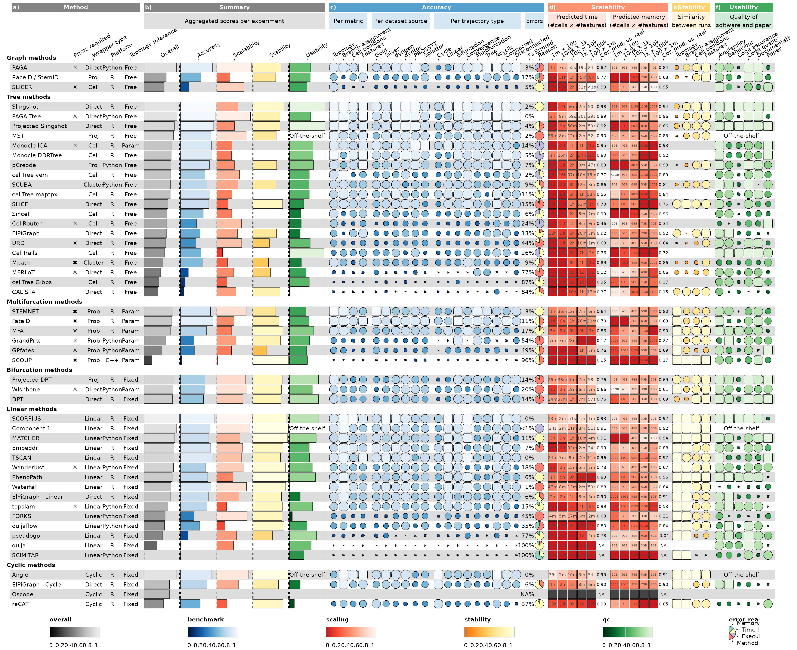

In this vignette, we will use funkyheatmap to reproduce
the figures by Saelens et al. (2019).
Load data
This data was generated by running the data-raw/dynbenchmark_data.R
script. It fetches the latest results from the dynbenchmark_results
repository and stores the data inside the funkyheatmap
package.
library(funkyheatmap)
library(kableExtra)
data("dynbenchmark_data")Process results
The results data is one big data frame.
data <- dynbenchmark_data$data
kable(data, "html") %>%
scroll_box(width = "150%", height = "600px")| id | method_name | method_source | tool_id | method_platform | method_url | method_license | method_authors | method_description | wrapper_input_required | wrapper_input_optional | wrapper_type | wrapper_topology_inference | wrapper_trajectory_types | wrapper_inputs | container_docker | container_url | manuscript_doi | manuscript_google_scholar_cluster_id | manuscript_preprint_date | manuscript_publication_date | package_remote | package_name | package_function_name | parameters | version | detects_cycle | detects_linear | detects_convergence | detects_bifurcation | detects_multifurcation | detects_tree | detects_acyclic_graph | detects_graph | detects_disconnected_graph | wrapper_most_complex_trajectory_type | wrapper_requires_prior | wrapper_required_priors | method_components | method_evaluated | method_directionality_inference | qc_score | manuscript_bibtex | manuscript_date | manuscript_citations | manuscript_cited_by_posts_count | required_priors_str | optional_priors_str | qc_overall_overall | qc_cat_availability | qc_cat_behaviour | qc_cat_code_assurance | qc_cat_code_quality | qc_cat_documentation | qc_cat_paper | qc_app_developer_friendly | qc_app_future_proof | qc_app_user_friendly | scaling_pred_overall_overall | scaling_pred_scoremem_cells100_features1m | scaling_pred_scoremem_cells100k_features1k | scaling_pred_scoremem_cells10k_features10k | scaling_pred_scoremem_cells1k_features100k | scaling_pred_scoremem_cells1m_features100 | scaling_pred_scoremem_overall | scaling_pred_scoretime_cells100_features1m | scaling_pred_scoretime_cells100k_features1k | scaling_pred_scoretime_cells10k_features10k | scaling_pred_scoretime_cells1k_features100k | scaling_pred_scoretime_cells1m_features100 | scaling_pred_scoretime_overall | scaling_pred_mem_cells100_features1m | scaling_pred_mem_cells100k_features1k | scaling_pred_mem_cells10k_features10k | scaling_pred_mem_cells1k_features100k | scaling_pred_mem_cells1m_features100 | scaling_pred_memstr_cells100_features1m | scaling_pred_memstr_cells100k_features1k | scaling_pred_memstr_cells10k_features10k | scaling_pred_memstr_cells1k_features100k | scaling_pred_memstr_cells1m_features100 | scaling_pred_time_cells100_features1m | scaling_pred_time_cells100k_features1k | scaling_pred_time_cells10k_features10k | scaling_pred_time_cells1k_features100k | scaling_pred_time_cells1m_features100 | scaling_pred_timestr_cells100_features1m | scaling_pred_timestr_cells100k_features1k | scaling_pred_timestr_cells10k_features10k | scaling_pred_timestr_cells1k_features100k | scaling_pred_timestr_cells1m_features100 | scaling_models_pct_errored | scaling_models_predict_time | scaling_models_predict_mem | scaling_models_time_lpred | scaling_models_mem_lpred | param_id | benchmark_overall_norm_correlation | benchmark_overall_norm_featureimp_wcor | benchmark_overall_norm_F1_branches | benchmark_overall_norm_him | benchmark_overall_overall | benchmark_overall_pct_errored | benchmark_overall_pct_execution_error | benchmark_overall_pct_memory_limit | benchmark_overall_pct_method_error_all | benchmark_overall_pct_method_error_stoch | benchmark_overall_pct_time_limit | benchmark_tt_acyclic_graph | benchmark_tt_bifurcation | benchmark_tt_convergence | benchmark_tt_cycle | benchmark_tt_disconnected_graph | benchmark_tt_graph | benchmark_tt_linear | benchmark_tt_multifurcation | benchmark_tt_tree | benchmark_source_real_gold | benchmark_source_real_silver | benchmark_source_synthetic_dyngen | benchmark_source_synthetic_dyntoy | benchmark_source_synthetic_prosstt | benchmark_source_synthetic_splatter | benchmark_overall_time_predcor | benchmark_overall_mem_predcor | stability_overall_overall | stability_correlation | stability_him | stability_featureimp_wcor | stability_F1_branches | summary_overall_overall | group | control_label | method_priors_required_str | method_topology_inference | method_wrapper_type | benchmark_overall_error_reasons | benchmark_overall_pct_errored_str | benchmark_overall_mem_predcor_str | benchmark_overall_time_predcor_str | scaling_pred_timecomb_cells100_features1m | scaling_pred_timecomb_cells100k_features1k | scaling_pred_timecomb_cells10k_features10k | scaling_pred_timecomb_cells1k_features100k | scaling_pred_timecomb_cells1m_features100 | scaling_pred_memcomb_cells100_features1m | scaling_pred_memcomb_cells100k_features1k | scaling_pred_memcomb_cells10k_features10k | scaling_pred_memcomb_cells1k_features100k | scaling_pred_memcomb_cells1m_features100 | itt_cycle | itt_linear | itt_convergence | itt_bifurcation | itt_multifurcation | itt_tree | itt_acyclic_graph | itt_graph | itt_disconnected_graph |
|---|---|---|---|---|---|---|---|---|---|---|---|---|---|---|---|---|---|---|---|---|---|---|---|---|---|---|---|---|---|---|---|---|---|---|---|---|---|---|---|---|---|---|---|---|---|---|---|---|---|---|---|---|---|---|---|---|---|---|---|---|---|---|---|---|---|---|---|---|---|---|---|---|---|---|---|---|---|---|---|---|---|---|---|---|---|---|---|---|---|---|---|---|---|---|---|---|---|---|---|---|---|---|---|---|---|---|---|---|---|---|---|---|---|---|---|---|---|---|---|---|---|---|---|---|---|---|---|---|---|---|---|---|---|---|---|---|---|---|---|---|---|---|---|---|---|---|---|---|---|---|---|---|---|---|---|---|---|---|
| paga | PAGA | tool | paga | Python | https://github.com/theislab/graph_abstraction | NA | Alexander , Wolf , alex.wolf@helmholtz-muenchen.de , falexwolf , 0000-0002-8760-7838 , Fabian , Theis , fabian.theis@helmholtz-muenchen.de, theislab | NA | counts , start_id | groups_id | direct | free | cycle , linear , bifurcation , convergence , multifurcation , tree , acyclic_graph , graph , disconnected_graph | counts , start_id , groups_id , filter_features , n_neighbors , n_comps , n_dcs , resolution , embedding_type , connectivity_cutoff, TRUE , TRUE , FALSE , FALSE , FALSE , FALSE , FALSE , FALSE , FALSE , FALSE , expression , prior_information , prior_information , parameter , parameter , parameter , parameter , parameter , parameter , parameter | dynverse/ti_paga | https://github.com/dynverse/ti_paga | 10.1186/s13059-019-1663-x | 10470081259069082868 | 2017-10-27 | 2019-03-19 | filter_features , TRUE , Whether to do feature filtering , TRUE , n_neighbors , 15 , Number of neighbours for knn , TRUE , 1 , 100 , n_comps , 50 , Number of principal components , TRUE , 0 , 100 , n_dcs , 15 , Number of diffusion components for denoising graph, 0 means no denoising. , TRUE , 0 , 40 , resolution , 1 , Resolution of louvain clustering, which determines the granularity of the clustering. Higher values will result in more clusters. , TRUE , 0.1 , 10 , embedding_type , fa , Either ‘umap’ (scales very well, recommended for very large datasets) or ‘fa’ (ForceAtlas2, often a bit more intuitive for small datasets)., TRUE , umap , fa , connectivity_cutoff , 0.05 , Cutoff for the connectivity matrix , TRUE , 0 , 1 | 0.9.9.05 | TRUE | TRUE | TRUE | TRUE | TRUE | TRUE | TRUE | TRUE | TRUE | disconnected_graph | FALSE | kNN + louvain clustering + connectivity test { edge statistics | random walk } + diffusion pseudo time | TRUE | NA | 0.7159933 | wolf_graphabstractionreconciles_2017 | 2017-10-27 | 42 | 182 | start_id | groups_id | 0.7159933 | 0.8970588 | 0.8333333 | 0.1809524 | 1.0000000 | 1.0000000 | 0.3846154 | 0.6815385 | 0.6470588 | 0.8506125 | 0.7442956 | 0.6974906 | 0.7444376 | 0.7507742 | 0.7415979 | 0.7321797 | 0.7332960 | 0.9193397 | 0.6553705 | 0.8440365 | 0.9389970 | 0.4187325 | 0.7552952 | 3518733966.48014 | 2894620617.72371 | 2819335266.25556 | 2929009487.67078 | 3046011984.99215 | 4GB | 3GB | 3GB | 3GB | 3GB | 24.3044671878711 | 444.512958275739 | 55.6873687061953 | 19.5745968202617 | 6017.21503967879 | 24s | 7m | 55s | 19s | 1h | 0.1068670 | structure(function (n_cells, n_features) , {, requireNamespace(“akima”), 10^akima::bicubic(x = model_seq, y = model_seq, z = pred_mat, , x0 = log10(n_cells), y0 = log10(n_features))\(z, }, class = "crate") </td> <td style="text-align:left;"> structure(function (n_cells, n_features) , {, requireNamespace("akima"), 10^akima::bicubic(x = model_seq, y = model_seq, z = pred_mat, , x0 = log10(n_cells), y0 = log10(n_features))\)z, }, class = “crate”) | 1.6212735 | 8.694769 | default | 0.6504941 | 0.7303490 | 0.6087144 | 0.5974547 | 0.6447229 | 0.0337673 | 0.0113922 | 0.0000000 | 0.0223751 | 0 | 0.0000000 | 0.6624284 | 0.6596407 | 0.6626766 | 0.4120580 | 0.7486168 | 0.6416734 | 0.4753914 | 0.7155187 | 0.7579388 | 0.6067182 | 0.6114226 | 0.6444272 | 0.6730403 | 0.7434746 | 0.5772955 | 0.8199776 | 0.8375695 | 0.7811606 | 0.7296895 | 0.8534647 | 0.8703436 | 0.7349955 | 0.7040900 | graph | ✕ | Free | Direct | 0.02237514, 0.00000000, 0.00000000, 0.01139219 | 3% | 0.84 | 0.82 | 0.91933972846732, 24s | 0.655370510856887, 7m | 0.844036544292688, 55s | 0.938996966109333, 19s | 0.418732498839625, 1h | 0.697490592766603, 4GB | 0.744437620939206, 3GB | 0.750774158541594, 3GB | 0.741597855597654, 3GB | 0.732179730277178, 3GB | cycle | linear | convergence | bifurcation | multifurcation | tree | acyclic_graph | graph | disconnected_graph | ||||||
| raceid_stemid | RaceID / StemID | tool | raceid_stemid | R | https://github.com/dgrun/RaceID3_StemID2_package | NA | Dominic , Grün , gruen@ie-freibug.mpg.de , dgrun , Alexander , van Oudenaarden , a.vanoudenaarden@hubrecht.eu, avolab | NA | counts | orth_proj | free | cycle , linear , bifurcation , convergence , multifurcation , binary_tree , tree , acyclic_graph , graph , disconnected_graph | counts , knn , ccor , metric , sat , samp , cln , clustnr , bootnr , FUNcluster , probthr , outminc , outlg , outdistquant , initial_cmd , perplexity , cthr , nmode , projcells_knn, fr , pdishuf , fast , pthr , scthr , TRUE , FALSE , FALSE , FALSE , FALSE , FALSE , FALSE , FALSE , FALSE , FALSE , FALSE , FALSE , FALSE , FALSE , FALSE , FALSE , FALSE , FALSE , FALSE , FALSE , FALSE , FALSE , FALSE , FALSE , expression , parameter , parameter , parameter , parameter , parameter , parameter , parameter , parameter , parameter , parameter , parameter , parameter , parameter , parameter , parameter , parameter , parameter , parameter , parameter , parameter , parameter , parameter , parameter | dynverse/ti_raceid_stemid | https://github.com/dynverse/ti_raceid_stemid | 10.1016/j.stem.2016.05.010 | 169140648120472800360 | NA | 2016-06-21 |
knn , 10 , Number of nearest neighbors used to infer corresponding cell
types in different batches. , TRUE , 5 , 50 , ccor , 0.4 , Correlation
coefficient used as a treshhold for determining genes correlated to
eachother. , TRUE , 0 , 1 , metric , pearson , Distances are computed
from the filtered expression matrix after optional feature selection,
dimensional reduction, and/or transformation (batch correction). , TRUE
, pearson , spearman , logpearson , euclidean , sat , TRUE , If
TRUE, then the number of clusters is determined based on
finding the saturation point of the mean within-cluster dispersion as a
function of the cluster number. If FALSE, then cluster
number needs to be given as cln. , TRUE , samp , 1000 ,
number of bootstrapping runs for clusterboot , TRUE , 50 , 10000 , cln ,
30 , Number of clusters to be used. If sat is
TRUE, this number is inferred by the saturation criterion.
, TRUE , 10 , 100 , clustnr , 30 , Maximum number of clusters for the
derivation of the cluster number by the saturation of mean
within-cluster-dispersion. , TRUE , 10 , 100 , bootnr , 50 , Number of
booststrapping runs for clusterboot. , TRUE , 20 , 100 , FUNcluster ,
kmedoids , Clustering method used by RaceID3. , TRUE , kmedoids , kmeans
, hclust , probthr , 0.001 , Outlier probability threshold for a minimum
of outlg genes to be an outlier cell. This probability is computed from
a negative binomial background model of expression in a cluster. , TRUE
, 1e-05 , 1 , outminc , 5 , Minimal transcript count of a gene in a
clusters to be tested for being an outlier gene. , TRUE , 0 , 100 ,
outlg , 2 , Minimum number of outlier genes required for being an
outlier cell. , TRUE , 0 , 100 , outdistquant , 0.95 , Real number
between zero and one. Outlier cells are merged to outlier clusters if
their distance smaller than the outdistquant-quantile of the distance
distribution of pairs of cells in the orginal clusters after outlier
removal., TRUE , 0 , 1 , initial_cmd , TRUE , If TRUE, then the t-SNE
map computation is initialized with a configuration obtained by
classical multidimensional scaling. , TRUE , perplexity , 30 ,
Perplexity of the t-SNE map. , TRUE , 5 , 100 , cthr , 5 , Clusters to
be included into the StemID2 analysis must contain more than cthr cells.
D , TRUE , 1 , 25 , nmode , TRUE , If TRUE, then a cell of
given cluster is assigned to the link to the cluster with the smallest
average distance of the knn nearest neighbours within this cluster. ,
TRUE , projcells_knn , 3 , See nmode. , TRUE , 3 , 20 , fr
, FALSE , Use Fruchterman-Rheingold layout instead of t-SNE for
dimensional-reduction representation of the lineage tree. , TRUE ,
pdishuf , 500 , Number of randomizations of cell positions for which to
compute projections of cells on inter-cluster links. , TRUE , 10 , 10000
, fast , FALSE , If TRUE and nmode is
FALSE cells will still be assigned to links based on
maximum projections but a fast approximate background model will be used
to infer significance. The function will do nothing in this case. , TRUE
, pthr , 0.01 , p-value cutoff for link significance. This threshold is
applied for the calculation of link scores reflecting how uniformly a
link is occupied by cells. , TRUE , 1e-05 , 1 , scthr , 0.2 , Score
threshold for links to be shown in the graph. , TRUE , 0 , 1
|
0.9.9.01 | TRUE | TRUE | TRUE | TRUE | TRUE | TRUE | TRUE | TRUE | TRUE | disconnected_graph | FALSE | k-medoids + {sammon|tSNE} + entropy calculation + cell projection to tree backbone + {edge p-values|MST} | TRUE | expression | 0.7074671 | grun_novopredictionstem_2016 | 2016-06-21 | 0 | 26 | 0.7074671 | 0.8676471 | 0.6666667 | 0.2857143 | 1.0000000 | 0.9247743 | 0.5000000 | 0.7000000 | 0.6176471 | 0.8356737 | 0.2850089 | 0.6779253 | 0.0000000 | 0.1614587 | 0.5485471 | 0.0000000 | 0.2775862 | 0.2668453 | 0.2473936 | 0.4461850 | 0.4911901 | 0.0105445 | 0.2924317 | 3817024217.10267 | 796177801526.509 | 32700659871.496 | 6537401488.04215 | 22008393092400.9 | 4GB | 796GB | 33GB | 7GB | >1TB | 32037.6977175706 | 39689.1502844218 | 4447.62782917671 | 2709.7631609012 | 538508.128860082 | 8h | 11h | 1h | 45m | 6d | 0.6652361 | structure(function (n_cells, n_features) , {, requireNamespace(“akima”), 10^akima::bicubic(x = model_seq, y = model_seq, z = pred_mat, , x0 = log10(n_cells), y0 = log10(n_features))\(z, }, class = "crate") </td> <td style="text-align:left;"> structure(function (n_cells, n_features) , {, requireNamespace("akima"), 10^akima::bicubic(x = model_seq, y = model_seq, z = pred_mat, , x0 = log10(n_cells), y0 = log10(n_features))\)z, }, class = “crate”) | 2.3946926 | 9.051322 | default | 0.5393572 | 0.6255247 | 0.2683444 | 0.4539247 | 0.4502455 | 0.1732618 | 0.0000000 | 0.0581818 | 0.0948472 | 0 | 0.0202328 | 0.4622333 | 0.3664789 | 0.4412377 | 0.4903685 | 0.4159391 | 0.4942980 | 0.3278037 | 0.3727858 | 0.6201060 | 0.4413419 | 0.4140061 | 0.4345574 | 0.4450760 | 0.4510954 | 0.5760199 | 0.7743208 | 0.6805283 | 0.6446670 | 0.6687213 | 0.8537311 | 0.9100271 | 0.3868531 | 0.4832365 | graph | Free | Proj | 0.09484721, 0.02023279, 0.05818176, 0.00000000 | 17% | 0.68 | 0.77 | 0.266845269153294, 8h | 0.247393564183452, 11h | 0.446184977065819, 1h | 0.4911901164428, 45m | 0.0105444610235081, 6d | 0.677925276706939, 4GB | 0 , 796GB | 0.1614586927895, 33GB | 0.548547116402693, 7GB | 0 , >1TB | cycle | linear | convergence | bifurcation | multifurcation | tree | acyclic_graph | graph | disconnected_graph | ||||||||||
| slicer | SLICER | tool | slicer | R | https://github.com/jw156605/SLICER | GPL-2 | Joshua , Welch , jwelch@cs.unc.edu, jw156605 , Jan , Prins , prins@cs.unc.edu | NA | expression, start_id | features_id, end_id | cell_graph | free | cycle , linear , bifurcation , convergence , multifurcation, binary_tree , tree , acyclic_graph , graph | expression , start_id , features_id , end_id , kmin , m , TRUE , TRUE , FALSE , FALSE , FALSE , FALSE , expression , prior_information, prior_information, prior_information, parameter , parameter | dynverse/ti_slicer | https://github.com/dynverse/ti_slicer | 10.1186/s13059-016-0975-3 | 2071780199208319199 | 2016-04-09 | 2016-05-23 | kmin , 10 , Smallest value of k to try , TRUE , 2 , 20 , m , 2 , Intrinsic dimension of the data. This parameter mainly influences the visualisation of the results. The real intrinsic dimension will be calculated automaticly. , TRUE , 2 , 20 | 0.9.9.01 | TRUE | TRUE | TRUE | TRUE | TRUE | TRUE | TRUE | TRUE | FALSE | graph | FALSE | LLE + kNN + longest shortest path (for tip cell detection) + geodesic entropy for branch recovery | TRUE | NA | 0.6433950 | welch_slicerinferringbranched_2016 | 2016-04-09 | 84 | 19 | start_id | features_id,end_id | 0.6433950 | 0.9705882 | 0.6666667 | 0.1428571 | 0.7222222 | 0.4734203 | 0.8846154 | 0.5846154 | 0.6862745 | 0.7983269 | 0.5913925 | 0.9884677 | 0.5700630 | 0.7694431 | 0.9327925 | 0.3624331 | 0.7246399 | 1.0000000 | 0.0000000 | 0.3941502 | 0.8965752 | 0.0000000 | 0.4581451 | 1049130398.47433 | 5977830849.72483 | 2608718665.92771 | 1322479209.44652 | 14176226520.864 | 1GB | 6GB | 3GB | 1GB | 14GB | 0.75377304644792 | 2945459.46225311 | 7887.48758297588 | 31.2274961955926 | 1099923793.54473 | <1s | >7d | 2h | 31s | >7d | 0.3154506 | structure(function (n_cells, n_features) , {, requireNamespace(“akima”), 10^akima::bicubic(x = model_seq, y = model_seq, z = pred_mat, , x0 = log10(n_cells), y0 = log10(n_features))\(z, }, class = "crate") </td> <td style="text-align:left;"> structure(function (n_cells, n_features) , {, requireNamespace("akima"), 10^akima::bicubic(x = model_seq, y = model_seq, z = pred_mat, , x0 = log10(n_cells), y0 = log10(n_features))\)z, }, class = “crate”) | 2.1548691 | 8.992920 | default | 0.1387779 | 0.1695031 | 0.2475509 | 0.5536164 | 0.2382829 | 0.0521169 | 0.0000000 | 0.0000000 | 0.0000000 | 0 | 0.0521169 | 0.2123972 | 0.2616781 | 0.2474348 | 0.2131341 | 0.2445346 | 0.2278973 | 0.2571362 | 0.2064745 | 0.2249941 | 0.2658461 | 0.2550140 | 0.2085113 | 0.1969563 | 0.1807978 | 0.2973289 | 0.9943689 | 0.9475918 | NA | NA | NA | NA | NA | 0.4384703 | graph | ✕ | Free | Cell | 0.00000000, 0.05211686, 0.00000000, 0.00000000 | 5% | 0.95 | 0.99 | 1 , <1s | 0 , >7d | 0.394150169371115, 2h | 0.896575216346292, 31s | 0 , >7d | 0.988467665924124, 1GB | 0.570062987547508, 6GB | 0.769443105522842, 3GB | 0.932792492989344, 1GB | 0.362433057201111, 14GB | cycle | linear | convergence | bifurcation | multifurcation | tree | acyclic_graph | graph | gray_disconnected_graph | ||||||
| slingshot | Slingshot | tool | slingshot | R | https://github.com/kstreet13/slingshot | Artistic-2.0 | Kelly , Street , street.kelly@gmail.com , kstreet13 , Sandrine , Dudoit , sandrine@stat.berkeley.edu, 0000-0002-6069-8629 , sandrinedudoit | NA | expression | start_id, end_id | direct | free | linear , bifurcation , convergence , multifurcation, binary_tree , tree | expression , start_id , end_id , cluster_method , ndim , shrink , reweight , reassign , thresh , maxit , stretch , smoother , shrink.method , TRUE , FALSE , FALSE , FALSE , FALSE , FALSE , FALSE , FALSE , FALSE , FALSE , FALSE , FALSE , FALSE , expression , prior_information, prior_information, parameter , parameter , parameter , parameter , parameter , parameter , parameter , parameter , parameter , parameter | dynverse/ti_slingshot | https://github.com/dynverse/ti_slingshot | 10.1186/s12864-018-4772-0 | 15798146274231272778 | 2017-04-19 | 2018-06-19 | dynverse/ti_slingshot/package | tislingshot | ti_slingshot |
cluster_method , pam , TRUE , pam , clara , ndim , 20 , The number of
dimensions in the new space. , TRUE , 2 , 100 , shrink , 1 , logical or
numeric between 0 and 1, determines whether and how much to shrink
branching lineages toward their average prior to the split. , TRUE , 0 ,
1 , reweight , TRUE , logical, whether to allow cells shared between
lineages to be reweighted during curve-fitting. If TRUE,
cells shared between lineages will be weighted by: distance to nearest
curve / distance to curve. , TRUE , reassign , TRUE , logical, whether
to reassign cells to lineages at each iteration. If TRUE, cells will be
added to a lineage when their projection distance to the curve is less
than the median distance for all cells currently assigned to the
lineage. Additionally, shared cells will be removed from a lineage if
their projection distance to the curve is above the 90th percentile and
their weight along the curve is less than 0.1., TRUE , thresh , 0.001 ,
numeric, determines the convergence criterion. Percent change in the
total distance from cells to their projections along curves must be less
than thresh. Default is 0.001, similar to principal.curve. , TRUE ,
1e-05 , 100000 , maxit , 10 , numeric, maximum number of iterations, see
principal.curve. , TRUE , 0 , 50 , stretch , 2 , numeric factor by which
curves can be extrapolated beyond endpoints. Default is 2, see
principal.curve. , TRUE , 0 , 5 , smoother , smooth.spline , choice of
scatter plot smoother. Same as principal.curve, but “lowess” option is
replaced with “loess” for additional flexibility. , TRUE , smooth.spline
, loess , periodic.lowess , shrink.method , cosine , character denoting
how to determine the appropriate amount of shrinkage for a branching
lineage. Accepted values are the same as for kernel in
density() (default is "cosine"), as well as
"tricube" and "density". See ‘Details’ for
more. , TRUE , cosine , tricube , density
|
1, 0, 3 | FALSE | TRUE | TRUE | TRUE | TRUE | TRUE | FALSE | FALSE | FALSE | tree | FALSE | PCA + k-means + MST (between clusters) + (shrunken) principal curves (through all paths) | TRUE | NA | 0.9877975 | street_slingshotcelllineage_2017 | 2017-04-19 | 72 | 13 | start_id,end_id | 0.9877975 | 0.9705882 | 1.0000000 | 0.9938095 | 1.0000000 | 0.9623872 | 1.0000000 | 0.9826154 | 0.9852941 | 0.9738572 | 0.4557165 | 0.4532432 | 0.4676478 | 0.4245753 | 0.4316363 | 0.4733505 | 0.4500906 | 0.8521651 | 0.2365315 | 0.4705050 | 0.7475108 | 0.0000000 | 0.4613425 | 9717199688.17032 | 9152167686.24448 | 10947641569.9072 | 10630830135.019 | 8937658434.11464 | 10GB | 9GB | 11GB | 11GB | 9GB | 50.9200906081538 | 44731.1305690056 | 3402.82613901611 | 161.177907071866 | 803797.344931601 | 50s | 12h | 56m | 2m | >7d | 0.2836910 | structure(function (n_cells, n_features) , {, requireNamespace(“akima”), 10^akima::bicubic(x = model_seq, y = model_seq, z = pred_mat, , x0 = log10(n_cells), y0 = log10(n_features))\(z, }, class = "crate") </td> <td style="text-align:left;"> structure(function (n_cells, n_features) , {, requireNamespace("akima"), 10^akima::bicubic(x = model_seq, y = model_seq, z = pred_mat, , x0 = log10(n_cells), y0 = log10(n_features))\)z, }, class = “crate”) | 1.4621032 | 8.961344 | default | 0.7401781 | 0.7243311 | 0.6909130 | 0.6533370 | 0.7013883 | 0.0210154 | 0.0000000 | 0.0000000 | 0.0000000 | 0 | 0.0210154 | 0.6742280 | 0.7352162 | 0.7163048 | 0.6838392 | 0.7127201 | 0.6860753 | 0.7339078 | 0.7188894 | 0.6295816 | 0.7005643 | 0.6632122 | 0.7134174 | 0.7252768 | 0.7762775 | 0.6689607 | 0.9800884 | 0.9400109 | 0.8650215 | 0.8767785 | 0.8872662 | 0.9174888 | 0.8218821 | 0.7185572 | tree | Free | Direct | 0.00000000, 0.02101535, 0.00000000, 0.00000000 | 2% | 0.94 | 0.98 | 0.852165085764159, 50s | 0.236531520946526, 12h | 0.470504952017442, 56m | 0.747510762690889, 2m | 0 , >7d | 0.453243230583347, 10GB | 0.467647752424507, 9GB | 0.424575299821207, 11GB | 0.431636274564373, 11GB | 0.473350514824384, 9GB | gray_cycle | linear | convergence | bifurcation | multifurcation | tree | gray_acyclic_graph | gray_graph | gray_disconnected_graph | |||||
| paga_tree | PAGA Tree | tool | paga | Python | https://github.com/theislab/graph_abstraction | NA | Alexander , Wolf , alex.wolf@helmholtz-muenchen.de , falexwolf , 0000-0002-8760-7838 , Fabian , Theis , fabian.theis@helmholtz-muenchen.de, theislab | This method runs exactly the same as normal PAGA, but will construct a minimal-spanning tree between clusters | counts , start_id | groups_id | direct | free | linear , bifurcation , convergence , multifurcation, tree | counts , start_id , groups_id , filter_features , n_neighbors , n_comps , n_dcs , resolution , embedding_type , TRUE , TRUE , FALSE , FALSE , FALSE , FALSE , FALSE , FALSE , FALSE , expression , prior_information, prior_information, parameter , parameter , parameter , parameter , parameter , parameter | dynverse/ti_paga_tree | https://github.com/dynverse/ti_paga_tree | 10.1186/s13059-019-1663-x | 10470081259069082868 | 2017-10-27 | 2019-03-19 | filter_features , TRUE , Whether to do feature filtering , TRUE , n_neighbors , 15 , Number of neighbours for knn , TRUE , 1 , 100 , n_comps , 50 , Number of principal components , TRUE , 0 , 100 , n_dcs , 15 , Number of diffusion components for denoising graph, 0 means no denoising. , TRUE , 0 , 40 , resolution , 1 , Resolution of louvain clustering, which determines the granularity of the clustering. Higher values will result in more clusters. , TRUE , 0.1 , 10 , embedding_type , fa , Either ‘umap’ (scales very well, recommended for very large datasets) or ‘fa’ (ForceAtlas2, often a bit more intuitive for small datasets)., TRUE , umap , fa | 0.9.9.06 | FALSE | TRUE | TRUE | TRUE | TRUE | TRUE | FALSE | FALSE | FALSE | tree | FALSE | kNN + louvain clustering + connectivity test { edge statistics | random walk } + diffusion pseudo time + MST | TRUE | NA | 0.7159933 | wolf_graphabstractionreconciles_2017 | 2017-10-27 | 42 | 182 | start_id | groups_id | 0.7159933 | 0.8970588 | 0.8333333 | 0.1809524 | 1.0000000 | 1.0000000 | 0.3846154 | 0.6815385 | 0.6470588 | 0.8506125 | 0.7265490 | 0.7135367 | 0.6836386 | 0.7622778 | 0.7111884 | 0.6897885 | 0.7120860 | 0.9015139 | 0.6452499 | 0.8386913 | 0.9337184 | 0.3858862 | 0.7410119 | 3291578480.49421 | 3727397409.73308 | 2687627862.71263 | 3323883427.2449 | 3633270888.98501 | 3GB | 4GB | 3GB | 3GB | 4GB | 29.5748198841278 | 496.909374427957 | 59.0630175953475 | 20.7459218445778 | 8638.81159978244 | 29s | 8m | 59s | 20s | 2h | 0.0901288 | structure(function (n_cells, n_features) , {, requireNamespace(“akima”), 10^akima::bicubic(x = model_seq, y = model_seq, z = pred_mat, , x0 = log10(n_cells), y0 = log10(n_features))\(z, }, class = "crate") </td> <td style="text-align:left;"> structure(function (n_cells, n_features) , {, requireNamespace("akima"), 10^akima::bicubic(x = model_seq, y = model_seq, z = pred_mat, , x0 = log10(n_cells), y0 = log10(n_features))\)z, }, class = “crate”) | 1.7112411 | 8.704550 | default | 0.6880083 | 0.7364518 | 0.6716161 | 0.6665846 | 0.6901263 | 0.0000000 | 0.0000000 | 0.0000000 | 0.0000000 | 0 | 0.0000000 | 0.6792984 | 0.6998949 | 0.6736045 | 0.5266763 | 0.7781482 | 0.7069594 | 0.5747177 | 0.7748171 | 0.7698482 | 0.6449265 | 0.6739539 | 0.6939954 | 0.7150279 | 0.7503032 | 0.6593529 | 0.8931395 | 0.9588126 | 0.7557804 | 0.7084172 | 0.8228800 | 0.8358713 | 0.7257136 | 0.7152952 | tree | ✕ | Free | Direct | 0, 0, 0, 0 | 0% | 0.96 | 0.89 | 0.901513939274165, 29s | 0.645249914223051, 8m | 0.838691289282693, 59s | 0.933718429710287, 20s | 0.385886153804229, 2h | 0.71353673398728, 3GB | 0.683638559111553, 4GB | 0.762277768013936, 3GB | 0.711188369021105, 3GB | 0.689788510991465, 4GB | gray_cycle | linear | convergence | bifurcation | multifurcation | tree | gray_acyclic_graph | gray_graph | gray_disconnected_graph | ||||||
| projected_slingshot | Projected Slingshot | tool | slingshot | R | https://github.com/kstreet13/slingshot | Artistic-2.0 | NULL | NA | expression | start_id, end_id | direct | free | linear , bifurcation , convergence , multifurcation, binary_tree , tree | expression , start_id , end_id , shrink , reweight , reassign , thresh , maxit , stretch , smoother , shrink.method , TRUE , FALSE , FALSE , FALSE , FALSE , FALSE , FALSE , FALSE , FALSE , FALSE , FALSE , expression , prior_information, prior_information, parameter , parameter , parameter , parameter , parameter , parameter , parameter , parameter | dynverse/ti_projected_slingshot | https://github.com/dynverse/ti_projected_slingshot | 10.1186/s12864-018-4772-0 | 15798146274231272778 | 2017-04-19 | 2018-06-19 |
shrink , 1 , logical or numeric between 0 and 1, determines whether and
how much to shrink branching lineages toward their average prior to the
split. , TRUE , 0 , 1 , reweight , TRUE , logical, whether to allow
cells shared between lineages to be reweighted during curve-fitting. If
TRUE, cells shared between lineages will be weighted by:
distance to nearest curve / distance to curve. , TRUE , reassign , TRUE
, logical, whether to reassign cells to lineages at each iteration. If
TRUE, cells will be added to a lineage when their projection distance to
the curve is less than the median distance for all cells currently
assigned to the lineage. Additionally, shared cells will be removed from
a lineage if their projection distance to the curve is above the 90th
percentile and their weight along the curve is less than 0.1., TRUE ,
thresh , 0.001 , numeric, determines the convergence criterion. Percent
change in the total distance from cells to their projections along
curves must be less than thresh. Default is 0.001, similar to
principal.curve. , TRUE , 1e-05 , 100000 , maxit , 10 , numeric, maximum
number of iterations, see principal.curve. , TRUE , 0 , 50 , stretch , 2
, numeric factor by which curves can be extrapolated beyond endpoints.
Default is 2, see principal.curve. , TRUE , 0 , 5 , smoother ,
smooth.spline , choice of scatter plot smoother. Same as
principal.curve, but “lowess” option is replaced with “loess” for
additional flexibility. , TRUE , smooth.spline , loess , periodic.lowess
, shrink.method , cosine , character denoting how to determine the
appropriate amount of shrinkage for a branching lineage. Accepted values
are the same as for kernel in density()
(default is "cosine"), as well as "tricube"
and "density". See ‘Details’ for more. , TRUE , cosine ,
tricube , density
|
0.9.9.01 | FALSE | TRUE | TRUE | TRUE | TRUE | TRUE | FALSE | FALSE | FALSE | tree | FALSE | k-medoids + {sammon|tSNE} + entropy calculation + cell projection to tree backbone + {edge p-values|MST} + projection | TRUE | NA | 0.9877975 | street_slingshotcelllineage_2017 | 2017-04-19 | 72 | 13 | start_id,end_id | 0.9877975 | 0.9705882 | 1.0000000 | 0.9938095 | 1.0000000 | 0.9623872 | 1.0000000 | 0.9826154 | 0.9852941 | 0.9738572 | 0.3802521 | 0.4477607 | 0.1356547 | 0.3750705 | 0.4878905 | 0.0000000 | 0.2892753 | 0.8537247 | 0.2563191 | 0.4810211 | 0.7572728 | 0.0078066 | 0.4712289 | 9941306768.88814 | 36405181844.9365 | 13450401142.5321 | 8413214846.45792 | 601558974405.642 | 10GB | 36GB | 13GB | 8GB | 602GB | 50.053159746197 | 35974.3956527904 | 3030.7880353292 | 144.752860467987 | 554987.888504865 | 50s | 9h | 50m | 2m | 6d | 0.3257511 | structure(function (n_cells, n_features) , {, requireNamespace(“akima”), 10^akima::bicubic(x = model_seq, y = model_seq, z = pred_mat, , x0 = log10(n_cells), y0 = log10(n_features))\(z, }, class = "crate") </td> <td style="text-align:left;"> structure(function (n_cells, n_features) , {, requireNamespace("akima"), 10^akima::bicubic(x = model_seq, y = model_seq, z = pred_mat, , x0 = log10(n_cells), y0 = log10(n_features))\)z, }, class = “crate”) | 1.4817176 | 9.122018 | default | 0.6551315 | 0.6788597 | 0.6828560 | 0.6357031 | 0.6628618 | 0.0432148 | 0.0000000 | 0.0000000 | 0.0222683 | 0 | 0.0209465 | 0.6671512 | 0.5917615 | 0.6775535 | 0.6451439 | 0.6862667 | 0.6486941 | 0.7038215 | 0.6980458 | 0.6269328 | 0.5947333 | 0.6300790 | 0.6841067 | 0.7060559 | 0.7523780 | 0.6510848 | 0.9184304 | 0.8626804 | 0.7589147 | 0.7129588 | 0.8885060 | 0.7833521 | 0.8308292 | 0.6600179 | tree | Free | Direct | 0.02226833, 0.02094652, 0.00000000, 0.00000000 | 4% | 0.86 | 0.92 | 0.853724741665627, 50s | 0.256319068014801, 9h | 0.481021112337476, 50m | 0.75727281774588, 2m | 0.00780663060264764, 6d | 0.447760749298296, 10GB | 0.135654681596829, 36GB | 0.37507045083193, 13GB | 0.487890468909471, 8GB | 0 , 602GB | gray_cycle | linear | convergence | bifurcation | multifurcation | tree | gray_acyclic_graph | gray_graph | gray_disconnected_graph | ||||||||
| mst | MST | offtheshelf | mst | R | NA | NA | NULL | NA | expression | orth_proj | free | linear , bifurcation , convergence , multifurcation, tree | expression, dimred , ndim , TRUE , FALSE , FALSE , expression, parameter , parameter | dynverse/ti_mst | https://github.com/dynverse/ti_mst | NA | NA | NA | NA | dimred , pca , Which dimensionality reduction method to use., TRUE , pca , mds , tsne , ica , lle , landmark_mds , mds_sammon , mds_isomds , mds_smacof , umap , dm_diffusionMap , ndim , 2 , TRUE , 2 , 30 | 0.9.9.01 | FALSE | TRUE | TRUE | TRUE | TRUE | TRUE | FALSE | FALSE | FALSE | tree | FALSE | any multiple dimensionality reductions {PCA | MDS | tSNE | ICA | LLE} + mclust + MST + projection | TRUE | NA | NA | NA | NA | NA | NA | NA | NA | NA | NA | NA | NA | NA | NA | NA | NA | 0.6340065 | 0.5901849 | 0.6036938 | 0.6032958 | 0.6199288 | 0.5950474 | 0.6024301 | 0.8501076 | 0.6416306 | 0.6112844 | 0.7543217 | 0.4705698 | 0.6655828 | 5497937999.07904 | 5197569933.03222 | 5206178979.72342 | 4858218797.5282 | 5387871720.12012 | 5GB | 5GB | 5GB | 5GB | 5GB | 52.086762058287 | 517.110397712067 | 722.249096391989 | 149.533488785823 | 3400.39693043911 | 52s | 8m | 12m | 2m | 56m | 0.0266094 | structure(function (n_cells, n_features) , {, requireNamespace(“akima”), 10^akima::bicubic(x = model_seq, y = model_seq, z = pred_mat, , x0 = log10(n_cells), y0 = log10(n_features))\(z, }, class = "crate") </td> <td style="text-align:left;"> structure(function (n_cells, n_features) , {, requireNamespace("akima"), 10^akima::bicubic(x = model_seq, y = model_seq, z = pred_mat, , x0 = log10(n_cells), y0 = log10(n_features))\)z, }, class = “crate”) | 0.7718715 | 8.542314 | default | 0.6098712 | 0.6640261 | 0.5768291 | 0.6288011 | 0.6190788 | 0.0222683 | 0.0000000 | 0.0000000 | 0.0222683 | 0 | 0.0000000 | 0.6163458 | 0.5207420 | 0.6726266 | 0.5599904 | 0.6645638 | 0.6335571 | 0.6152152 | 0.5924499 | 0.6733866 | 0.5068111 | 0.6379840 | 0.6248640 | 0.6465913 | 0.6342485 | 0.6299131 | 0.8998427 | 0.8524616 | 0.6595589 | 0.6094257 | 0.8037571 | 0.7431350 | 0.6802825 | 0.6419344 | tree | Off-the-shelf | Free | Proj | 0.02226833, 0.00000000, 0.00000000, 0.00000000 | 2% | 0.85 | 0.90 | 0.850107580200247, 52s | 0.641630615718642, 8m | 0.611284417949899, 12m | 0.754321655657244, 2m | 0.470569813983274, 56m | 0.590184893751046, 5GB | 0.603693789233213, 5GB | 0.603295848327255, 5GB | 0.619928755753625, 5GB | 0.595047416321397, 5GB | gray_cycle | linear | convergence | bifurcation | multifurcation | tree | gray_acyclic_graph | gray_graph | gray_disconnected_graph | |||||||||
| monocle_ica | Monocle ICA | tool | monocle | R | https://github.com/cole-trapnell-lab/monocle-release | Artistic-2.0 | Xiaojie , Qiu , xqiu@uw.edu , Xiaojieqiu , Cole , Trapnell , coletrap@uw.edu , ctrapnell , 0000-0002-8105-4347 | NA | counts , start_n, end_n | cell_graph | parameter | linear , bifurcation , convergence , multifurcation, binary_tree , tree | counts , start_n , end_n , reduction_method , max_components , norm_method , filter_features , filter_features_mean_expression, TRUE , TRUE , TRUE , FALSE , FALSE , FALSE , FALSE , FALSE , expression , prior_information , prior_information , parameter , parameter , parameter , parameter , parameter | dynverse/ti_monocle_ica | https://github.com/dynverse/ti_monocle_ica | 10.1038/nmeth.4402 | NA | 2017-02-21 | 2017-07-20 |
reduction_method , ICA , A character string specifying the algorithm to
use for dimensionality reduction., TRUE , ICA , max_components , 2 , the
dimensionality of the reduced space , TRUE , 2 , 20 , norm_method , log
, Determines how to transform expression values prior to reducing
dimensionality , TRUE , vstExprs , log , none , filter_features , TRUE ,
whether to include monocle feature filtering , TRUE ,
filter_features_mean_expression , 0.1 , minimal mean feature expression,
only used when filter_features is set to TRUE, TRUE , 0 ,
10
|
0.9.9.01 | FALSE | TRUE | TRUE | TRUE | TRUE | TRUE | FALSE | FALSE | FALSE | tree | FALSE | PCA + ICA + polygonal reconstruction={MST + longest shortest path (from start) + PQ tree} | TRUE | root | 0.7628709 | qiu_reversedgraphembedding_2017 | 2017-02-21 | 347 | 63 | start_n,end_n | 0.7628709 | 0.9705882 | 0.6250000 | 0.5047619 | 0.7777778 | 0.6990973 | 1.0000000 | 0.6669231 | 0.9019608 | 0.9365103 | 0.3242384 | 0.0000000 | 0.6637273 | 0.6487184 | 0.1055002 | 0.7240962 | 0.4284084 | 0.1351299 | 0.0971464 | 0.4526075 | 0.4154580 | 0.0000000 | 0.2200684 | 1514082875429.48 | 4049198270.25591 | 4310005016.05724 | 41269343681.1909 | 3150155062.32149 | >1TB | 4GB | 4GB | 41GB | 3GB | 136606.962586598 | 207536.827267133 | 4143.98860721169 | 6238.10746203041 | 15714922.20255 | 1d | 2d | 1h | 1h | >7d | 0.5545064 | structure(function (n_cells, n_features) , {, requireNamespace(“akima”), 10^akima::bicubic(x = model_seq, y = model_seq, z = pred_mat, , x0 = log10(n_cells), y0 = log10(n_features))\(z, }, class = "crate") </td> <td style="text-align:left;"> structure(function (n_cells, n_features) , {, requireNamespace("akima"), 10^akima::bicubic(x = model_seq, y = model_seq, z = pred_mat, , x0 = log10(n_cells), y0 = log10(n_features))\)z, }, class = “crate”) | 3.0777630 | 9.360685 | default | 0.6290279 | 0.6657493 | 0.5967264 | 0.6048960 | 0.6235326 | 0.1378983 | 0.1342635 | 0.0000000 | 0.0000000 | 0 | 0.0036348 | 0.5815884 | 0.6477827 | 0.6378508 | 0.6732470 | 0.4728135 | 0.5745539 | 0.7224015 | 0.6462428 | 0.6165272 | 0.6796194 | 0.5639842 | 0.6377799 | 0.6066223 | 0.7799649 | 0.7638205 | 0.9521198 | 0.9347002 | NA | NA | NA | NA | NA | 0.5910702 | tree | ✕ | Param | Cell | 0.000000000, 0.003634787, 0.000000000, 0.134263490 | 14% | 0.93 | 0.95 | 0.135129947148524, 1d | 0.097146449875023, 2d | 0.452607473834363, 1h | 0.415458013094765, 1h | 0 , >7d | 0 , >1TB | 0.663727285540589, 4GB | 0.648718408608599, 4GB | 0.105500235033208, 41GB | 0.724096192472707, 3GB | gray_cycle | linear | convergence | bifurcation | multifurcation | tree | gray_acyclic_graph | gray_graph | gray_disconnected_graph | ||||||||
| monocle_ddrtree | Monocle DDRTree | tool | monocle | R | https://github.com/cole-trapnell-lab/monocle-release | Artistic-2.0 | Xiaojie , Qiu , xqiu@uw.edu , Xiaojieqiu , Cole , Trapnell , coletrap@uw.edu , ctrapnell , 0000-0002-8105-4347 | NA | counts | cell_graph | free | linear , bifurcation , convergence , multifurcation, binary_tree , tree | counts , reduction_method , max_components , norm_method , auto_param_selection , filter_features , filter_features_mean_expression, TRUE , FALSE , FALSE , FALSE , FALSE , FALSE , FALSE , expression , parameter , parameter , parameter , parameter , parameter , parameter | dynverse/ti_monocle_ddrtree | https://github.com/dynverse/ti_monocle_ddrtree | 10.1038/nmeth.4402 | 11257036368548979318 | 2017-02-21 | 2017-07-20 |
reduction_method , DDRTree , A character string specifying the algorithm
to use for dimensionality reduction. , TRUE , DDRTree , max_components ,
2 , the dimensionality of the reduced space , TRUE , 2 , 20 ,
norm_method , log , Determines how to transform expression values prior
to reducing dimensionality , TRUE , vstExprs , log , none ,
auto_param_selection , TRUE , when this argument is set to TRUE
(default), it will automatically calculate the proper value for the
ncenter (number of centroids) parameters which will be passed into
DDRTree call., TRUE , filter_features , TRUE , whether to include
monocle feature filtering , TRUE , filter_features_mean_expression , 0.1
, minimal mean feature expression, only used when
filter_features is set to TRUE , TRUE , 0 , 10
|
0.9.9.02 | FALSE | TRUE | TRUE | TRUE | TRUE | TRUE | FALSE | FALSE | FALSE | tree | FALSE | any dimensionality reduction + (fuzzy) k-means + MST + move cells towards centers + iteration until convergence + cell projection to tree backbone | TRUE | NA | 0.7628709 | qiu_reversedgraphembedding_2017 | 2017-02-21 | 347 | 63 | 0.7628709 | 0.9705882 | 0.6250000 | 0.5047619 | 0.7777778 | 0.6990973 | 1.0000000 | 0.6669231 | 0.9019608 | 0.9365103 | 0.3151306 | 0.0000000 | 0.5832432 | 0.5269483 | 0.0000000 | 0.3946098 | 0.3009603 | 0.0780360 | 0.5384935 | 0.3733966 | 0.2213348 | 0.4352435 | 0.3293009 | 3098061142860.73 | 5658975159.97736 | 7151818969.72077 | 81195096232.7226 | 12400626936.1009 | >1TB | 6GB | 7GB | 81GB | 12GB | 256137.934475744 | 1609.6993417703 | 9912.29838810396 | 52877.937225021 | 5017.0264041385 | 2d | 26m | 2h | 14h | 1h | 0.5141631 | structure(function (n_cells, n_features) , {, requireNamespace(“akima”), 10^akima::bicubic(x = model_seq, y = model_seq, z = pred_mat, , x0 = log10(n_cells), y0 = log10(n_features))\(z, }, class = "crate") </td> <td style="text-align:left;"> structure(function (n_cells, n_features) , {, requireNamespace("akima"), 10^akima::bicubic(x = model_seq, y = model_seq, z = pred_mat, , x0 = log10(n_cells), y0 = log10(n_features))\)z, }, class = “crate”) | 2.5995996 | 9.663347 | default | 0.7310423 | 0.7312963 | 0.4523655 | 0.6616356 | 0.6324644 | 0.0543941 | 0.0457416 | 0.0000000 | 0.0000000 | 0 | 0.0086525 | 0.6211240 | 0.6797390 | 0.6208377 | 0.5183333 | 0.6851499 | 0.6799497 | 0.4733045 | 0.6945759 | 0.6516271 | 0.6289257 | 0.5811273 | 0.5702464 | 0.6988806 | 0.7167910 | 0.6116973 | 0.8034218 | 0.9238653 | NA | NA | NA | NA | NA | 0.5910647 | tree | Free | Cell | 0.000000000, 0.008652483, 0.000000000, 0.045741600 | 5% | 0.92 | 0.80 | 0.0780360046910751, 2d | 0.538493531711646, 26m | 0.373396565145265, 2h | 0.221334839738001, 14h | 0.435243489115549, 1h | 0 , >1TB | 0.583243199210476, 6GB | 0.526948296867815, 7GB | 0 , 81GB | 0.394609807433689, 12GB | gray_cycle | linear | convergence | bifurcation | multifurcation | tree | gray_acyclic_graph | gray_graph | gray_disconnected_graph | ||||||||||
| pcreode | pCreode | tool | pcreode | Python | https://github.com/KenLauLab/pCreode | GPL-2 | Charles A. , Herring , charles.a.herring@vanderbilt.edu, herrinca , Ken S. , Lau , ken.s.lau@vanderbilt.edu , KenLauLab | NA | expression | orth_proj | free | linear , bifurcation , convergence , multifurcation, binary_tree , tree | expression , n_pca_components, num_runs , TRUE , FALSE , FALSE , expression , parameter , parameter | dynverse/ti_pcreode | https://github.com/dynverse/ti_pcreode | 10.1016/j.cels.2017.10.012 | 1665065308896440028 | NA | 2017-11-15 | n_pca_components, 3 , TRUE , 2 , 10 , num_runs , 10 , TRUE , 10 , 100 | 0.9.9.01 | FALSE | TRUE | TRUE | TRUE | TRUE | TRUE | FALSE | FALSE | FALSE | tree | FALSE | cell downsampling + d-kNN = {kNN + downsampled distances} + closeness centrality (to detect end states) + hierarchically connecting states + shortest path + consensus alignment | TRUE | NA | 0.7705641 | herring_unsupervisedtrajectoryanalysis_2018 | 2017-11-15 | 44 | 40 | 0.7705641 | 0.9705882 | 0.7500000 | 0.2857143 | 1.0000000 | 0.9247743 | 0.6923077 | 0.7384615 | 0.7745098 | 0.9028981 | 0.3794900 | 0.6224804 | 0.0000000 | 0.4474470 | 0.6198605 | 0.0000000 | 0.3379576 | 0.8588402 | 0.1399276 | 0.3921568 | 0.7135387 | 0.0006489 | 0.4210224 | 4806936615.51361 | 151916213823.26 | 9954288575.75886 | 4859598145.07108 | 4703340039446.58 | 5GB | 152GB | 10GB | 5GB | >1TB | 47.3119803306426 | 129578.336072281 | 8062.50818927646 | 234.286263517367 | 600494.650626149 | 47s | 1d | 2h | 3m | 6d | 0.4575107 | structure(function (n_cells, n_features) , {, requireNamespace(“akima”), 10^akima::bicubic(x = model_seq, y = model_seq, z = pred_mat, , x0 = log10(n_cells), y0 = log10(n_features))\(z, }, class = "crate") </td> <td style="text-align:left;"> structure(function (n_cells, n_features) , {, requireNamespace("akima"), 10^akima::bicubic(x = model_seq, y = model_seq, z = pred_mat, , x0 = log10(n_cells), y0 = log10(n_features))\)z, }, class = “crate”) | 2.1662156 | 9.217655 | default | 0.6462532 | 0.7170194 | 0.4573191 | 0.5739903 | 0.5905605 | 0.0709241 | 0.0000000 | 0.0064074 | 0.0024788 | 0 | 0.0620379 | 0.6542355 | 0.5895938 | 0.5736923 | 0.5205786 | 0.5866875 | 0.6440414 | 0.4632831 | 0.6298795 | 0.6048648 | 0.5254692 | 0.5440908 | 0.6073974 | 0.5981408 | 0.7047331 | 0.5703866 | 0.8919420 | 0.9753436 | 0.6714736 | 0.6706891 | 0.8020081 | 0.8295088 | 0.5239184 | 0.5849427 | tree | Free | Proj | 0.002478787, 0.062037937, 0.006407370, 0.000000000 | 7% | 0.98 | 0.89 | 0.858840249411108, 47s | 0.139927583856643, 1d | 0.392156808001867, 2h | 0.713538679330727, 3m | 0.000648868978602724, 6d | 0.62248036997361, 5GB | 0 , 152GB | 0.447446964752392, 10GB | 0.619860497011809, 5GB | 0 , >1TB | gray_cycle | linear | convergence | bifurcation | multifurcation | tree | gray_acyclic_graph | gray_graph | gray_disconnected_graph | ||||||||||
| celltree_vem | cellTree vem | tool | celltree | R | https://bioconductor.org/packages/release/bioc/html/cellTree.html | Artistic-2.0 | David , duVerle , dave@cb.k.u-tokyo.ac.jp, 0000-0003-2836-0502 , david-duverle , Koji , Tsuda , tsuda@k.u-tokyo.ac.jp , 0000-0002-4288-1606 , tsudalab | NA | expression | start_id , groups_id | cell_graph | free | linear , bifurcation , convergence , multifurcation, binary_tree , tree | expression , start_id , groups_id , method , sd_filter , width_scale_factor , outlier_tolerance_factor, rooting_method , num_topics , tot_iter , tolerance , TRUE , FALSE , FALSE , FALSE , FALSE , FALSE , FALSE , FALSE , FALSE , FALSE , FALSE , expression , prior_information , prior_information , parameter , parameter , parameter , parameter , parameter , parameter , parameter , parameter | dynverse/ti_celltree_vem | https://github.com/dynverse/ti_celltree_vem | 10.1186/s12859-016-1175-6 | 6029217784505101308 | NA | 2016-08-13 | method , VEM , LDA inference method to use. , TRUE , VEM , sd_filter , 0.5 , Standard-deviation threshold below which genes should be removed from the data. , TRUE , 0.01 , 5 , width_scale_factor , 1.5 , A scaling factor for the dynamically-computed distance threshold (ignored if absolute_width is provided). Higher values will result in less branches in the backbone tree, while lower values might lead to a large number of backbone branches. , TRUE , 0.1 , 100 , outlier_tolerance_factor , 0.1 , Proportion of vertices, out of the total number of vertices divided by the total number of branches, that can be left at the end of the backbone tree-building algorithm. , TRUE , 1e-04 , 1000 , rooting_method , null , Method used to root the backbone tree. Must be either NULL or one of ‘longest.path’, ‘center.start.group’ or ‘average.start.group’. ‘longest.path’ picks one end of the longest shortest-path between two vertices. ’center.start.group’ picks the vertex in the starting group with lowest mean-square-distance to the others. ‘average.start.group’ creates a new artificial vertex, as the average of all cells in the starting group. If no value is provided, the best method is picked based on the type of grouping and start group information available., TRUE , longest.path , center.start.group , average.start.group , null , num_topics , 4 , Number of topics to fit in the model. , TRUE , 2 , 15 , tot_iter , 1000000 , Numeric parameters (optional) forwarded to the chosen LDA inference method’s contol class. , TRUE , 10000 , 10000000 , tolerance , 1e-05 , Numeric parameters (optional) forwarded to the chosen LDA inference method’s contol class. , TRUE , 1e-07 , 0.001 | 0.9.9.01 | FALSE | TRUE | TRUE | TRUE | TRUE | TRUE | FALSE | FALSE | FALSE | tree | FALSE | LDA (VEM) + MST (on LDA topics) | TRUE | NA | 0.6891706 | duverle_celltreebioconductorpackage_2016 | 2016-08-13 | 32 | 37 | start_id,groups_id | 0.6891706 | 0.7647059 | 0.8333333 | 0.2190476 | 0.7777778 | 0.9247743 | 0.6153846 | 0.5553846 | 0.6960784 | 0.8282044 | 0.4896308 | 0.4091954 | 0.6271732 | 0.5112534 | 0.4151894 | 1.0000000 | 0.5925623 | 0.5892243 | 0.2105546 | 0.5076131 | 0.6261050 | 0.0000000 | 0.3866994 | 11670765978.1511 | 4714030348.12627 | 7634213044.04557 | 11383433710.3649 | 817190424.235111 | 12GB | 5GB | 8GB | 11GB | <1GB | 920.809361043743 | 59541.7372096436 | 2261.53296143339 | 613.509052573326 | 2055491.94147236 | 15m | 16h | 37m | 10m | >7d | 0.3000000 | structure(function (n_cells, n_features) , {, requireNamespace(“akima”), 10^akima::bicubic(x = model_seq, y = model_seq, z = pred_mat, , x0 = log10(n_cells), y0 = log10(n_features))\(z, }, class = "crate") </td> <td style="text-align:left;"> structure(function (n_cells, n_features) , {, requireNamespace("akima"), 10^akima::bicubic(x = model_seq, y = model_seq, z = pred_mat, , x0 = log10(n_cells), y0 = log10(n_features))\)z, }, class = “crate”) | 2.1950730 | 8.631517 | default | 0.3680771 | 0.4788885 | 0.6841745 | 0.5753976 | 0.5132477 | 0.0155033 | 0.0094929 | 0.0000000 | 0.0000000 | 0 | 0.0060104 | 0.4459783 | 0.5035880 | 0.6793374 | 0.4156204 | 0.6057788 | 0.4749835 | 0.5292794 | 0.4527758 | 0.4383366 | 0.4407758 | 0.5327623 | 0.4664383 | 0.5993571 | 0.4228823 | 0.4170645 | 0.7708428 | 0.8881462 | NA | NA | NA | NA | NA | 0.5818382 | tree | Free | Cell | 0.000000000, 0.006010412, 0.000000000, 0.009492873 | 2% | 0.89 | 0.77 | 0.589224342110239, 15m | 0.210554584243466, 16h | 0.507613116875854, 37m | 0.626104950250011, 10m | 0 , >7d | 0.409195442282937, 12GB | 0.627173158926087, 5GB | 0.511253425389736, 8GB | 0.41518935097366, 11GB | 1 , <1GB | gray_cycle | linear | convergence | bifurcation | multifurcation | tree | gray_acyclic_graph | gray_graph | gray_disconnected_graph | ||||||||
| scuba | SCUBA | tool | scuba | Python | https://github.com/gcyuan/SCUBA | NA | Eugenio , Marco , eugeniomarco , Gregory , Giecold , GGiecold , Guo-Cheng , Yuan , gcyuan@jimmy.harvard.edu, gcyuan , 0000-0002-2283-4714 | NA | expression | timecourse_discrete | cluster_assignment | free | linear , bifurcation , multifurcation, binary_tree , tree | expression , timecourse_discrete , rigorous_gap_stats , N_dim , low_gene_threshold , low_gene_fraction_max, min_split , min_percentage_split , TRUE , FALSE , FALSE , FALSE , FALSE , FALSE , FALSE , FALSE , expression , prior_information , parameter , parameter , parameter , parameter , parameter , parameter | dynverse/ti_scuba | https://github.com/dynverse/ti_scuba | 10.1073/pnas.1408993111 | 15458763724511636614 | NA | 2014-12-30 | rigorous_gap_stats , TRUE , Whether to use rigorous gap statistics to determine number of clusters , TRUE , N_dim , 2 , Number of TSNE dimensions , TRUE , 2 , 3 , low_gene_threshold , 1 , Threshold value for genes of low expression levels , TRUE , 0 , 5 , low_gene_fraction_max , 0.7 , Maximum fraction of lowly-expressed cells allowed for each gene , TRUE , 0 , 1 , min_split , 15 , Lower threshold on the number of cells in a cluster for this cluster to be split., TRUE , 1 , 100 , min_percentage_split , 0.25 , Minimum fraction of cells in the smaller cluster during a bifurcation. , TRUE , 0 , 1 | 0.9.9.01 | FALSE | TRUE | FALSE | TRUE | TRUE | TRUE | FALSE | FALSE | FALSE | tree | FALSE | [principal curves] + dynamic clustering | TRUE | root | 0.6832926 | marco_bifurcationanalysissinglecell_2014 | 2014-12-30 | 168 | 14 | timecourse_discrete | 0.6832926 | 1.0000000 | 0.9166667 | 0.2857143 | 1.0000000 | 0.0992979 | 0.7980769 | 0.6692308 | 0.6740196 | 0.8138632 | 0.4539984 | 0.3542638 | 0.5682060 | 0.5782718 | 0.5933313 | 0.7263473 | 0.5640840 | 0.7328599 | 0.0891355 | 0.2711969 | 0.6076238 | 0.0187474 | 0.3439127 | 14666137348.6563 | 6024177220.10553 | 5777195858.59481 | 5426463422.42814 | 3120800058.50912 | 15GB | 6GB | 6GB | 5GB | 3GB | 189.391380193408 | 226673.294823558 | 30538.8906989219 | 751.953212342368 | 492004.665395311 | 3m | 2d | 8h | 12m | 5d | 0.3300429 | structure(function (n_cells, n_features) , {, requireNamespace(“akima”), 10^akima::bicubic(x = model_seq, y = model_seq, z = pred_mat, , x0 = log10(n_cells), y0 = log10(n_features))\(z, }, class = "crate") </td> <td style="text-align:left;"> structure(function (n_cells, n_features) , {, requireNamespace("akima"), 10^akima::bicubic(x = model_seq, y = model_seq, z = pred_mat, , x0 = log10(n_cells), y0 = log10(n_features))\)z, }, class = “crate”) | 2.5105763 | 8.740763 | default | 0.5446324 | 0.5305276 | 0.5814803 | 0.5435960 | 0.5497379 | 0.0944438 | 0.0000000 | 0.0000000 | 0.0377074 | 0 | 0.0567364 | 0.5243124 | 0.5700652 | 0.5936252 | 0.4828908 | 0.5363723 | 0.5417592 | 0.6440907 | 0.5077676 | 0.5009680 | 0.6056466 | 0.5660044 | 0.5912098 | 0.4216788 | 0.5564780 | 0.5207217 | 0.8589865 | 0.8089328 | 0.6562719 | 0.5838336 | 0.8416831 | 0.7410406 | 0.7175062 | 0.5725471 | tree | Free | Cluster | 0.03770741, 0.05673636, 0.00000000, 0.00000000 | 9% | 0.81 | 0.86 | 0.732859908521869, 3m | 0.0891355142361295, 2d | 0.271196948618454, 8h | 0.607623766980209, 12m | 0.0187473524871696, 5d | 0.354263824948623, 15GB | 0.568205964659531, 6GB | 0.578271765703402, 6GB | 0.593331290051769, 5GB | 0.726347344912845, 3GB | gray_cycle | linear | gray_convergence | bifurcation | multifurcation | tree | gray_acyclic_graph | gray_graph | gray_disconnected_graph | ||||||||
| celltree_maptpx | cellTree maptpx | tool | celltree | R | https://bioconductor.org/packages/release/bioc/html/cellTree.html | Artistic-2.0 | David , duVerle , dave@cb.k.u-tokyo.ac.jp, 0000-0003-2836-0502 , david-duverle , Koji , Tsuda , tsuda@k.u-tokyo.ac.jp , 0000-0002-4288-1606 , tsudalab | NA | expression | start_id , groups_id | cell_graph | free | linear , bifurcation , convergence , multifurcation, binary_tree , tree | expression , start_id , groups_id , method , sd_filter , absolute_width , width_scale_factor , outlier_tolerance_factor, rooting_method , num_topics , tot_iter , tolerance , TRUE , FALSE , FALSE , FALSE , FALSE , FALSE , FALSE , FALSE , FALSE , FALSE , FALSE , FALSE , expression , prior_information , prior_information , parameter , parameter , parameter , parameter , parameter , parameter , parameter , parameter , parameter | dynverse/ti_celltree_maptpx | https://github.com/dynverse/ti_celltree_maptpx | 10.1186/s12859-016-1175-6 | 6029217784505101308 | NA | 2016-08-13 | method , maptpx , LDA inference method to use. , TRUE , maptpx , sd_filter , 0.5 , Standard-deviation threshold below which genes should be removed from the data. , TRUE , 0.01 , 5 , absolute_width , 0 , Distance threshold below which a cell vertex is considered to be attached to a backbone vertex (see paper for more details). By default, this threshold is computed dynamically, based on the distance distribution for each branch. , TRUE , 0 , 1 , width_scale_factor , 1.5 , A scaling factor for the dynamically-computed distance threshold (ignored if absolute_width is provided). Higher values will result in less branches in the backbone tree, while lower values might lead to a large number of backbone branches. , TRUE , 0.1 , 100 , outlier_tolerance_factor , 0.1 , Proportion of vertices, out of the total number of vertices divided by the total number of branches, that can be left at the end of the backbone tree-building algorithm. , TRUE , 1e-04 , 1000 , rooting_method , null , Method used to root the backbone tree. Must be either NULL or one of ‘longest.path’, ‘center.start.group’ or ‘average.start.group’. ‘longest.path’ picks one end of the longest shortest-path between two vertices. ’center.start.group’ picks the vertex in the starting group with lowest mean-square-distance to the others. ‘average.start.group’ creates a new artificial vertex, as the average of all cells in the starting group. If no value is provided, the best method is picked based on the type of grouping and start group information available., TRUE , longest.path , center.start.group , average.start.group , null , num_topics , 2 , 15 , Number of topics to fit in the model. , TRUE , 2 , 10 , 10 , 30 , tot_iter , 200 , Numeric parameters (optional) forwarded to the chosen LDA inference method’s contol class. , TRUE , 10000 , 1000000 , tolerance , 0.05 , Numeric parameters (optional) forwarded to the chosen LDA inference method’s contol class. , TRUE , 0.001 , 0.5 | 0.9.9.01 | FALSE | TRUE | TRUE | TRUE | TRUE | TRUE | FALSE | FALSE | FALSE | tree | FALSE | LDA (maptpx) + MST (on LDA topics) | TRUE | NA | 0.6891706 | duverle_celltreebioconductorpackage_2016 | 2016-08-13 | 32 | 37 | start_id,groups_id | 0.6891706 | 0.7647059 | 0.8333333 | 0.2190476 | 0.7777778 | 0.9247743 | 0.6153846 | 0.5553846 | 0.6960784 | 0.8282044 | 0.3270069 | 0.2289470 | 0.4542785 | 0.4552371 | 0.1486822 | 0.7726018 | 0.4119493 | 0.4751048 | 0.0100639 | 0.3031827 | 0.4219708 | 0.0000000 | 0.2420644 | 24697922884.5458 | 9675451365.72867 | 9636956615.94925 | 34485230353.4242 | 2574673236.95451 | 25GB | 10GB | 10GB | 34GB | 3GB | 3234.78323729061 | 541364.762050586 | 21473.8368010214 | 5806.45779194345 | 19332735.5025752 | 53m | 6d | 5h | 1h | >7d | 0.3708155 | structure(function (n_cells, n_features) , {, requireNamespace(“akima”), 10^akima::bicubic(x = model_seq, y = model_seq, z = pred_mat, , x0 = log10(n_cells), y0 = log10(n_features))\(z, }, class = "crate") </td> <td style="text-align:left;"> structure(function (n_cells, n_features) , {, requireNamespace("akima"), 10^akima::bicubic(x = model_seq, y = model_seq, z = pred_mat, , x0 = log10(n_cells), y0 = log10(n_features))\)z, }, class = “crate”) | 2.7692786 | 8.725604 | default | 0.6111870 | 0.6242291 | 0.6331532 | 0.5258015 | 0.5969833 | 0.1063327 | 0.0047925 | 0.0000000 | 0.0000000 | 0 | 0.1015402 | 0.6219139 | 0.6453515 | 0.6834199 | 0.6723875 | 0.6080216 | 0.5529197 | 0.6829146 | 0.5492317 | 0.3315165 | 0.5446268 | 0.6133739 | 0.6718289 | 0.5384570 | 0.5530360 | 0.5135687 | 0.5512659 | 0.8429900 | NA | NA | NA | NA | NA | 0.5701563 | tree | Free | Cell | 0.000000000, 0.101540217, 0.000000000, 0.004792476 | 11% | 0.84 | 0.55 | 0.475104776780237, 53m | 0.0100639284346528, 6d | 0.303182734242183, 5h | 0.421970791616633, 1h | 0 , >7d | 0.228947031671714, 25GB | 0.45427850576105, 10GB | 0.455237064945906, 10GB | 0.148682216905239, 34GB | 0.772601775804345, 3GB | gray_cycle | linear | convergence | bifurcation | multifurcation | tree | gray_acyclic_graph | gray_graph | gray_disconnected_graph | ||||||||
| slice | SLICE | tool | slice | R | https://research.cchmc.org/pbge/slice.html | GPL-3 | Yan , Xu , yan.xu@cchmc.org , xu-lab , Minzhe , Guo , minzhe.guo@cchmc.org, minzheguo | NA | expression | groups_id , features_id | direct | free | linear , bifurcation , convergence , multifurcation, binary_tree , tree | expression , groups_id , features_id , lm.method , model.type , ss.method , ss.threshold , community.method , cluster.method , k , k.max , B , k.opt.method , TRUE , FALSE , FALSE , FALSE , FALSE , FALSE , FALSE , FALSE , FALSE , FALSE , FALSE , FALSE , FALSE , expression , prior_information, prior_information, parameter , parameter , parameter , parameter , parameter , parameter , parameter , parameter , parameter , parameter | dynverse/ti_slice | https://github.com/dynverse/ti_slice | 10.1093/nar/gkw1278 | 9264372425710097325 | NA | 2016-12-19 | lm.method , clustering , Select “clustering” based or “graph” based method to infer lineage model , TRUE , clustering , graph , model.type , tree , The type of models that will be infered: “tree” - directed minimum spanning tree based, “graph” - directed graph based , TRUE , tree , graph , ss.method , all , The method for defining core cell set for stable state detection: all - all the cells in a cluster constitute the core cell set; top - cells with scEntropy lower than the ss.threshold quantile of all the values in a cluster constitute the core cell set; pcst - cells with scEntropy lower than the ss.threshold quantile of all the values in a cluster constitute the prize nodes, linear prize-collecting steiner tree algorithm is used to approximate an optimal subnetwork, the cells in the subnetwork constitute the core cell set. Stable states are defined as the centroids of the core cell sets., TRUE , all , top , pcst , ss.threshold , 0.25 , The threshold used when ss.method is “top” or “pcst”. Default: 0.25. , TRUE , 0 , 1 , community.method , louvain , The method for network community detection. Most of the community detection methods implemented in the igraph package are supported, including “fast_greedy”, “edge_betweenness”, “label_prop”, “leading_eigen”,“louvain”,“spinglass”, “walktrap”. If this parameter is set to “auto”, the algorithm will perform all the community detection methods and select the one that generates the communities with best modularity. Only take effect when lm.method is “graph” , TRUE , fast_greedy , edge_betweenness , label_prop , leading_eigen , louvain , spinglass , walktrap , auto , cluster.method , kmeans , Use “kmeans” or “pam” to divide cells into clusters. Only take effect when lm.method is “clustering” , TRUE , kmeans , pam , k , 0 , The number of cell clusters. If NULL, Gap statistic will be used to determine an optimal k. , TRUE , 0 , 20 , k.max , 10 , The “k.max” parameter of cluster::clusGap(); used when k is NULL. , TRUE , 3 , 20 , B , 100 , The “B” parameter of cluster::clusGap(); used when k is NULL , TRUE , 3 , 500 , k.opt.method , firstmax , The “method” parameter of cluster::maxSE(); used when k is NULL , TRUE , firstmax , globalmax , Tibs2001SEmax , firstSEmax , globalSEmax | 0.9.9.01 | FALSE | TRUE | TRUE | TRUE | TRUE | TRUE | FALSE | FALSE | FALSE | tree | FALSE | calculate cell entropy + PCA + {MST + MST correction + louvain clustering | k-medoids} + stable state detection + MST (between stable states) + principal curves (between stable states) | TRUE | NA | 0.5842048 | guo_slicedeterminingcell_2017 | 2016-12-19 | 42 | 7 | groups_id,features_id | 0.5842048 | 0.8970588 | 0.5833333 | 0.1428571 | 0.8333333 | 0.5486459 | 0.5000000 | 0.5615385 | 0.6176471 | 0.7609800 | 0.2397180 | 0.0000000 | 0.4193072 | 0.4838928 | 0.0000000 | 0.4238644 | 0.2654129 | 0.1667605 | 0.0000000 | 0.4241979 | 0.4791569 | 0.0000000 | 0.2140231 | 1190344700914.51 | 11190142752.9638 | 8554261714.13175 | 68405611781.0081 | 10980058463.8792 | >1TB | 11GB | 9GB | 68GB | 11GB | 96433.48810955 | 868894.266722871 | 5665.80974302653 | 3093.63956332788 | 208473679.692459 | 1d | >7d | 1h | 51m | >7d | 0.5141631 | structure(function (n_cells, n_features) , {, requireNamespace(“akima”), 10^akima::bicubic(x = model_seq, y = model_seq, z = pred_mat, , x0 = log10(n_cells), y0 = log10(n_features))\(z, }, class = "crate") </td> <td style="text-align:left;"> structure(function (n_cells, n_features) , {, requireNamespace("akima"), 10^akima::bicubic(x = model_seq, y = model_seq, z = pred_mat, , x0 = log10(n_cells), y0 = log10(n_features))\)z, }, class = “crate”) | 3.0015725 | 8.930496 | default | 0.6222513 | 0.5796429 | 0.5970229 | 0.5240740 | 0.5795988 | 0.1544778 | 0.0000000 | 0.0088306 | 0.1408009 | 0 | 0.0048464 | 0.6340153 | 0.5707902 | 0.6602840 | 0.4464546 | 0.6202920 | 0.5261991 | 0.6552947 | 0.5835424 | 0.4932053 | 0.5146439 | 0.5900592 | 0.5938798 | 0.6387026 | 0.6462650 | 0.4057714 | 0.7808364 | 0.7554743 | 0.8319884 | 0.7693644 | 0.9535513 | 0.8131491 | 0.9265718 | 0.5230312 | tree | Free | Direct | 0.140800889, 0.004846382, 0.008830561, 0.000000000 | 15% | 0.76 | 0.78 | 0.166760486378039, 1d | 0 , >7d | 0.424197924856344, 1h | 0.479156856221888, 51m | 0 , >7d | 0 , >1TB | 0.419307244029997, 11GB | 0.483892775574493, 9GB | 0 , 68GB | 0.423864361507672, 11GB | gray_cycle | linear | convergence | bifurcation | multifurcation | tree | gray_acyclic_graph | gray_graph | gray_disconnected_graph | ||||||||
| sincell | Sincell | tool | sincell | R | https://github.com/Cortalak/MCA_Sincell_0 | GPL (>= 2) | Antonio , Rausell , antonio.rausell@institutimagine.org, Cortalak , Miguel , Julia , migueljuliamolina@gmail.com | NA | expression | cell_graph | free | linear , bifurcation , convergence , multifurcation, tree | expression , distance_method , dimred_method , clust.method , mutual , max.distance , k , shortest.rank.percent , graph.algorithm , graph.using.cells.clustering, k_imc , pct_leaf_node_cutoff , TRUE , FALSE , FALSE , FALSE , FALSE , FALSE , FALSE , FALSE , FALSE , FALSE , FALSE , FALSE , expression , parameter , parameter , parameter , parameter , parameter , parameter , parameter , parameter , parameter , parameter , parameter | dynverse/ti_sincell | https://github.com/dynverse/ti_sincell | 10.1093/bioinformatics/btv368 | 15532374725723489101 | 2015-01-27 | 2015-06-22 |
distance_method , euclidean , Distance method to be used. The available distances are the Euclidean distance (method=“euclidean”), Manhattan distance (also called L1 distance, method=“L1”), cosine distance (method=“cosine”) , distance based on Pearson (method=“pearson”) or Spearman (method=“spearman”) correlation coefficients, and distance based on Mutual Information (method=“MI”). Intervals used to assess Mutual Information are indicated in the parameter ‘bins’. , TRUE , euclidean , cosine , pearson , spearman , L1 , MI , dimred_method , none , Dimensionality reduction algorithm to be used. Options are: Principal Component Analysis (method=“PCA”), Independent Component Analysis (method=“ICA”; using fastICA() function in fastICA package), t-Distributed Stochastic Neighbor Embedding (method=“tSNE”; using Rtsne() function in Rtsne package with parameters tsne.perplexity=1 and tsne.theta=0.25), classical Multidimensional Scaling (method=“classical-MDS”; using the cmdscale() function) and non-metric Multidimensional Scaling (method=“nonmetric-MDS”;using the isoMDS() function in MASS package). if method=“PCA” is chosen, the proportion of variance explained by each of the principal axes is plotted. We note that Sincell makes use of the Rtsne implementation of the Barnes-Hut algorithm, which approximates the likelihood. The user should be aware that this is a less accurate version of t-SNE than e.g. the one used as basis of viSNE (Amir,E.D. et al. 2013, Nat Biotechnol 31, 545-552). , TRUE , none , PCA , ICA , tSNE , classical-MDS , nonmetric-MDS , clust.method , max.distance , If clust.method=“max.distance”, clusters are defined as subgraphs generated by a maximum pair-wise distance cut-off, that is: from a totally connected graph where all cells are connected to each other, the algorithm only keeps pairs of cells connected by a distance lower than a given threshold. If clust.method=“percent”, clusters are defined as subgraphs generated by a given rank-percentile of the shortest pair-wise distances, that is; from a totally connected graph where all cells are connected to each other, the algorithm only keeps the top ‘x’ percent of shortest pairwise distances as indicated by “shortest.rank.percent”. If clust.method=“knn”, unsupervised K-Nearest Neighbors (K-NN) clustering is performed: From a totally disconnected graph where none of the cells are connected to each other, the algorithm connects each cell to its ‘k’ nearest neighbors. If parameter “mutual=TRUE”, Unsupervised K-Mutual Nearest Neighbours (K-MNN) clustering is performed, that is: only reciprocal k nearest neighbors are connected. If clust.method=“k-medoids”, clustering around medoids (a more robust version of k-means) is performed with function “pam” from package “cluster” on the distance matrix in mySincellObject$cell2celldist with a desired number of groups indicated in parameter “num.clusters” Hierarchical agglomerative clustering can be performed by internally calling function “hclust” where the agglomeration method is indicated in parameter “clust.method” as one of “ward.D”, “ward.D2”, “single”, “complete”, “average” (= UPGMA), “mcquitty” (= WPGMA), “median” (= WPGMC) or “centroid” (= UPGMC). Clusters are obtained by cutting the tree produced by hclust with function cutree with a desired number of groups indicated in parameter “num.clusters” , TRUE , max.distance , percent , knn , k-medoids , ward.D , ward.D2 , single , complete , average , mcquitty , median , centroid , mutual , TRUE , If clust.method=“knn” and “mutual=TRUE”, Unsupervised K-Mutual Nearest Neighbours (K-MNN) clustering is performed, that is only reciprocal k nearest neighbors are connected , TRUE , max.distance , 0 , in max.distance algorithm, select up to which distance the points will be linked , TRUE , 0 , 5 , k , 3 , If clust.method=“knn”, k is an integer specifying the number of nearest neighbors to consider in K-NN and K-KNN , TRUE , 1 , 99 , shortest.rank.percent , 10 , in percent algorithm, select the percent of shortest distances will be represented as links , TRUE , 0 , 100 , graph.algorithm , MST , Graph building algorithm to be used; the Minimum Spanning Tree (graph.algorithm="MST"), the Maximum Similarity Spanning
Tree (graph.algorithm="SST") and the Iterative Mutual
Clustering Graph (graph.algorithm="IMC"). , TRUE , MST ,
SST , IMC , graph.using.cells.clustering , FALSE , If
graph.using.cells.clustering=TRUE and graph.algorithm=“MST” or
graph.algorithm=“MST”, a precalculated clustering of cells is used. The
clustering of cells is taken from SincellObject\(cellsClustering as calculated by function
sc_clusterObj(). , TRUE , k_imc , 3 , If IMC algorithm is selected, the
number of nearest neighbors used in the underlying K-Mutual Nearest
Neighbour (K-MNN) algorithm is set to k. , TRUE , 1 , 99 ,
pct_leaf_node_cutoff , 0.5 , Leaf nodes are iteratively removed until
the percentage of leaf nodes is below the given cutoff. Removed nodes
are projected to their closest neighbour. This is to constrain the
number of milestones being created. , TRUE , 0.01 , 0.8
</td> <td style="text-align:left;"> 0.9.9.01
</td> <td style="text-align:left;"> FALSE
</td> <td style="text-align:left;"> TRUE
</td> <td style="text-align:left;"> TRUE
</td> <td style="text-align:left;"> TRUE
</td> <td style="text-align:left;"> TRUE
</td> <td style="text-align:left;"> TRUE
</td> <td style="text-align:left;"> FALSE
</td> <td style="text-align:left;"> FALSE
</td> <td style="text-align:left;"> FALSE
</td> <td style="text-align:left;"> tree
</td> <td style="text-align:left;"> FALSE
</td> <td style="text-align:left;">
</td> <td style="text-align:left;"> {PCA | ICA |
tSNE | MDS} + [k-medoids | kNN | hierarchical clustering] + {MST | SST |
IMC} </td> <td style="text-align:left;"> TRUE
</td> <td style="text-align:left;"> NA
</td> <td style="text-align:right;"> 0.5259086
</td> <td style="text-align:left;">
julia_sincellbioconductorpackage_2015 </td> <td
style="text-align:left;"> 2015-01-27 </td> <td
style="text-align:right;"> 39 </td> <td
style="text-align:right;"> 13 </td> <td
style="text-align:left;"> </td> <td
style="text-align:left;"> </td> <td
style="text-align:right;"> 0.5259086 </td> <td
style="text-align:right;"> 0.7647059 </td> <td
style="text-align:right;"> 0.8333333 </td> <td
style="text-align:right;"> 0.0761905 </td> <td
style="text-align:right;"> 0.4438889 </td> <td
style="text-align:right;"> 0.6238716 </td> <td
style="text-align:right;"> 0.4134615 </td> <td
style="text-align:right;"> 0.3784615 </td> <td
style="text-align:right;"> 0.5857843 </td> <td
style="text-align:right;"> 0.7384225 </td> <td
style="text-align:right;"> 0.3210961 </td> <td
style="text-align:right;"> 0.6308765 </td> <td
style="text-align:right;"> 0.0000000 </td> <td
style="text-align:right;"> 0.1295582 </td> <td
style="text-align:right;"> 0.6466808 </td> <td
style="text-align:right;"> 0.0000000 </td> <td
style="text-align:right;"> 0.2814231 </td> <td
style="text-align:right;"> 0.7520823 </td> <td
style="text-align:right;"> 0.0000000 </td> <td
style="text-align:right;"> 0.3745723 </td> <td
style="text-align:right;"> 0.6771913 </td> <td
style="text-align:right;"> 0.0000000 </td> <td
style="text-align:right;"> 0.3607692 </td> <td
style="text-align:left;"> 4641981838.03644
</td> <td style="text-align:left;">
37830209837856.6 </td> <td
style="text-align:left;"> 37340015475.9291
</td> <td style="text-align:left;">
4346684567.7013 </td> <td
style="text-align:left;"> 86454450078924928
</td> <td style="text-align:left;"> 5GB
</td> <td style="text-align:left;"> >1TB
</td> <td style="text-align:left;"> 37GB
</td> <td style="text-align:left;"> 4GB
</td> <td style="text-align:left;"> >1TB
</td> <td style="text-align:left;">
153.266165963438 </td> <td
style="text-align:left;"> 15916906.905228
</td> <td style="text-align:left;">
9784.81406791652 </td> <td
style="text-align:left;"> 349.579583976549
</td> <td style="text-align:left;">
60926059028.9312 </td> <td
style="text-align:left;"> 2m </td> <td
style="text-align:left;"> >7d </td> <td
style="text-align:left;"> 2h </td> <td
style="text-align:left;"> 5m </td> <td
style="text-align:left;"> >7d </td> <td
style="text-align:right;"> 0.4090129 </td> <td
style="text-align:left;"> structure(function (n_cells,
n_features) , {, requireNamespace("akima"),
10^akima::bicubic(x = model_seq, y = model_seq, z = pred_mat, , x0 =
log10(n_cells), y0 = log10(n_features))\)z, }, class = “crate”)
|
structure(function (n_cells, n_features) , {, requireNamespace(“akima”), 10^akima::bicubic(x = model_seq, y = model_seq, z = pred_mat, , x0 = log10(n_cells), y0 = log10(n_features))\(z, }, class = "crate") </td> <td style="text-align:right;"> 2.3720534 </td> <td style="text-align:right;"> 10.148981 </td> <td style="text-align:left;"> default </td> <td style="text-align:right;"> 0.5377153 </td> <td style="text-align:right;"> 0.5503793 </td> <td style="text-align:right;"> 0.3327244 </td> <td style="text-align:right;"> 0.5634739 </td> <td style="text-align:right;"> 0.4853368 </td> <td style="text-align:right;"> 0.0630609 </td> <td style="text-align:right;"> 0.0173117 </td> <td style="text-align:right;"> 0.0000000 </td> <td style="text-align:right;"> 0.0000000 </td> <td style="text-align:right;"> 0 </td> <td style="text-align:right;"> 0.0457492 </td> <td style="text-align:right;"> 0.5039848 </td> <td style="text-align:right;"> 0.5144430 </td> <td style="text-align:right;"> 0.4111187 </td> <td style="text-align:right;"> 0.4266387 </td> <td style="text-align:right;"> 0.5232650 </td> <td style="text-align:right;"> 0.4957743 </td> <td style="text-align:right;"> 0.3877831 </td> <td style="text-align:right;"> 0.4764111 </td> <td style="text-align:right;"> 0.5812043 </td> <td style="text-align:right;"> 0.4867611 </td> <td style="text-align:right;"> 0.4778660 </td> <td style="text-align:right;"> 0.4997375 </td> <td style="text-align:right;"> 0.4011601 </td> <td style="text-align:right;"> 0.5758306 </td> <td style="text-align:right;"> 0.4880791 </td> <td style="text-align:right;"> 0.9863424 </td> <td style="text-align:right;"> 0.9605419 </td> <td style="text-align:right;"> NA </td> <td style="text-align:right;"> NA </td> <td style="text-align:right;"> NA </td> <td style="text-align:right;"> NA </td> <td style="text-align:right;"> NA </td> <td style="text-align:right;"> 0.4954030 </td> <td style="text-align:left;"> tree </td> <td style="text-align:left;"> </td> <td style="text-align:left;"> </td> <td style="text-align:left;"> Free </td> <td style="text-align:left;"> Cell </td> <td style="text-align:left;"> 0.00000000, 0.04574920, 0.00000000, 0.01731173 </td> <td style="text-align:left;"> 6% </td> <td style="text-align:left;"> 0.96 </td> <td style="text-align:left;"> 0.99 </td> <td style="text-align:left;"> 0.752082279501397, 2m </td> <td style="text-align:left;"> 0 , >7d </td> <td style="text-align:left;"> 0.37457227529188, 2h </td> <td style="text-align:left;"> 0.677191262820348, 5m </td> <td style="text-align:left;"> 0 , >7d </td> <td style="text-align:left;"> 0.630876520319343, 5GB </td> <td style="text-align:left;"> 0 , >1TB </td> <td style="text-align:left;"> 0.129558229934924, 37GB </td> <td style="text-align:left;"> 0.646680765795641, 4GB </td> <td style="text-align:left;"> 0 , >1TB </td> <td style="text-align:left;"> gray_cycle </td> <td style="text-align:left;"> linear </td> <td style="text-align:left;"> convergence </td> <td style="text-align:left;"> bifurcation </td> <td style="text-align:left;"> multifurcation </td> <td style="text-align:left;"> tree </td> <td style="text-align:left;"> gray_acyclic_graph </td> <td style="text-align:left;"> gray_graph </td> <td style="text-align:left;"> gray_disconnected_graph </td> </tr> <tr> <td style="text-align:left;"> cellrouter </td> <td style="text-align:left;"> CellRouter </td> <td style="text-align:left;"> tool </td> <td style="text-align:left;"> cellrouter </td> <td style="text-align:left;"> R </td> <td style="text-align:left;"> https://github.com/edroaldo/cellrouter </td> <td style="text-align:left;"> NA </td> <td style="text-align:left;"> Edroaldo , Lummertz da Rocha , edroaldo , 0000-0003-0537-4223, James J. , Collins , jimjc@mit.edu , 0000-0003-0537-4223, George Q. , Daley </td> <td style="text-align:left;"> NA </td> <td style="text-align:left;"> expression, start_id </td> <td style="text-align:left;"> </td> <td style="text-align:left;"> cell_graph </td> <td style="text-align:left;"> free </td> <td style="text-align:left;"> linear , bifurcation , convergence , multifurcation, binary_tree , tree </td> <td style="text-align:left;"> expression , start_id , ndim_pca , ndim_tsne , max_iter , cluster_method , k_clustering , ndim_pca_clustering , k_knn , ndim_pca_knn , sim_type , distance_method_paths, ranks , num_cells , neighs , perplexity , TRUE , TRUE , FALSE , FALSE , FALSE , FALSE , FALSE , FALSE , FALSE , FALSE , FALSE , FALSE , FALSE , FALSE , FALSE , FALSE , expression , prior_information , parameter , parameter , parameter , parameter , parameter , parameter , parameter , parameter , parameter , parameter , parameter , parameter , parameter , parameter </td> <td style="text-align:left;"> dynverse/ti_cellrouter </td> <td style="text-align:left;"> https://github.com/dynverse/ti_cellrouter </td> <td style="text-align:left;"> 10.1038/s41467-018-03214-y </td> <td style="text-align:left;"> 16330849752690040143 </td> <td style="text-align:left;"> NA </td> <td style="text-align:left;"> 2018-03-01 </td> <td style="text-align:left;"> </td> <td style="text-align:left;"> </td> <td style="text-align:left;"> </td> <td style="text-align:left;"> ndim_pca , 20 , Number of principal components to compute , TRUE , 2 , 100 , ndim_tsne , 11 , Number of tsne dimensions to compute , TRUE , 2 , 100 , max_iter , 1000 , Maximal number of tsne iterations , TRUE , 100 , 100000 , cluster_method , graph.clustering , Method to use for clustering , TRUE , graph.clustering , model.clustering , k_clustering , 20 , Number of nearest neighbors to build a k-nearest neighbors graph for clustering, TRUE , 2 , 1000 , ndim_pca_clustering , 20 , Number of PCA dimensions used for k-nearest neighbors graph for clustering , TRUE , 2 , 100 , k_knn , 10 , Number of nearest neighbors to build a k-nearest neighbors graph for knn , TRUE , 2 , 1000 , ndim_pca_knn , 20 , Number of PCA dimensions used for knn , TRUE , 2 , 100 , sim_type , jaccard , Similarity type for knn , TRUE , jaccard , distance_method_paths , graph , Distance method for paths , TRUE , euclidean , maximum , manhattan , canberra , binary , graph , ranks , rank , How to rank the paths , TRUE , path_cost , path_flow , rank , length , num_cells , 3 , Trajectories should contain at least num.cells , TRUE , 3 , 100 , neighs , 3 , The size of the neighborhood in kNN graph used to smoothen kinetic profiles , TRUE , 2 , 100 , perplexity , 30 , Perplexity parameter for tsne , TRUE , 5 , 100 </td> <td style="text-align:left;"> 0.9.9.01 </td> <td style="text-align:left;"> FALSE </td> <td style="text-align:left;"> TRUE </td> <td style="text-align:left;"> TRUE </td> <td style="text-align:left;"> TRUE </td> <td style="text-align:left;"> TRUE </td> <td style="text-align:left;"> TRUE </td> <td style="text-align:left;"> FALSE </td> <td style="text-align:left;"> FALSE </td> <td style="text-align:left;"> FALSE </td> <td style="text-align:left;"> tree </td> <td style="text-align:left;"> FALSE </td> <td style="text-align:left;"> </td> <td style="text-align:left;"> NA </td> <td style="text-align:left;"> TRUE </td> <td style="text-align:left;"> NA </td> <td style="text-align:right;"> 0.5359195 </td> <td style="text-align:left;"> rocha_reconstructioncomplexsinglecell_2018 </td> <td style="text-align:left;"> 2018-03-01 </td> <td style="text-align:right;"> 21 </td> <td style="text-align:right;"> 21 </td> <td style="text-align:left;"> start_id </td> <td style="text-align:left;"> </td> <td style="text-align:right;"> 0.5359195 </td> <td style="text-align:right;"> 0.5441176 </td> <td style="text-align:right;"> 0.2500000 </td> <td style="text-align:right;"> 0.2857143 </td> <td style="text-align:right;"> 0.6111111 </td> <td style="text-align:right;"> 0.5245737 </td> <td style="text-align:right;"> 1.0000000 </td> <td style="text-align:right;"> 0.3923077 </td> <td style="text-align:right;"> 0.6568627 </td> <td style="text-align:right;"> 0.6791156 </td> <td style="text-align:right;"> 0.5301467 </td> <td style="text-align:right;"> 0.5384851 </td> <td style="text-align:right;"> 0.7661449 </td> <td style="text-align:right;"> 0.5836762 </td> <td style="text-align:right;"> 0.5363571 </td> <td style="text-align:right;"> 0.9813038 </td> <td style="text-align:right;"> 0.6811934 </td> <td style="text-align:right;"> 0.6331413 </td> <td style="text-align:right;"> 0.1653052 </td> <td style="text-align:right;"> 0.4634662 </td> <td style="text-align:right;"> 0.6335872 </td> <td style="text-align:right;"> 0.0000000 </td> <td style="text-align:right;"> 0.3791000 </td> <td style="text-align:left;"> 6816774877.64115 </td> <td style="text-align:left;"> 2644748367.16292 </td> <td style="text-align:left;"> 5648793976.71955 </td> <td style="text-align:left;"> 6877373172.9968 </td> <td style="text-align:left;"> 1080858133.37412 </td> <td style="text-align:left;"> 7GB </td> <td style="text-align:left;"> 3GB </td> <td style="text-align:left;"> 6GB </td> <td style="text-align:left;"> 7GB </td> <td style="text-align:left;"> 1GB </td> <td style="text-align:left;"> 567.774799466866 </td> <td style="text-align:left;"> 97991.0388526961 </td> <td style="text-align:left;"> 3677.02193177674 </td> <td style="text-align:left;"> 564.993946638529 </td> <td style="text-align:left;"> 4141452.75211724 </td> <td style="text-align:left;"> 9m </td> <td style="text-align:left;"> 1d </td> <td style="text-align:left;"> 1h </td> <td style="text-align:left;"> 9m </td> <td style="text-align:left;"> >7d </td> <td style="text-align:right;"> 0.6987124 </td> <td style="text-align:left;"> structure(function (n_cells, n_features) , {, requireNamespace("akima"), 10^akima::bicubic(x = model_seq, y = model_seq, z = pred_mat, , x0 = log10(n_cells), y0 = log10(n_features))\)z, }, class = “crate”) | structure(function (n_cells, n_features) , {, requireNamespace(“akima”), 10^akima::bicubic(x = model_seq, y = model_seq, z = pred_mat, , x0 = log10(n_cells), y0 = log10(n_features))\(z, }, class = "crate") </td> <td style="text-align:right;"> 2.4469053 </td> <td style="text-align:right;"> 8.557664 </td> <td style="text-align:left;"> default </td> <td style="text-align:right;"> 0.3137068 </td> <td style="text-align:right;"> 0.4423247 </td> <td style="text-align:right;"> 0.2750984 </td> <td style="text-align:right;"> 0.4864977 </td> <td style="text-align:right;"> 0.3691548 </td> <td style="text-align:right;"> 0.2435634 </td> <td style="text-align:right;"> 0.2374255 </td> <td style="text-align:right;"> 0.0000000 </td> <td style="text-align:right;"> 0.0000000 </td> <td style="text-align:right;"> 0 </td> <td style="text-align:right;"> 0.0061379 </td> <td style="text-align:right;"> 0.4580880 </td> <td style="text-align:right;"> 0.2847857 </td> <td style="text-align:right;"> 0.3742769 </td> <td style="text-align:right;"> 0.2850405 </td> <td style="text-align:right;"> 0.5337494 </td> <td style="text-align:right;"> 0.3805009 </td> <td style="text-align:right;"> 0.2667214 </td> <td style="text-align:right;"> 0.3012444 </td> <td style="text-align:right;"> 0.3761088 </td> <td style="text-align:right;"> 0.2347875 </td> <td style="text-align:right;"> 0.3833120 </td> <td style="text-align:right;"> 0.3332989 </td> <td style="text-align:right;"> 0.3836648 </td> <td style="text-align:right;"> 0.3828039 </td> <td style="text-align:right;"> 0.3568778 </td> <td style="text-align:right;"> 0.4571330 </td> <td style="text-align:right;"> 0.3396095 </td> <td style="text-align:right;"> NA </td> <td style="text-align:right;"> NA </td> <td style="text-align:right;"> NA </td> <td style="text-align:right;"> NA </td> <td style="text-align:right;"> NA </td> <td style="text-align:right;"> 0.4927366 </td> <td style="text-align:left;"> tree </td> <td style="text-align:left;"> </td> <td style="text-align:left;"> ✕ </td> <td style="text-align:left;"> Free </td> <td style="text-align:left;"> Cell </td> <td style="text-align:left;"> 0.000000000, 0.006137945, 0.000000000, 0.237425492 </td> <td style="text-align:left;"> 24% </td> <td style="text-align:left;"> 0.34 </td> <td style="text-align:left;"> 0.46 </td> <td style="text-align:left;"> 0.633141251869228, 9m </td> <td style="text-align:left;"> 0.165305226894162, 1d </td> <td style="text-align:left;"> 0.463466224999647, 1h </td> <td style="text-align:left;"> 0.633587193085087, 9m </td> <td style="text-align:left;"> 0 , >7d </td> <td style="text-align:left;"> 0.538485110138093, 7GB </td> <td style="text-align:left;"> 0.76614492256637, 3GB </td> <td style="text-align:left;"> 0.583676186076644, 6GB </td> <td style="text-align:left;"> 0.536357061706449, 7GB </td> <td style="text-align:left;"> 0.981303803926528, 1GB </td> <td style="text-align:left;"> gray_cycle </td> <td style="text-align:left;"> linear </td> <td style="text-align:left;"> convergence </td> <td style="text-align:left;"> bifurcation </td> <td style="text-align:left;"> multifurcation </td> <td style="text-align:left;"> tree </td> <td style="text-align:left;"> gray_acyclic_graph </td> <td style="text-align:left;"> gray_graph </td> <td style="text-align:left;"> gray_disconnected_graph </td> </tr> <tr> <td style="text-align:left;"> elpigraph </td> <td style="text-align:left;"> ElPiGraph </td> <td style="text-align:left;"> tool </td> <td style="text-align:left;"> elpigraph </td> <td style="text-align:left;"> R </td> <td style="text-align:left;"> https://github.com/Albluca/ElPiGraph.R </td> <td style="text-align:left;"> GPL-3 </td> <td style="text-align:left;"> Luca , Albergante , luca.albergante@gmail.com, Albluca , 0000-0001-8151-6989 </td> <td style="text-align:left;"> NA </td> <td style="text-align:left;"> expression </td> <td style="text-align:left;"> </td> <td style="text-align:left;"> direct </td> <td style="text-align:left;"> free </td> <td style="text-align:left;"> linear , bifurcation , convergence , multifurcation, binary_tree , tree </td> <td style="text-align:left;"> expression , topology , NumNodes , NumEdges , InitNodes , Mu , Lambda , MaxNumberOfIterations, eps , CenterData , TRUE , FALSE , FALSE , FALSE , FALSE , FALSE , FALSE , FALSE , FALSE , FALSE , expression , parameter , parameter , parameter , parameter , parameter , parameter , parameter , parameter , parameter </td> <td style="text-align:left;"> dynverse/ti_elpigraph </td> <td style="text-align:left;"> https://github.com/dynverse/ti_elpigraph </td> <td style="text-align:left;"> NA </td> <td style="text-align:left;"> 13755708560339919612 </td> <td style="text-align:left;"> 2018-04-20 </td> <td style="text-align:left;"> NA </td> <td style="text-align:left;"> </td> <td style="text-align:left;"> </td> <td style="text-align:left;"> </td> <td style="text-align:left;"> topology , tree , the kind of topology to detect , TRUE , cycle , tree , linear , NumNodes , 50 , the number of nodes of the principal graph , TRUE , 2 , 1000 , NumEdges , 100000 , the maximum number of edges , TRUE , 2 , 100000 , InitNodes , 2 , number of points to include in the initial graph , TRUE , 2 , 1000 , Mu , 0.1 , controls the elastic energy , TRUE , 0.001 , 1 , Lambda , 0.01 , controls the elastic energy , TRUE , 0.001 , 1 , MaxNumberOfIterations , 10 , maximum number of steps to embed the nodes , TRUE , 1 , 1000 , eps , 0.01 , minimal relative change in the position of the nodes to stop embedment, TRUE , 0.001 , 1 , CenterData , FALSE , should data and initial node positions be centered? , TRUE </td> <td style="text-align:left;"> 0.9.9.01 </td> <td style="text-align:left;"> FALSE </td> <td style="text-align:left;"> TRUE </td> <td style="text-align:left;"> TRUE </td> <td style="text-align:left;"> TRUE </td> <td style="text-align:left;"> TRUE </td> <td style="text-align:left;"> TRUE </td> <td style="text-align:left;"> FALSE </td> <td style="text-align:left;"> FALSE </td> <td style="text-align:left;"> FALSE </td> <td style="text-align:left;"> tree </td> <td style="text-align:left;"> FALSE </td> <td style="text-align:left;"> </td> <td style="text-align:left;"> principal graph + iteratively do graph operations = {bisect | add node} + projection </td> <td style="text-align:left;"> TRUE </td> <td style="text-align:left;"> NA </td> <td style="text-align:right;"> 0.5166149 </td> <td style="text-align:left;"> NA </td> <td style="text-align:left;"> 2018-04-20 </td> <td style="text-align:right;"> 0 </td> <td style="text-align:right;"> 30 </td> <td style="text-align:left;"> </td> <td style="text-align:left;"> </td> <td style="text-align:right;"> 0.5166149 </td> <td style="text-align:right;"> 0.9264706 </td> <td style="text-align:right;"> 1.0000000 </td> <td style="text-align:right;"> 0.2857143 </td> <td style="text-align:right;"> 0.4444444 </td> <td style="text-align:right;"> 0.2507523 </td> <td style="text-align:right;"> 0.1923077 </td> <td style="text-align:right;"> 0.5692308 </td> <td style="text-align:right;"> 0.6176471 </td> <td style="text-align:right;"> 0.7095907 </td> <td style="text-align:right;"> 0.4486417 </td> <td style="text-align:right;"> 0.5537758 </td> <td style="text-align:right;"> 0.4949629 </td> <td style="text-align:right;"> 0.4995920 </td> <td style="text-align:right;"> 0.5169736 </td> <td style="text-align:right;"> 0.5141821 </td> <td style="text-align:right;"> 0.5158973 </td> <td style="text-align:right;"> 0.6499180 </td> <td style="text-align:right;"> 0.1611619 </td> <td style="text-align:right;"> 0.2950096 </td> <td style="text-align:right;"> 0.5636918 </td> <td style="text-align:right;"> 0.2371489 </td> <td style="text-align:right;"> 0.3813860 </td> <td style="text-align:left;"> 6396776333.36571 </td> <td style="text-align:left;"> 8169357176.01667 </td> <td style="text-align:left;"> 8013586119.64634 </td> <td style="text-align:left;"> 7454742528.61431 </td> <td style="text-align:left;"> 7541791048.23811 </td> <td style="text-align:left;"> 6GB </td> <td style="text-align:left;"> 8GB </td> <td style="text-align:left;"> 8GB </td> <td style="text-align:left;"> 7GB </td> <td style="text-align:left;"> 8GB </td> <td style="text-align:left;"> 472.015611376449 </td> <td style="text-align:left;"> 102564.783426556 </td> <td style="text-align:left;"> 23495.8018059392 </td> <td style="text-align:left;"> 1219.70934178968 </td> <td style="text-align:left;"> 44428.0937457988 </td> <td style="text-align:left;"> 7m </td> <td style="text-align:left;"> 1d </td> <td style="text-align:left;"> 6h </td> <td style="text-align:left;"> 20m </td> <td style="text-align:left;"> 12h </td> <td style="text-align:right;"> 0.1793991 </td> <td style="text-align:left;"> structure(function (n_cells, n_features) , {, requireNamespace("akima"), 10^akima::bicubic(x = model_seq, y = model_seq, z = pred_mat, , x0 = log10(n_cells), y0 = log10(n_features))\)z, }, class = “crate”) | structure(function (n_cells, n_features) , {, requireNamespace(“akima”), 10^akima::bicubic(x = model_seq, y = model_seq, z = pred_mat, , x0 = log10(n_cells), y0 = log10(n_features))\(z, }, class = "crate") </td> <td style="text-align:right;"> 2.0728681 </td> <td style="text-align:right;"> 8.790928 </td> <td style="text-align:left;"> default </td> <td style="text-align:right;"> 0.5733797 </td> <td style="text-align:right;"> 0.6327042 </td> <td style="text-align:right;"> 0.2200817 </td> <td style="text-align:right;"> 0.4345891 </td> <td style="text-align:right;"> 0.4315950 </td> <td style="text-align:right;"> 0.1330133 </td> <td style="text-align:right;"> 0.0000000 </td> <td style="text-align:right;"> 0.0000000 </td> <td style="text-align:right;"> 0.0222683 </td> <td style="text-align:right;"> 0 </td> <td style="text-align:right;"> 0.1107449 </td> <td style="text-align:right;"> 0.5066383 </td> <td style="text-align:right;"> 0.3373877 </td> <td style="text-align:right;"> 0.4029287 </td> <td style="text-align:right;"> 0.3735300 </td> <td style="text-align:right;"> 0.3551211 </td> <td style="text-align:right;"> 0.5390647 </td> <td style="text-align:right;"> 0.3175542 </td> <td style="text-align:right;"> 0.4117649 </td> <td style="text-align:right;"> 0.5647966 </td> <td style="text-align:right;"> 0.3820528 </td> <td style="text-align:right;"> 0.3457530 </td> <td style="text-align:right;"> 0.4622184 </td> <td style="text-align:right;"> 0.4889545 </td> <td style="text-align:right;"> 0.4970659 </td> <td style="text-align:right;"> 0.4382569 </td> <td style="text-align:right;"> 0.9156543 </td> <td style="text-align:right;"> 0.9199975 </td> <td style="text-align:right;"> 0.6660249 </td> <td style="text-align:right;"> 0.7346521 </td> <td style="text-align:right;"> 0.9407411 </td> <td style="text-align:right;"> 0.8775023 </td> <td style="text-align:right;"> 0.3553335 </td> <td style="text-align:right;"> 0.4917473 </td> <td style="text-align:left;"> tree </td> <td style="text-align:left;"> </td> <td style="text-align:left;"> </td> <td style="text-align:left;"> Free </td> <td style="text-align:left;"> Direct </td> <td style="text-align:left;"> 0.02226833, 0.11074493, 0.00000000, 0.00000000 </td> <td style="text-align:left;"> 13% </td> <td style="text-align:left;"> 0.92 </td> <td style="text-align:left;"> 0.92 </td> <td style="text-align:left;"> 0.649917969335424, 7m </td> <td style="text-align:left;"> 0.161161873910034, 1d </td> <td style="text-align:left;"> 0.295009627826851, 6h </td> <td style="text-align:left;"> 0.56369181669192, 20m </td> <td style="text-align:left;"> 0.237148926866537, 12h </td> <td style="text-align:left;"> 0.553775826740375, 6GB </td> <td style="text-align:left;"> 0.494962906470185, 8GB </td> <td style="text-align:left;"> 0.49959199994315, 8GB </td> <td style="text-align:left;"> 0.516973579055519, 7GB </td> <td style="text-align:left;"> 0.514182136677488, 8GB </td> <td style="text-align:left;"> gray_cycle </td> <td style="text-align:left;"> linear </td> <td style="text-align:left;"> convergence </td> <td style="text-align:left;"> bifurcation </td> <td style="text-align:left;"> multifurcation </td> <td style="text-align:left;"> tree </td> <td style="text-align:left;"> gray_acyclic_graph </td> <td style="text-align:left;"> gray_graph </td> <td style="text-align:left;"> gray_disconnected_graph </td> </tr> <tr> <td style="text-align:left;"> urd </td> <td style="text-align:left;"> URD </td> <td style="text-align:left;"> tool </td> <td style="text-align:left;"> urd </td> <td style="text-align:left;"> R </td> <td style="text-align:left;"> https://github.com/farrellja/URD </td> <td style="text-align:left;"> GPL-3 </td> <td style="text-align:left;"> Jeffrey A. , Farrell , jfarrell@g.harvard.edu, farrellja </td> <td style="text-align:left;"> NA </td> <td style="text-align:left;"> counts , start_id </td> <td style="text-align:left;"> </td> <td style="text-align:left;"> direct </td> <td style="text-align:left;"> free </td> <td style="text-align:left;"> linear , bifurcation , convergence , multifurcation, binary_tree , tree </td> <td style="text-align:left;"> counts , start_id , knn , sigma.use , distance , n_floods , stability.div , mp.factor , perplexity , theta , max_iter , num.nn , do.jaccard , optimal.cells.forward , max.cells.back , n.per.tip , root.visits , max.steps , n.subsample , divergence.method , cells.per.pseudotime.bin , bins.per.pseudotime.window, p.thresh , TRUE , TRUE , FALSE , FALSE , FALSE , FALSE , FALSE , FALSE , FALSE , FALSE , FALSE , FALSE , FALSE , FALSE , FALSE , FALSE , FALSE , FALSE , FALSE , FALSE , FALSE , FALSE , FALSE , expression , prior_information , parameter , parameter , parameter , parameter , parameter , parameter , parameter , parameter , parameter , parameter , parameter , parameter , parameter , parameter , parameter , parameter , parameter , parameter , parameter , parameter , parameter </td> <td style="text-align:left;"> dynverse/ti_urd </td> <td style="text-align:left;"> https://github.com/dynverse/ti_urd </td> <td style="text-align:left;"> 10.1126/science.aar3131 </td> <td style="text-align:left;"> 1243230199939989249 </td> <td style="text-align:left;"> NA </td> <td style="text-align:left;"> 2018-04-26 </td> <td style="text-align:left;"> </td> <td style="text-align:left;"> </td> <td style="text-align:left;"> </td> <td style="text-align:left;"> knn , 0 , Number of nearest neighbors to use. `0` takes a guess. , TRUE , 0 , 50 , sigma.use , 0 , Kernel width to use for the diffusion map. `0` uses destiny's global auto-detection procedure. , TRUE , 0 , 1 , distance , euclidean , Distance metric to use for determining transition probabilities. , TRUE , euclidean , cosine , rankcor , n_floods , 20 , Number of simulations to perform and average. , TRUE , 5 , 50 , stability.div , 10 , Number of simulation subsamplings to calculate. , TRUE , 2 , 50 , mp.factor , 1 , Retain PCs than are this factor more than the estimated maximum singular value expected or random data. This is useful in cases when there are many PCs that have standard deviations just above that expected by random, which probably represent noise and should be excluded., TRUE , 0 , 10 , perplexity , 30 , Perplexity parameter for the tSNE. , TRUE , 0 , 100 , theta , 0.5 , Speed/accuracy trade-off for Barnes-Hut approximation of tSNE. 0 is exact tSNE, higher is less accurate. , TRUE , 0 , 1 , max_iter , 1000 , Number of nearest neighbors to use. `0` takes a guess. , TRUE , 100 , 10000 , num.nn , 30 , How many nearest-neighbors to use in the k-nn graph. , TRUE , 10 , 100 , do.jaccard , TRUE , Weight edges in the k-nn graph according to their Jaccard overlap? , TRUE , optimal.cells.forward , 20 , The number of cells in the direction specified by pseudotime.direction at which the logistic should reach 1-asymptote. , TRUE , 5 , 100 , max.cells.back , 40 , The number of cells in the direction opposite from that specified by pseudotime.direction at which the logistic should reach asymptote. , TRUE , 5 , 200 , n.per.tip , 25000 , Number of walks to do per tip. , TRUE , 100 , 1000000 , root.visits , 1 , Number of steps to take that visit a root.cell before stopping. , TRUE , 1 , 5 , max.steps , 25000 , Number of walks to do per tip. , TRUE , 100 , 1000000 , n.subsample , 10 , Number of subsamplings to perform for calculating stability. , TRUE , 2 , 100 , divergence.method , ks , Distance metric to use for determining transition probabilities. , TRUE , ks , preference , cells.per.pseudotime.bin , 80 , Approximate number of cells to assign to each pseudotime bin for branchpoint finding. , TRUE , 10 , 1000 , bins.per.pseudotime.window , 5 , Width of moving window in pseudotime used for branchpoint finding, in terms of bins. , TRUE , 2 , 20 , p.thresh , 0.01 , p-value threshold to use in determining whether visitation is significantly different from pairs of tips , TRUE , 1e-05 , 1 </td> <td style="text-align:left;"> 0.9.9.01 </td> <td style="text-align:left;"> FALSE </td> <td style="text-align:left;"> TRUE </td> <td style="text-align:left;"> TRUE </td> <td style="text-align:left;"> TRUE </td> <td style="text-align:left;"> TRUE </td> <td style="text-align:left;"> TRUE </td> <td style="text-align:left;"> FALSE </td> <td style="text-align:left;"> FALSE </td> <td style="text-align:left;"> FALSE </td> <td style="text-align:left;"> tree </td> <td style="text-align:left;"> FALSE </td> <td style="text-align:left;"> </td> <td style="text-align:left;"> NA </td> <td style="text-align:left;"> TRUE </td> <td style="text-align:left;"> NA </td> <td style="text-align:right;"> 0.7072052 </td> <td style="text-align:left;"> NA </td> <td style="text-align:left;"> 2018-04-26 </td> <td style="text-align:right;"> 118 </td> <td style="text-align:right;"> 372 </td> <td style="text-align:left;"> start_id </td> <td style="text-align:left;"> </td> <td style="text-align:right;"> 0.7072052 </td> <td style="text-align:right;"> 0.8970588 </td> <td style="text-align:right;"> 0.8333333 </td> <td style="text-align:right;"> 0.2857143 </td> <td style="text-align:right;"> 0.8888889 </td> <td style="text-align:right;"> 0.9247743 </td> <td style="text-align:right;"> 0.4134615 </td> <td style="text-align:right;"> 0.7076923 </td> <td style="text-align:right;"> 0.7034314 </td> <td style="text-align:right;"> 0.8356737 </td> <td style="text-align:right;"> 0.5359479 </td> <td style="text-align:right;"> 0.6531785 </td> <td style="text-align:right;"> 0.7128899 </td> <td style="text-align:right;"> 0.6571857 </td> <td style="text-align:right;"> 0.5965735 </td> <td style="text-align:right;"> 0.7538772 </td> <td style="text-align:right;"> 0.6747409 </td> <td style="text-align:right;"> 0.8158290 </td> <td style="text-align:right;"> 0.1581765 </td> <td style="text-align:right;"> 0.3913289 </td> <td style="text-align:right;"> 0.6204395 </td> <td style="text-align:right;"> 0.0000000 </td> <td style="text-align:right;"> 0.3971548 </td> <td style="text-align:left;"> 4230796451.73094 </td> <td style="text-align:left;"> 3300445578.87843 </td> <td style="text-align:left;"> 4160871819.11964 </td> <td style="text-align:left;"> 5353783442.12985 </td> <td style="text-align:left;"> 2783185381.54313 </td> <td style="text-align:left;"> 4GB </td> <td style="text-align:left;"> 3GB </td> <td style="text-align:left;"> 4GB </td> <td style="text-align:left;"> 5GB </td> <td style="text-align:left;"> 3GB </td> <td style="text-align:left;"> 75.9686087057834 </td> <td style="text-align:left;"> 105992.028827937 </td> <td style="text-align:left;"> 8136.33431121395 </td> <td style="text-align:left;"> 652.99698038418 </td> <td style="text-align:left;"> 1380712.67495522 </td> <td style="text-align:left;"> 1m </td> <td style="text-align:left;"> 1d </td> <td style="text-align:left;"> 2h </td> <td style="text-align:left;"> 10m </td> <td style="text-align:left;"> >7d </td> <td style="text-align:right;"> 0.8068670 </td> <td style="text-align:left;"> structure(function (n_cells, n_features) , {, requireNamespace("akima"), 10^akima::bicubic(x = model_seq, y = model_seq, z = pred_mat, , x0 = log10(n_cells), y0 = log10(n_features))\)z, }, class = “crate”) | structure(function (n_cells, n_features) , {, requireNamespace(“akima”), 10^akima::bicubic(x = model_seq, y = model_seq, z = pred_mat, , x0 = log10(n_cells), y0 = log10(n_features))\(z, }, class = "crate") </td> <td style="text-align:right;"> 2.6600981 </td> <td style="text-align:right;"> 8.761716 </td> <td style="text-align:left;"> default </td> <td style="text-align:right;"> 0.3093083 </td> <td style="text-align:right;"> 0.4060632 </td> <td style="text-align:right;"> 0.3231054 </td> <td style="text-align:right;"> 0.4129312 </td> <td style="text-align:right;"> 0.3597923 </td> <td style="text-align:right;"> 0.4430443 </td> <td style="text-align:right;"> 0.0000000 </td> <td style="text-align:right;"> 0.0000000 </td> <td style="text-align:right;"> 0.3663970 </td> <td style="text-align:right;"> 0 </td> <td style="text-align:right;"> 0.0766473 </td> <td style="text-align:right;"> 0.2744587 </td> <td style="text-align:right;"> 0.3142454 </td> <td style="text-align:right;"> 0.3021625 </td> <td style="text-align:right;"> 0.4200529 </td> <td style="text-align:right;"> 0.4060120 </td> <td style="text-align:right;"> 0.4429154 </td> <td style="text-align:right;"> 0.3172458 </td> <td style="text-align:right;"> 0.2573805 </td> <td style="text-align:right;"> 0.4697169 </td> <td style="text-align:right;"> 0.3756040 </td> <td style="text-align:right;"> 0.2682861 </td> <td style="text-align:right;"> 0.4033935 </td> <td style="text-align:right;"> 0.3271612 </td> <td style="text-align:right;"> 0.4256130 </td> <td style="text-align:right;"> 0.4397583 </td> <td style="text-align:right;"> 0.6829234 </td> <td style="text-align:right;"> 0.6400074 </td> <td style="text-align:right;"> 0.4755114 </td> <td style="text-align:right;"> 0.3338181 </td> <td style="text-align:right;"> 0.7924421 </td> <td style="text-align:right;"> 0.6688232 </td> <td style="text-align:right;"> 0.4136508 </td> <td style="text-align:right;"> 0.4716138 </td> <td style="text-align:left;"> tree </td> <td style="text-align:left;"> </td> <td style="text-align:left;"> ✕ </td> <td style="text-align:left;"> Free </td> <td style="text-align:left;"> Direct </td> <td style="text-align:left;"> 0.36639697, 0.07664731, 0.00000000, 0.00000000 </td> <td style="text-align:left;"> 44% </td> <td style="text-align:left;"> 0.64 </td> <td style="text-align:left;"> 0.68 </td> <td style="text-align:left;"> 0.815829010627133, 1m </td> <td style="text-align:left;"> 0.158176491880031, 1d </td> <td style="text-align:left;"> 0.391328924794149, 2h </td> <td style="text-align:left;"> 0.620439455239339, 10m </td> <td style="text-align:left;"> 0 , >7d </td> <td style="text-align:left;"> 0.653178453713461, 4GB </td> <td style="text-align:left;"> 0.71288986506072, 3GB </td> <td style="text-align:left;"> 0.657185692494134, 4GB </td> <td style="text-align:left;"> 0.596573536022665, 5GB </td> <td style="text-align:left;"> 0.753877165591511, 3GB </td> <td style="text-align:left;"> gray_cycle </td> <td style="text-align:left;"> linear </td> <td style="text-align:left;"> convergence </td> <td style="text-align:left;"> bifurcation </td> <td style="text-align:left;"> multifurcation </td> <td style="text-align:left;"> tree </td> <td style="text-align:left;"> gray_acyclic_graph </td> <td style="text-align:left;"> gray_graph </td> <td style="text-align:left;"> gray_disconnected_graph </td> </tr> <tr> <td style="text-align:left;"> celltrails </td> <td style="text-align:left;"> CellTrails </td> <td style="text-align:left;"> tool </td> <td style="text-align:left;"> celltrails </td> <td style="text-align:left;"> R </td> <td style="text-align:left;"> https://github.com/dcellwanger/CellTrails </td> <td style="text-align:left;"> NA </td> <td style="text-align:left;"> Daniel , Ellwanger , dc.ellwanger.dev@gmail.com, dcellwanger </td> <td style="text-align:left;"> NA </td> <td style="text-align:left;"> expression </td> <td style="text-align:left;"> </td> <td style="text-align:left;"> cell_graph </td> <td style="text-align:left;"> free </td> <td style="text-align:left;"> linear , bifurcation , convergence , multifurcation, tree </td> <td style="text-align:left;"> expression , filter_features, threshold_dl , threshold_cov , threshold_ff , min_expr , frac , min_size , min_feat , max_pval , min_fc , l , TRUE , FALSE , FALSE , FALSE , FALSE , FALSE , FALSE , FALSE , FALSE , FALSE , FALSE , FALSE , expression , parameter , parameter , parameter , parameter , parameter , parameter , parameter , parameter , parameter , parameter , parameter </td> <td style="text-align:left;"> dynverse/ti_celltrails </td> <td style="text-align:left;"> https://github.com/dynverse/ti_celltrails </td> <td style="text-align:left;"> 10.1016/j.celrep.2018.05.002 </td> <td style="text-align:left;"> 8451775467554180378 </td> <td style="text-align:left;"> NA </td> <td style="text-align:left;"> 2018-06-05 </td> <td style="text-align:left;"> </td> <td style="text-align:left;"> </td> <td style="text-align:left;"> </td> <td style="text-align:left;"> filter_features , FALSE , Whether to include celltrails feature filtering , TRUE , threshold_dl , 2 , Minimum number of samples; if value < 1 it is interpreted as fraction, otherwise as absolute sample count , TRUE , 0 , 100 , threshold_cov , 0.05 , Minimum coefficient of variation; numeric value between 0 and 1 , TRUE , 0 , 1 , threshold_ff , 1.7 , A Z-score cutoff , TRUE , 0 , 5 , min_expr , 0 , Minimum average feature expression , TRUE , 0 , 2 , frac , 100 , Fraction or number (if frac > 1) of eigengaps used to perform linear fit. , TRUE , 1 , 1000 , min_size , 0.01 , The initial cluster dedrogram is cut at an height such that the minimum cluster size is at least min_size; if min_size < 1 than the fraction of total samples is used, otherwise it is used as absoulte count, TRUE , 0.001 , 1 , min_feat , 5 , Minimum number of differentially expressed features between siblings. If this number is not reached, two neighboring clusters (siblings) in the pruned dendrogram get joined. , TRUE , 1 , 100 , max_pval , 1e-04 , Maximum P-value for differential expression computation. , TRUE , 1e-07 , 1 , min_fc , 2 , Mimimum fold-change for differential expression computation , TRUE , 0 , 5 , l , 10 , Neighborhood size , TRUE , 1 , 50 </td> <td style="text-align:left;"> 0.9.9.01 </td> <td style="text-align:left;"> FALSE </td> <td style="text-align:left;"> TRUE </td> <td style="text-align:left;"> TRUE </td> <td style="text-align:left;"> TRUE </td> <td style="text-align:left;"> TRUE </td> <td style="text-align:left;"> TRUE </td> <td style="text-align:left;"> FALSE </td> <td style="text-align:left;"> FALSE </td> <td style="text-align:left;"> FALSE </td> <td style="text-align:left;"> tree </td> <td style="text-align:left;"> FALSE </td> <td style="text-align:left;"> </td> <td style="text-align:left;"> NA </td> <td style="text-align:left;"> TRUE </td> <td style="text-align:left;"> NA </td> <td style="text-align:right;"> 0.9712347 </td> <td style="text-align:left;"> NA </td> <td style="text-align:left;"> 2018-06-05 </td> <td style="text-align:right;"> 5 </td> <td style="text-align:right;"> 0 </td> <td style="text-align:left;"> </td> <td style="text-align:left;"> </td> <td style="text-align:right;"> 0.9712347 </td> <td style="text-align:right;"> 0.9705882 </td> <td style="text-align:right;"> 1.0000000 </td> <td style="text-align:right;"> 0.9722048 </td> <td style="text-align:right;"> 1.0000000 </td> <td style="text-align:right;"> 1.0000000 </td> <td style="text-align:right;"> 0.8846154 </td> <td style="text-align:right;"> 0.9756354 </td> <td style="text-align:right;"> 0.9705882 </td> <td style="text-align:right;"> 0.9850612 </td> <td style="text-align:right;"> 0.1243179 </td> <td style="text-align:right;"> 0.0238018 </td> <td style="text-align:right;"> 0.2166485 </td> <td style="text-align:right;"> 0.2646025 </td> <td style="text-align:right;"> 0.0000000 </td> <td style="text-align:right;"> 0.0047331 </td> <td style="text-align:right;"> 0.1019572 </td> <td style="text-align:right;"> 0.3453336 </td> <td style="text-align:right;"> 0.0000000 </td> <td style="text-align:right;"> 0.1029391 </td> <td style="text-align:right;"> 0.2851201 </td> <td style="text-align:right;"> 0.0000000 </td> <td style="text-align:right;"> 0.1466786 </td> <td style="text-align:left;"> 57968182242.8366 </td> <td style="text-align:left;"> 25994039575.2991 </td> <td style="text-align:left;"> 21294148961.1741 </td> <td style="text-align:left;"> 64410522669.9412 </td> <td style="text-align:left;"> 62752510554.0165 </td> <td style="text-align:left;"> 58GB </td> <td style="text-align:left;"> 26GB </td> <td style="text-align:left;"> 21GB </td> <td style="text-align:left;"> 64GB </td> <td style="text-align:left;"> 63GB </td> <td style="text-align:left;"> 13500.8303932595 </td> <td style="text-align:left;"> 3035507.99311104 </td> <td style="text-align:left;"> 194713.899128013 </td> <td style="text-align:left;"> 26198.6082411338 </td> <td style="text-align:left;"> 92278027.1600124 </td> <td style="text-align:left;"> 3h </td> <td style="text-align:left;"> >7d </td> <td style="text-align:left;"> 2d </td> <td style="text-align:left;"> 7h </td> <td style="text-align:left;"> >7d </td> <td style="text-align:right;"> 0.4609442 </td> <td style="text-align:left;"> structure(function (n_cells, n_features) , {, requireNamespace("akima"), 10^akima::bicubic(x = model_seq, y = model_seq, z = pred_mat, , x0 = log10(n_cells), y0 = log10(n_features))\)z, }, class = “crate”) | structure(function (n_cells, n_features) , {, requireNamespace(“akima”), 10^akima::bicubic(x = model_seq, y = model_seq, z = pred_mat, , x0 = log10(n_cells), y0 = log10(n_features))\(z, }, class = "crate") </td> <td style="text-align:right;"> 3.1967705 </td> <td style="text-align:right;"> 9.224901 </td> <td style="text-align:left;"> default </td> <td style="text-align:right;"> 0.5020187 </td> <td style="text-align:right;"> 0.5126936 </td> <td style="text-align:right;"> 0.4591280 </td> <td style="text-align:right;"> 0.3359874 </td> <td style="text-align:right;"> 0.4463840 </td> <td style="text-align:right;"> 0.2578931 </td> <td style="text-align:right;"> 0.1397445 </td> <td style="text-align:right;"> 0.0000000 </td> <td style="text-align:right;"> 0.0000000 </td> <td style="text-align:right;"> 0 </td> <td style="text-align:right;"> 0.1181485 </td> <td style="text-align:right;"> 0.5297820 </td> <td style="text-align:right;"> 0.4259302 </td> <td style="text-align:right;"> 0.4961625 </td> <td style="text-align:right;"> 0.3345073 </td> <td style="text-align:right;"> 0.2774239 </td> <td style="text-align:right;"> 0.5089290 </td> <td style="text-align:right;"> 0.4181157 </td> <td style="text-align:right;"> 0.5249856 </td> <td style="text-align:right;"> 0.4752815 </td> <td style="text-align:right;"> 0.4547514 </td> <td style="text-align:right;"> 0.4654486 </td> <td style="text-align:right;"> 0.5319652 </td> <td style="text-align:right;"> 0.2877891 </td> <td style="text-align:right;"> 0.5958103 </td> <td style="text-align:right;"> 0.2846082 </td> <td style="text-align:right;"> 0.7601619 </td> <td style="text-align:right;"> 0.7184060 </td> <td style="text-align:right;"> NA </td> <td style="text-align:right;"> NA </td> <td style="text-align:right;"> NA </td> <td style="text-align:right;"> NA </td> <td style="text-align:right;"> NA </td> <td style="text-align:right;"> 0.4480096 </td> <td style="text-align:left;"> tree </td> <td style="text-align:left;"> </td> <td style="text-align:left;"> </td> <td style="text-align:left;"> Free </td> <td style="text-align:left;"> Cell </td> <td style="text-align:left;"> 0.0000000, 0.1181485, 0.0000000, 0.1397445 </td> <td style="text-align:left;"> 26% </td> <td style="text-align:left;"> 0.72 </td> <td style="text-align:left;"> 0.76 </td> <td style="text-align:left;"> 0.345333618916139, 3h </td> <td style="text-align:left;"> 0 , >7d </td> <td style="text-align:left;"> 0.102939103238196, 2d </td> <td style="text-align:left;"> 0.285120085814375, 7h </td> <td style="text-align:left;"> 0 , >7d </td> <td style="text-align:left;"> 0.0238017764326076, 58GB </td> <td style="text-align:left;"> 0.216648508905746, 26GB </td> <td style="text-align:left;"> 0.264602472101679, 21GB </td> <td style="text-align:left;"> 0 , 64GB </td> <td style="text-align:left;"> 0.00473312111079149, 63GB </td> <td style="text-align:left;"> gray_cycle </td> <td style="text-align:left;"> linear </td> <td style="text-align:left;"> convergence </td> <td style="text-align:left;"> bifurcation </td> <td style="text-align:left;"> multifurcation </td> <td style="text-align:left;"> tree </td> <td style="text-align:left;"> gray_acyclic_graph </td> <td style="text-align:left;"> gray_graph </td> <td style="text-align:left;"> gray_disconnected_graph </td> </tr> <tr> <td style="text-align:left;"> mpath </td> <td style="text-align:left;"> Mpath </td> <td style="text-align:left;"> tool </td> <td style="text-align:left;"> mpath </td> <td style="text-align:left;"> R </td> <td style="text-align:left;"> https://github.com/JinmiaoChenLab/Mpath </td> <td style="text-align:left;"> NA </td> <td style="text-align:left;"> Michael , Poidinger , michael_poidinger@immunol.a-star.edu.sg, 0000-0002-1047-2277 , Jinmiao , Chen , chen_jinmiao@immunol.a-star.edu.sg , jinmiaochen , 0000-0001-7547-6423 </td> <td style="text-align:left;"> NA </td> <td style="text-align:left;"> counts , groups_id </td> <td style="text-align:left;"> </td> <td style="text-align:left;"> cluster_assignment </td> <td style="text-align:left;"> free </td> <td style="text-align:left;"> linear , bifurcation , multifurcation, tree </td> <td style="text-align:left;"> counts , groups_id , distMethod , method , numcluster , numcluster_null , diversity_cut , size_cut , TRUE , TRUE , FALSE , FALSE , FALSE , FALSE , FALSE , FALSE , expression , prior_information, parameter , parameter , parameter , parameter , parameter , parameter </td> <td style="text-align:left;"> dynverse/ti_mpath </td> <td style="text-align:left;"> https://github.com/dynverse/ti_mpath </td> <td style="text-align:left;"> 10.1038/ncomms11988 </td> <td style="text-align:left;"> 13279740541516941155 </td> <td style="text-align:left;"> NA </td> <td style="text-align:left;"> 2016-06-30 </td> <td style="text-align:left;"> </td> <td style="text-align:left;"> </td> <td style="text-align:left;"> </td> <td style="text-align:left;"> distMethod , euclidean , the method for calculating dissimilarity between cells. distMethod can be one of "pearson", "kendall", "spearman" or "euclidean". Default is "euclidean". , TRUE , pearson , kendall , spearman , euclidean , method , kmeans , method for distinguishing landmark clusters from non-landmark clusters.method can be "kmeans" or "diversity" or "size" or "diversity_size". When method="diversity", numlm needs to be specified. Default is "diversity_size"., TRUE , kmeans , diversity , size , diversity_size , numcluster , 11 , number of initial clusters , TRUE , 3 , 30 , numcluster_null , TRUE , If TRUE, will automatically select the number of clusters , TRUE , diversity_cut , 0.6 , the cutoff value of diversity for differentiating landmark clusters from non-landmark clusters. The diversity of a landmark cluster must be below this cutoff. , TRUE , 0.1 , 1 , size_cut , 0.05 , the cutoff value of size i.e. number of cells for differentiating landmark clusters from non-landmark clusters. The number of cells in a landmark cluster must be greater than this cutoff. , TRUE , 0.01 , 1 </td> <td style="text-align:left;"> 0.9.9.01 </td> <td style="text-align:left;"> FALSE </td> <td style="text-align:left;"> TRUE </td> <td style="text-align:left;"> FALSE </td> <td style="text-align:left;"> TRUE </td> <td style="text-align:left;"> TRUE </td> <td style="text-align:left;"> TRUE </td> <td style="text-align:left;"> FALSE </td> <td style="text-align:left;"> FALSE </td> <td style="text-align:left;"> FALSE </td> <td style="text-align:left;"> tree </td> <td style="text-align:left;"> FALSE </td> <td style="text-align:left;"> </td> <td style="text-align:left;"> find landmarks/waypoints + weighted neighbourhood network by number of cells + MST + MBOR ordering of cells = {hierarchical clustering} </td> <td style="text-align:left;"> TRUE </td> <td style="text-align:left;"> NA </td> <td style="text-align:right;"> 0.5376535 </td> <td style="text-align:left;"> chen_mpathmapsmultibranching_2016 </td> <td style="text-align:left;"> 2016-06-30 </td> <td style="text-align:right;"> 47 </td> <td style="text-align:right;"> 34 </td> <td style="text-align:left;"> groups_id </td> <td style="text-align:left;"> </td> <td style="text-align:right;"> 0.5376535 </td> <td style="text-align:right;"> 0.6176471 </td> <td style="text-align:right;"> 0.5833333 </td> <td style="text-align:right;"> 0.2857143 </td> <td style="text-align:right;"> 0.6111111 </td> <td style="text-align:right;"> 0.4358074 </td> <td style="text-align:right;"> 0.6923077 </td> <td style="text-align:right;"> 0.4307692 </td> <td style="text-align:right;"> 0.7009804 </td> <td style="text-align:right;"> 0.7124290 </td> <td style="text-align:right;"> 0.2287927 </td> <td style="text-align:right;"> 0.4557914 </td> <td style="text-align:right;"> 0.1146582 </td> <td style="text-align:right;"> 0.5087629 </td> <td style="text-align:right;"> 0.4805930 </td> <td style="text-align:right;"> 0.0000000 </td> <td style="text-align:right;"> 0.3119611 </td> <td style="text-align:right;"> 0.1177796 </td> <td style="text-align:right;"> 0.0000000 </td> <td style="text-align:right;"> 0.2731980 </td> <td style="text-align:right;"> 0.3371440 </td> <td style="text-align:right;"> 0.0000000 </td> <td style="text-align:right;"> 0.1456243 </td> <td style="text-align:left;"> 9614766054.61808 </td> <td style="text-align:left;"> 39727081102.8123 </td> <td style="text-align:left;"> 7713697995.84933 </td> <td style="text-align:left;"> 8672464811.36137 </td> <td style="text-align:left;"> 659567567825.239 </td> <td style="text-align:left;"> 10GB </td> <td style="text-align:left;"> 40GB </td> <td style="text-align:left;"> 8GB </td> <td style="text-align:left;"> 9GB </td> <td style="text-align:left;"> 660GB </td> <td style="text-align:left;"> 165361.900857579 </td> <td style="text-align:left;"> 9474475.50088656 </td> <td style="text-align:left;"> 29873.4273095763 </td> <td style="text-align:left;"> 14774.749447778 </td> <td style="text-align:left;"> 10404851005.9373 </td> <td style="text-align:left;"> 1d </td> <td style="text-align:left;"> >7d </td> <td style="text-align:left;"> 8h </td> <td style="text-align:left;"> 4h </td> <td style="text-align:left;"> >7d </td> <td style="text-align:right;"> 0.4175966 </td> <td style="text-align:left;"> structure(function (n_cells, n_features) , {, requireNamespace("akima"), 10^akima::bicubic(x = model_seq, y = model_seq, z = pred_mat, , x0 = log10(n_cells), y0 = log10(n_features))\)z, }, class = “crate”) | structure(function (n_cells, n_features) , {, requireNamespace(“akima”), 10^akima::bicubic(x = model_seq, y = model_seq, z = pred_mat, , x0 = log10(n_cells), y0 = log10(n_features))\(z, }, class = "crate") </td> <td style="text-align:right;"> 3.2289578 </td> <td style="text-align:right;"> 9.202293 </td> <td style="text-align:left;"> default </td> <td style="text-align:right;"> 0.3368190 </td> <td style="text-align:right;"> 0.5333464 </td> <td style="text-align:right;"> 0.4657864 </td> <td style="text-align:right;"> 0.5742558 </td> <td style="text-align:right;"> 0.4681926 </td> <td style="text-align:right;"> 0.0886931 </td> <td style="text-align:right;"> 0.0018739 </td> <td style="text-align:right;"> 0.0000000 </td> <td style="text-align:right;"> 0.0499529 </td> <td style="text-align:right;"> 0 </td> <td style="text-align:right;"> 0.0368663 </td> <td style="text-align:right;"> 0.3769807 </td> <td style="text-align:right;"> 0.4408391 </td> <td style="text-align:right;"> 0.6336659 </td> <td style="text-align:right;"> 0.4659715 </td> <td style="text-align:right;"> 0.4566435 </td> <td style="text-align:right;"> 0.4185405 </td> <td style="text-align:right;"> 0.4624413 </td> <td style="text-align:right;"> 0.5142311 </td> <td style="text-align:right;"> 0.4249889 </td> <td style="text-align:right;"> 0.5120664 </td> <td style="text-align:right;"> 0.4623868 </td> <td style="text-align:right;"> 0.4373094 </td> <td style="text-align:right;"> 0.4702437 </td> <td style="text-align:right;"> 0.4212819 </td> <td style="text-align:right;"> 0.4584462 </td> <td style="text-align:right;"> 0.8917627 </td> <td style="text-align:right;"> 0.8610900 </td> <td style="text-align:right;"> 0.4507955 </td> <td style="text-align:right;"> 0.2838643 </td> <td style="text-align:right;"> 0.8331627 </td> <td style="text-align:right;"> 0.6519955 </td> <td style="text-align:right;"> 0.4899611 </td> <td style="text-align:right;"> 0.4139564 </td> <td style="text-align:left;"> tree </td> <td style="text-align:left;"> </td> <td style="text-align:left;"> ✖ </td> <td style="text-align:left;"> Free </td> <td style="text-align:left;"> Cluster </td> <td style="text-align:left;"> 0.049952935, 0.036866260, 0.000000000, 0.001873908 </td> <td style="text-align:left;"> 9% </td> <td style="text-align:left;"> 0.86 </td> <td style="text-align:left;"> 0.89 </td> <td style="text-align:left;"> 0.117779600726462, 1d </td> <td style="text-align:left;"> 0 , >7d </td> <td style="text-align:left;"> 0.273197990729163, 8h </td> <td style="text-align:left;"> 0.33714398638655, 4h </td> <td style="text-align:left;"> 0 , >7d </td> <td style="text-align:left;"> 0.455791374249598, 10GB </td> <td style="text-align:left;"> 0.114658184665263, 40GB </td> <td style="text-align:left;"> 0.50876288947439, 8GB </td> <td style="text-align:left;"> 0.480592986371723, 9GB </td> <td style="text-align:left;"> 0 , 660GB </td> <td style="text-align:left;"> gray_cycle </td> <td style="text-align:left;"> linear </td> <td style="text-align:left;"> gray_convergence </td> <td style="text-align:left;"> bifurcation </td> <td style="text-align:left;"> multifurcation </td> <td style="text-align:left;"> tree </td> <td style="text-align:left;"> gray_acyclic_graph </td> <td style="text-align:left;"> gray_graph </td> <td style="text-align:left;"> gray_disconnected_graph </td> </tr> <tr> <td style="text-align:left;"> merlot </td> <td style="text-align:left;"> MERLoT </td> <td style="text-align:left;"> tool </td> <td style="text-align:left;"> merlot </td> <td style="text-align:left;"> R </td> <td style="text-align:left;"> https://github.com/soedinglab/merlot </td> <td style="text-align:left;"> GPL-3 </td> <td style="text-align:left;"> Gonzalo , Parra , parra.gonzalo@gmail.com, gonzaparra , 0000-0003-2446-016X , Johannes , Söding , soeding@mpibpc.mpg.de , soedinglab , 0000-0001-9642-8244 </td> <td style="text-align:left;"> NA </td> <td style="text-align:left;"> expression, end_n </td> <td style="text-align:left;"> </td> <td style="text-align:left;"> direct </td> <td style="text-align:left;"> free </td> <td style="text-align:left;"> linear , bifurcation , convergence , multifurcation, tree </td> <td style="text-align:left;"> expression , end_n , sigma , distance , ndim , density_norm , n_local , w_width , n_components_to_use , N_yk , lambda_0 , mu_0 , increaseFactor_mu , increaseFactor_lambda, FixEndpoints , TRUE , TRUE , FALSE , FALSE , FALSE , FALSE , FALSE , FALSE , FALSE , FALSE , FALSE , FALSE , FALSE , FALSE , FALSE , expression , prior_information , parameter , parameter , parameter , parameter , parameter , parameter , parameter , parameter , parameter , parameter , parameter , parameter , parameter </td> <td style="text-align:left;"> dynverse/ti_merlot </td> <td style="text-align:left;"> https://github.com/dynverse/ti_merlot </td> <td style="text-align:left;"> 10.1101/261768 </td> <td style="text-align:left;"> 9472249178536832849 </td> <td style="text-align:left;"> 2018-02-08 </td> <td style="text-align:left;"> NA </td> <td style="text-align:left;"> </td> <td style="text-align:left;"> </td> <td style="text-align:left;"> </td> <td style="text-align:left;"> sigma , local , Diffusion scale parameter of the Gaussian kernel. A larger sigma might be necessary if the eigenvalues can not be found because of a singularity in the matrix. Must a character vector -- `"local"` (default) or `"global"`. , TRUE , local , global , distance , euclidean , A character vector specifying which distance metric to use. Allowed measures are the Euclidean distance (default), the cosine distance (`1-corr(c_1, c_2)`), or the rank correlation distance (`1-corr(rank(c_1), rank(c_2))`)., TRUE , euclidean , cosine , rankcor , ndim , 20 , Number of eigenvectors/dimensions to return , TRUE , 2 , 20 , density_norm , TRUE , logical. If TRUE, use density normalisation , TRUE , n_local , 5 , 7 , If sigma == 'local', the `n_local` nearest neighbor(s) determine(s) the local sigma , TRUE , 2 , 20 , 2 , 20 , w_width , 0.01 , Window width to use for deciding the branch cutoff , TRUE , 1e-04 , 1 , n_components_to_use , 3 , Which components to use in downstream analysis , TRUE , 2 , 20 , N_yk , 100 , number of nodes for the elastic principal tree , TRUE , 2 , 1000 , lambda_0 , 8e-10 , principal elastic tree energy function parameter. , TRUE , 1e-12 , 1e-06 , mu_0 , 0.0025 , principal elastic tree energy function parameter. , TRUE , 5e-04 , 0.005 , increaseFactor_mu , 20 , factor by which the mu will be increased for the embedding , TRUE , 2 , 50 , increaseFactor_lambda , 20 , factor by which the mu will be increased for the embedding , TRUE , 2 , 50 , FixEndpoints , FALSE , Documentation not provided by authors , TRUE </td> <td style="text-align:left;"> 0.9.9.01 </td> <td style="text-align:left;"> FALSE </td> <td style="text-align:left;"> TRUE </td> <td style="text-align:left;"> TRUE </td> <td style="text-align:left;"> TRUE </td> <td style="text-align:left;"> TRUE </td> <td style="text-align:left;"> TRUE </td> <td style="text-align:left;"> FALSE </td> <td style="text-align:left;"> FALSE </td> <td style="text-align:left;"> FALSE </td> <td style="text-align:left;"> tree </td> <td style="text-align:left;"> FALSE </td> <td style="text-align:left;"> </td> <td style="text-align:left;"> any dimensionality reduction {diffusion map} + scaffold tree = {fully connected graph with weight d^2 + shortest path + endpoint search} + branchpoint search + elastic tree = {elastic principle tree} + graph distance (for pseudotime) </td> <td style="text-align:left;"> TRUE </td> <td style="text-align:left;"> NA </td> <td style="text-align:right;"> 0.6268063 </td> <td style="text-align:left;"> parra_reconstructingcomplexlineage_2018 </td> <td style="text-align:left;"> 2018-02-08 </td> <td style="text-align:right;"> 3 </td> <td style="text-align:right;"> 47 </td> <td style="text-align:left;"> end_n </td> <td style="text-align:left;"> </td> <td style="text-align:right;"> 0.6268063 </td> <td style="text-align:right;"> 0.8235294 </td> <td style="text-align:right;"> 0.8333333 </td> <td style="text-align:right;"> 0.3238095 </td> <td style="text-align:right;"> 0.7222222 </td> <td style="text-align:right;"> 0.7502508 </td> <td style="text-align:right;"> 0.3076923 </td> <td style="text-align:right;"> 0.6892308 </td> <td style="text-align:right;"> 0.6470588 </td> <td style="text-align:right;"> 0.7015238 </td> <td style="text-align:right;"> 0.3649421 </td> <td style="text-align:right;"> 0.1860483 </td> <td style="text-align:right;"> 0.8730177 </td> <td style="text-align:right;"> 0.7595960 </td> <td style="text-align:right;"> 0.5686828 </td> <td style="text-align:right;"> 0.9266507 </td> <td style="text-align:right;"> 0.6627991 </td> <td style="text-align:right;"> 0.0698221 </td> <td style="text-align:right;"> 0.0000000 </td> <td style="text-align:right;"> 0.0911983 </td> <td style="text-align:right;"> 0.1744051 </td> <td style="text-align:right;"> 0.0000000 </td> <td style="text-align:right;"> 0.0670851 </td> <td style="text-align:left;"> 29521828631.9493 </td> <td style="text-align:left;"> 1695715283.94098 </td> <td style="text-align:left;"> 2717771603.55743 </td> <td style="text-align:left;"> 6012243331.76021 </td> <td style="text-align:left;"> 1356694627.59449 </td> <td style="text-align:left;"> 30GB </td> <td style="text-align:left;"> 2GB </td> <td style="text-align:left;"> 3GB </td> <td style="text-align:left;"> 6GB </td> <td style="text-align:left;"> 1GB </td> <td style="text-align:left;"> 280381.651083156 </td> <td style="text-align:left;"> 13024386.550251 </td> <td style="text-align:left;"> 221583.314158819 </td> <td style="text-align:left;"> 88649.1329187829 </td> <td style="text-align:left;"> 4001947750.03381 </td> <td style="text-align:left;"> 3d </td> <td style="text-align:left;"> >7d </td> <td style="text-align:left;"> 2d </td> <td style="text-align:left;"> 1d </td> <td style="text-align:left;"> >7d </td> <td style="text-align:right;"> 0.8892704 </td> <td style="text-align:left;"> structure(function (n_cells, n_features) , {, requireNamespace("akima"), 10^akima::bicubic(x = model_seq, y = model_seq, z = pred_mat, , x0 = log10(n_cells), y0 = log10(n_features))\)z, }, class = “crate”) | structure(function (n_cells, n_features) , {, requireNamespace(“akima”), 10^akima::bicubic(x = model_seq, y = model_seq, z = pred_mat, , x0 = log10(n_cells), y0 = log10(n_features))\(z, }, class = "crate") </td> <td style="text-align:right;"> 3.8301619 </td> <td style="text-align:right;"> 8.940236 </td> <td style="text-align:left;"> default </td> <td style="text-align:right;"> 0.2249512 </td> <td style="text-align:right;"> 0.2075988 </td> <td style="text-align:right;"> 0.2426236 </td> <td style="text-align:right;"> 0.2494673 </td> <td style="text-align:right;"> 0.2305765 </td> <td style="text-align:right;"> 0.7671545 </td> <td style="text-align:right;"> 0.0008535 </td> <td style="text-align:right;"> 0.0036348 </td> <td style="text-align:right;"> 0.6826322 </td> <td style="text-align:right;"> 0 </td> <td style="text-align:right;"> 0.0800340 </td> <td style="text-align:right;"> 0.1277090 </td> <td style="text-align:right;"> 0.1119040 </td> <td style="text-align:right;"> 0.0782437 </td> <td style="text-align:right;"> 0.1072545 </td> <td style="text-align:right;"> 0.3458857 </td> <td style="text-align:right;"> 0.1216199 </td> <td style="text-align:right;"> 0.0923495 </td> <td style="text-align:right;"> 0.5570651 </td> <td style="text-align:right;"> 0.5096508 </td> <td style="text-align:right;"> 0.3594896 </td> <td style="text-align:right;"> 0.2059778 </td> <td style="text-align:right;"> 0.2103400 </td> <td style="text-align:right;"> 0.2226662 </td> <td style="text-align:right;"> 0.2990751 </td> <td style="text-align:right;"> 0.1897096 </td> <td style="text-align:right;"> 0.1176084 </td> <td style="text-align:right;"> 0.0636758 </td> <td style="text-align:right;"> 0.5039689 </td> <td style="text-align:right;"> 0.4054735 </td> <td style="text-align:right;"> 0.8592623 </td> <td style="text-align:right;"> 0.5450717 </td> <td style="text-align:right;"> 0.5056890 </td> <td style="text-align:right;"> 0.3609759 </td> <td style="text-align:left;"> tree </td> <td style="text-align:left;"> </td> <td style="text-align:left;"> ✕ </td> <td style="text-align:left;"> Free </td> <td style="text-align:left;"> Direct </td> <td style="text-align:left;"> 0.6826322277, 0.0800340039, 0.0036347865, 0.0008534865 </td> <td style="text-align:left;"> 77% </td> <td style="text-align:left;"> 0.06 </td> <td style="text-align:left;"> 0.12 </td> <td style="text-align:left;"> 0.0698221036828074, 3d </td> <td style="text-align:left;"> 0 , >7d </td> <td style="text-align:left;"> 0.0911982713417026, 2d </td> <td style="text-align:left;"> 0.174405060118616, 1d </td> <td style="text-align:left;"> 0 , >7d </td> <td style="text-align:left;"> 0.186048302996329, 30GB </td> <td style="text-align:left;"> 0.873017673818399, 2GB </td> <td style="text-align:left;"> 0.759595963365587, 3GB </td> <td style="text-align:left;"> 0.568682766631839, 6GB </td> <td style="text-align:left;"> 0.92665066209361, 1GB </td> <td style="text-align:left;"> gray_cycle </td> <td style="text-align:left;"> linear </td> <td style="text-align:left;"> convergence </td> <td style="text-align:left;"> bifurcation </td> <td style="text-align:left;"> multifurcation </td> <td style="text-align:left;"> tree </td> <td style="text-align:left;"> gray_acyclic_graph </td> <td style="text-align:left;"> gray_graph </td> <td style="text-align:left;"> gray_disconnected_graph </td> </tr> <tr> <td style="text-align:left;"> celltree_gibbs </td> <td style="text-align:left;"> cellTree Gibbs </td> <td style="text-align:left;"> tool </td> <td style="text-align:left;"> celltree </td> <td style="text-align:left;"> R </td> <td style="text-align:left;"> https://bioconductor.org/packages/release/bioc/html/cellTree.html </td> <td style="text-align:left;"> Artistic-2.0 </td> <td style="text-align:left;"> David , duVerle , dave@cb.k.u-tokyo.ac.jp, 0000-0003-2836-0502 , david-duverle , Koji , Tsuda , tsuda@k.u-tokyo.ac.jp , 0000-0002-4288-1606 , tsudalab </td> <td style="text-align:left;"> NA </td> <td style="text-align:left;"> expression </td> <td style="text-align:left;"> start_id , groups_id </td> <td style="text-align:left;"> cell_graph </td> <td style="text-align:left;"> free </td> <td style="text-align:left;"> linear , bifurcation , convergence , multifurcation, binary_tree , tree </td> <td style="text-align:left;"> expression , start_id , groups_id , method , sd_filter , width_scale_factor , outlier_tolerance_factor, rooting_method , num_topics , tot_iter , tolerance , TRUE , FALSE , FALSE , FALSE , FALSE , FALSE , FALSE , FALSE , FALSE , FALSE , FALSE , expression , prior_information , prior_information , parameter , parameter , parameter , parameter , parameter , parameter , parameter , parameter </td> <td style="text-align:left;"> dynverse/ti_celltree_gibbs </td> <td style="text-align:left;"> https://github.com/dynverse/ti_celltree_gibbs </td> <td style="text-align:left;"> 10.1186/s12859-016-1175-6 </td> <td style="text-align:left;"> 6029217784505101308 </td> <td style="text-align:left;"> NA </td> <td style="text-align:left;"> 2016-08-13 </td> <td style="text-align:left;"> </td> <td style="text-align:left;"> </td> <td style="text-align:left;"> </td> <td style="text-align:left;"> method , Gibbs , LDA inference method to use. , TRUE , Gibbs , sd_filter , 0.5 , Standard-deviation threshold below which genes should be removed from the data. , TRUE , 0.01 , 5 , width_scale_factor , 1.5 , A scaling factor for the dynamically-computed distance threshold (ignored if absolute_width is provided). Higher values will result in less branches in the backbone tree, while lower values might lead to a large number of backbone branches. , TRUE , 0.1 , 100 , outlier_tolerance_factor , 0.1 , Proportion of vertices, out of the total number of vertices divided by the total number of branches, that can be left at the end of the backbone tree-building algorithm. , TRUE , 1e-04 , 1000 , rooting_method , null , Method used to root the backbone tree. Must be either NULL or one of ‘longest.path’, ‘center.start.group’ or ‘average.start.group’. ‘longest.path’ picks one end of the longest shortest-path between two vertices. ’center.start.group’ picks the vertex in the starting group with lowest mean-square-distance to the others. ‘average.start.group’ creates a new artificial vertex, as the average of all cells in the starting group. If no value is provided, the best method is picked based on the type of grouping and start group information available., TRUE , longest.path , center.start.group , average.start.group , null , num_topics , 4 , Number of topics to fit in the model. , TRUE , 2 , 15 , tot_iter , 200 , Numeric parameters (optional) forwarded to the chosen LDA inference method's contol class. , TRUE , 10 , 1000 , tolerance , 1e-05 , Numeric parameters (optional) forwarded to the chosen LDA inference method's contol class. , TRUE , 1e-07 , 0.001 </td> <td style="text-align:left;"> 0.9.9.01 </td> <td style="text-align:left;"> FALSE </td> <td style="text-align:left;"> TRUE </td> <td style="text-align:left;"> TRUE </td> <td style="text-align:left;"> TRUE </td> <td style="text-align:left;"> TRUE </td> <td style="text-align:left;"> TRUE </td> <td style="text-align:left;"> FALSE </td> <td style="text-align:left;"> FALSE </td> <td style="text-align:left;"> FALSE </td> <td style="text-align:left;"> tree </td> <td style="text-align:left;"> FALSE </td> <td style="text-align:left;"> </td> <td style="text-align:left;"> LDA (gibbs) + MST (on LDA topics) </td> <td style="text-align:left;"> TRUE </td> <td style="text-align:left;"> NA </td> <td style="text-align:right;"> 0.6891706 </td> <td style="text-align:left;"> duverle_celltreebioconductorpackage_2016 </td> <td style="text-align:left;"> 2016-08-13 </td> <td style="text-align:right;"> 32 </td> <td style="text-align:right;"> 37 </td> <td style="text-align:left;"> </td> <td style="text-align:left;"> start_id,groups_id </td> <td style="text-align:right;"> 0.6891706 </td> <td style="text-align:right;"> 0.7647059 </td> <td style="text-align:right;"> 0.8333333 </td> <td style="text-align:right;"> 0.2190476 </td> <td style="text-align:right;"> 0.7777778 </td> <td style="text-align:right;"> 0.9247743 </td> <td style="text-align:right;"> 0.6153846 </td> <td style="text-align:right;"> 0.5553846 </td> <td style="text-align:right;"> 0.6960784 </td> <td style="text-align:right;"> 0.8282044 </td> <td style="text-align:right;"> 0.2197539 </td> <td style="text-align:right;"> 0.3372006 </td> <td style="text-align:right;"> 0.3885639 </td> <td style="text-align:right;"> 0.4599367 </td> <td style="text-align:right;"> 0.5222192 </td> <td style="text-align:right;"> 0.2733871 </td> <td style="text-align:right;"> 0.3962615 </td> <td style="text-align:right;"> 0.0224206 </td> <td style="text-align:right;"> 0.0114632 </td> <td style="text-align:right;"> 0.0862883 </td> <td style="text-align:right;"> 0.0960596 </td> <td style="text-align:right;"> 0.0000000 </td> <td style="text-align:right;"> 0.0432463 </td> <td style="text-align:left;"> 15744721007.7312 </td> <td style="text-align:left;"> 12716385577.4912 </td> <td style="text-align:left;"> 9450428584.47793 </td> <td style="text-align:left;"> 7293870918.7543 </td> <td style="text-align:left;"> 20530222892.3049 </td> <td style="text-align:left;"> 16GB </td> <td style="text-align:left;"> 13GB </td> <td style="text-align:left;"> 9GB </td> <td style="text-align:left;"> 7GB </td> <td style="text-align:left;"> 21GB </td> <td style="text-align:left;"> 472503.483156919 </td> <td style="text-align:left;"> 533088.278526932 </td> <td style="text-align:left;"> 233891.719400713 </td> <td style="text-align:left;"> 210035.255325401 </td> <td style="text-align:left;"> 1699306.24695275 </td> <td style="text-align:left;"> 5d </td> <td style="text-align:left;"> 6d </td> <td style="text-align:left;"> 2d </td> <td style="text-align:left;"> 2d </td> <td style="text-align:left;"> >7d </td> <td style="text-align:right;"> 0.5751073 </td> <td style="text-align:left;"> structure(function (n_cells, n_features) , {, requireNamespace("akima"), 10^akima::bicubic(x = model_seq, y = model_seq, z = pred_mat, , x0 = log10(n_cells), y0 = log10(n_features))\)z, }, class = “crate”) | structure(function (n_cells, n_features) , {, requireNamespace(“akima”), 10^akima::bicubic(x = model_seq, y = model_seq, z = pred_mat, , x0 = log10(n_cells), y0 = log10(n_features))\(z, }, class = "crate") </td> <td style="text-align:right;"> 3.4489675 </td> <td style="text-align:right;"> 8.994752 </td> <td style="text-align:left;"> default </td> <td style="text-align:right;"> 0.2055744 </td> <td style="text-align:right;"> 0.1753163 </td> <td style="text-align:right;"> 0.1799559 </td> <td style="text-align:right;"> 0.1460367 </td> <td style="text-align:right;"> 0.1754304 </td> <td style="text-align:right;"> 0.8656969 </td> <td style="text-align:right;"> 0.0800749 </td> <td style="text-align:right;"> 0.0000000 </td> <td style="text-align:right;"> 0.0000000 </td> <td style="text-align:right;"> 0 </td> <td style="text-align:right;"> 0.7856220 </td> <td style="text-align:right;"> 0.1251011 </td> <td style="text-align:right;"> 0.2851845 </td> <td style="text-align:right;"> 0.1260963 </td> <td style="text-align:right;"> 0.1602179 </td> <td style="text-align:right;"> 0.1692259 </td> <td style="text-align:right;"> 0.1830545 </td> <td style="text-align:right;"> 0.1922520 </td> <td style="text-align:right;"> 0.1666644 </td> <td style="text-align:right;"> 0.1666145 </td> <td style="text-align:right;"> 0.1895428 </td> <td style="text-align:right;"> 0.2296118 </td> <td style="text-align:right;"> 0.1388081 </td> <td style="text-align:right;"> 0.2239097 </td> <td style="text-align:right;"> 0.0866169 </td> <td style="text-align:right;"> 0.1486290 </td> <td style="text-align:right;"> 0.3483141 </td> <td style="text-align:right;"> 0.3669301 </td> <td style="text-align:right;"> NA </td> <td style="text-align:right;"> NA </td> <td style="text-align:right;"> NA </td> <td style="text-align:right;"> NA </td> <td style="text-align:right;"> NA </td> <td style="text-align:right;"> 0.3226465 </td> <td style="text-align:left;"> tree </td> <td style="text-align:left;"> </td> <td style="text-align:left;"> </td> <td style="text-align:left;"> Free </td> <td style="text-align:left;"> Cell </td> <td style="text-align:left;"> 0.00000000, 0.78562198, 0.00000000, 0.08007488 </td> <td style="text-align:left;"> 87% </td> <td style="text-align:left;"> 0.37 </td> <td style="text-align:left;"> 0.35 </td> <td style="text-align:left;"> 0.0224206340918767, 5d </td> <td style="text-align:left;"> 0.0114632160796282, 6d </td> <td style="text-align:left;"> 0.086288254829214, 2d </td> <td style="text-align:left;"> 0.0960595724471511, 2d </td> <td style="text-align:left;"> 0 , >7d </td> <td style="text-align:left;"> 0.337200618597541, 16GB </td> <td style="text-align:left;"> 0.388563873075805, 13GB </td> <td style="text-align:left;"> 0.459936706968542, 9GB </td> <td style="text-align:left;"> 0.522219221965509, 7GB </td> <td style="text-align:left;"> 0.273387102424161, 21GB </td> <td style="text-align:left;"> gray_cycle </td> <td style="text-align:left;"> linear </td> <td style="text-align:left;"> convergence </td> <td style="text-align:left;"> bifurcation </td> <td style="text-align:left;"> multifurcation </td> <td style="text-align:left;"> tree </td> <td style="text-align:left;"> gray_acyclic_graph </td> <td style="text-align:left;"> gray_graph </td> <td style="text-align:left;"> gray_disconnected_graph </td> </tr> <tr> <td style="text-align:left;"> calista </td> <td style="text-align:left;"> CALISTA </td> <td style="text-align:left;"> tool </td> <td style="text-align:left;"> calista </td> <td style="text-align:left;"> R </td> <td style="text-align:left;"> https://github.com/CABSEL/CALISTA </td> <td style="text-align:left;"> NA </td> <td style="text-align:left;"> Nan Papili, Gao , nanp </td> <td style="text-align:left;"> NA </td> <td style="text-align:left;"> expression </td> <td style="text-align:left;"> </td> <td style="text-align:left;"> direct </td> <td style="text-align:left;"> free </td> <td style="text-align:left;"> linear , bifurcation , convergence , multifurcation, binary_tree , tree </td> <td style="text-align:left;"> expression, runs , max_iter , TRUE , FALSE , FALSE , expression, parameter , parameter </td> <td style="text-align:left;"> dynverse/ti_calista </td> <td style="text-align:left;"> https://github.com/dynverse/ti_calista </td> <td style="text-align:left;"> 10.1101/257550 </td> <td style="text-align:left;"> 3017195464260228360 </td> <td style="text-align:left;"> 2018-01-31 </td> <td style="text-align:left;"> NA </td> <td style="text-align:left;"> </td> <td style="text-align:left;"> </td> <td style="text-align:left;"> </td> <td style="text-align:left;"> runs , 50 , Number of independent runs of greedy algorithm, TRUE , 20 , 100 , max_iter , 100 , Number of iterations in greedy algorithm , TRUE , 20 , 400 </td> <td style="text-align:left;"> 0.9.9.01 </td> <td style="text-align:left;"> FALSE </td> <td style="text-align:left;"> TRUE </td> <td style="text-align:left;"> TRUE </td> <td style="text-align:left;"> TRUE </td> <td style="text-align:left;"> TRUE </td> <td style="text-align:left;"> TRUE </td> <td style="text-align:left;"> FALSE </td> <td style="text-align:left;"> FALSE </td> <td style="text-align:left;"> FALSE </td> <td style="text-align:left;"> tree </td> <td style="text-align:left;"> FALSE </td> <td style="text-align:left;"> </td> <td style="text-align:left;"> EM clustering + consensus clustering + k-medoids + weighted cluster graphs + distance cutoff + maximum likelihood ordering </td> <td style="text-align:left;"> TRUE </td> <td style="text-align:left;"> NA </td> <td style="text-align:right;"> 0.3263288 </td> <td style="text-align:left;"> gao_calistaclusteringlineage_2018 </td> <td style="text-align:left;"> 2018-01-31 </td> <td style="text-align:right;"> 2 </td> <td style="text-align:right;"> 27 </td> <td style="text-align:left;"> </td> <td style="text-align:left;"> </td> <td style="text-align:right;"> 0.3263288 </td> <td style="text-align:right;"> 0.7500000 </td> <td style="text-align:right;"> 0.3333333 </td> <td style="text-align:right;"> 0.2857143 </td> <td style="text-align:right;"> 0.0555556 </td> <td style="text-align:right;"> 0.2256770 </td> <td style="text-align:right;"> 0.3076923 </td> <td style="text-align:right;"> 0.4846154 </td> <td style="text-align:right;"> 0.5980392 </td> <td style="text-align:right;"> 0.4780400 </td> <td style="text-align:right;"> 0.4170680 </td> <td style="text-align:right;"> 0.4336375 </td> <td style="text-align:right;"> 0.8126364 </td> <td style="text-align:right;"> 0.3009174 </td> <td style="text-align:right;"> 0.4572576 </td> <td style="text-align:right;"> 0.9238804 </td> <td style="text-align:right;"> 0.5856658 </td> <td style="text-align:right;"> 0.5752672 </td> <td style="text-align:right;"> 0.0000000 </td> <td style="text-align:right;"> 0.2107629 </td> <td style="text-align:right;"> 0.4563205 </td> <td style="text-align:right;"> 0.0000000 </td> <td style="text-align:right;"> 0.2484701 </td> <td style="text-align:left;"> 10542719400.8135 </td> <td style="text-align:left;"> 2179778970.48911 </td> <td style="text-align:left;"> 18309180406.039 </td> <td style="text-align:left;"> 9556315601.62744 </td> <td style="text-align:left;"> 1372415919.44483 </td> <td style="text-align:left;"> 11GB </td> <td style="text-align:left;"> 2GB </td> <td style="text-align:left;"> 18GB </td> <td style="text-align:left;"> 10GB </td> <td style="text-align:left;"> 1GB </td> <td style="text-align:left;"> 1073.76006792445 </td> <td style="text-align:left;"> 14032680.2443953 </td> <td style="text-align:left;"> 59405.3424613209 </td> <td style="text-align:left;"> 3977.99476259302 </td> <td style="text-align:left;"> 1520268947.0254 </td> <td style="text-align:left;"> 17m </td> <td style="text-align:left;"> >7d </td> <td style="text-align:left;"> 16h </td> <td style="text-align:left;"> 1h </td> <td style="text-align:left;"> >7d </td> <td style="text-align:right;"> 0.8064378 </td> <td style="text-align:left;"> structure(function (n_cells, n_features) , {, requireNamespace("akima"), 10^akima::bicubic(x = model_seq, y = model_seq, z = pred_mat, , x0 = log10(n_cells), y0 = log10(n_features))\)z, }, class = “crate”) | structure(function (n_cells, n_features) , {, requireNamespace(“akima”), 10^akima::bicubic(x = model_seq, y = model_seq, z = pred_mat, , x0 = log10(n_cells), y0 = log10(n_features))\(z, }, class = "crate") </td> <td style="text-align:right;"> 3.6278304 </td> <td style="text-align:right;"> 9.130429 </td> <td style="text-align:left;"> default </td> <td style="text-align:right;"> 0.1758370 </td> <td style="text-align:right;"> 0.1321052 </td> <td style="text-align:right;"> 0.1502081 </td> <td style="text-align:right;"> 0.1560643 </td> <td style="text-align:right;"> 0.1527590 </td> <td style="text-align:right;"> 0.8414312 </td> <td style="text-align:right;"> 0.0000000 </td> <td style="text-align:right;"> 0.0000000 </td> <td style="text-align:right;"> 0.2615497 </td> <td style="text-align:right;"> 0 </td> <td style="text-align:right;"> 0.5798816 </td> <td style="text-align:right;"> 0.3349633 </td> <td style="text-align:right;"> 0.1030060 </td> <td style="text-align:right;"> 0.1409793 </td> <td style="text-align:right;"> 0.1855695 </td> <td style="text-align:right;"> 0.1170130 </td> <td style="text-align:right;"> 0.1030361 </td> <td style="text-align:right;"> 0.1297111 </td> <td style="text-align:right;"> 0.0785551 </td> <td style="text-align:right;"> 0.1340209 </td> <td style="text-align:right;"> 0.1552856 </td> <td style="text-align:right;"> 0.2248462 </td> <td style="text-align:right;"> 0.0957410 </td> <td style="text-align:right;"> 0.0925527 </td> <td style="text-align:right;"> 0.0835925 </td> <td style="text-align:right;"> 0.1215261 </td> <td style="text-align:right;"> 0.3669051 </td> <td style="text-align:right;"> 0.1539565 </td> <td style="text-align:right;"> 0.7577803 </td> <td style="text-align:right;"> 0.6398983 </td> <td style="text-align:right;"> 0.9200348 </td> <td style="text-align:right;"> 0.7668294 </td> <td style="text-align:right;"> 0.8384820 </td> <td style="text-align:right;"> 0.2994221 </td> <td style="text-align:left;"> tree </td> <td style="text-align:left;"> </td> <td style="text-align:left;"> </td> <td style="text-align:left;"> Free </td> <td style="text-align:left;"> Direct </td> <td style="text-align:left;"> 0.2615497, 0.5798816, 0.0000000, 0.0000000 </td> <td style="text-align:left;"> 84% </td> <td style="text-align:left;"> 0.15 </td> <td style="text-align:left;"> 0.37 </td> <td style="text-align:left;"> 0.575267223411828, 17m </td> <td style="text-align:left;"> 0 , >7d </td> <td style="text-align:left;"> 0.210762881739454, 16h </td> <td style="text-align:left;"> 0.456320520098039, 1h </td> <td style="text-align:left;"> 0 , >7d </td> <td style="text-align:left;"> 0.433637476627623, 11GB </td> <td style="text-align:left;"> 0.812636357801302, 2GB </td> <td style="text-align:left;"> 0.30091744891256, 18GB </td> <td style="text-align:left;"> 0.457257583294231, 10GB </td> <td style="text-align:left;"> 0.923880372373631, 1GB </td> <td style="text-align:left;"> gray_cycle </td> <td style="text-align:left;"> linear </td> <td style="text-align:left;"> convergence </td> <td style="text-align:left;"> bifurcation </td> <td style="text-align:left;"> multifurcation </td> <td style="text-align:left;"> tree </td> <td style="text-align:left;"> gray_acyclic_graph </td> <td style="text-align:left;"> gray_graph </td> <td style="text-align:left;"> gray_disconnected_graph </td> </tr> <tr> <td style="text-align:left;"> stemnet </td> <td style="text-align:left;"> STEMNET </td> <td style="text-align:left;"> tool </td> <td style="text-align:left;"> stemnet </td> <td style="text-align:left;"> R </td> <td style="text-align:left;"> https://git.embl.de/velten/STEMNET </td> <td style="text-align:left;"> GPL-3 </td> <td style="text-align:left;"> Lars , Velten , velten@embl.de , 0000-0002-1233-5874 </td> <td style="text-align:left;"> NA </td> <td style="text-align:left;"> expression, end_id , groups_id </td> <td style="text-align:left;"> </td> <td style="text-align:left;"> end_state_prob </td> <td style="text-align:left;"> parameter </td> <td style="text-align:left;"> bifurcation , multifurcation </td> <td style="text-align:left;"> expression , end_id , groups_id , alpha , lambda_auto , lambda , force , TRUE , TRUE , TRUE , FALSE , FALSE , FALSE , FALSE , expression , prior_information, prior_information, parameter , parameter , parameter , parameter </td> <td style="text-align:left;"> dynverse/ti_stemnet </td> <td style="text-align:left;"> https://github.com/dynverse/ti_stemnet </td> <td style="text-align:left;"> 10.1038/ncb3493 </td> <td style="text-align:left;"> 2729547640192717338 </td> <td style="text-align:left;"> NA </td> <td style="text-align:left;"> 2016-08-25 </td> <td style="text-align:left;"> </td> <td style="text-align:left;"> </td> <td style="text-align:left;"> </td> <td style="text-align:left;"> alpha , 0.1 , The elastic net mixing parameter of the ‘glmnet’ classifier. , TRUE , 0.001 , 10 , lambda_auto , TRUE , Whether to select the lambda by cross-validation , TRUE , lambda , 0.1 , The lambda penalty of GLM. , TRUE , 0.05 , 1 , force , FALSE , Do not use! This is a parameter to force STEMNET to run on benchmark datasets where not enough end groups are present., TRUE </td> <td style="text-align:left;"> 0.9.9.01 </td> <td style="text-align:left;"> FALSE </td> <td style="text-align:left;"> FALSE </td> <td style="text-align:left;"> FALSE </td> <td style="text-align:left;"> TRUE </td> <td style="text-align:left;"> TRUE </td> <td style="text-align:left;"> FALSE </td> <td style="text-align:left;"> FALSE </td> <td style="text-align:left;"> FALSE </td> <td style="text-align:left;"> FALSE </td> <td style="text-align:left;"> multifurcation </td> <td style="text-align:left;"> FALSE </td> <td style="text-align:left;"> </td> <td style="text-align:left;"> NA </td> <td style="text-align:left;"> TRUE </td> <td style="text-align:left;"> NA </td> <td style="text-align:right;"> 0.6292423 </td> <td style="text-align:left;"> velten_humanhaematopoieticstem_2017a </td> <td style="text-align:left;"> 2016-08-25 </td> <td style="text-align:right;"> 222 </td> <td style="text-align:right;"> 103 </td> <td style="text-align:left;"> end_id,groups_id </td> <td style="text-align:left;"> </td> <td style="text-align:right;"> 0.6292423 </td> <td style="text-align:right;"> 0.8970588 </td> <td style="text-align:right;"> 0.8333333 </td> <td style="text-align:right;"> 0.0000000 </td> <td style="text-align:right;"> 0.6666667 </td> <td style="text-align:right;"> 0.8495486 </td> <td style="text-align:right;"> 0.5288462 </td> <td style="text-align:right;"> 0.6153846 </td> <td style="text-align:right;"> 0.5661765 </td> <td style="text-align:right;"> 0.6788169 </td> <td style="text-align:right;"> 0.6334841 </td> <td style="text-align:right;"> 0.5038703 </td> <td style="text-align:right;"> 0.7942372 </td> <td style="text-align:right;"> 0.6676741 </td> <td style="text-align:right;"> 0.6211490 </td> <td style="text-align:right;"> 0.8611928 </td> <td style="text-align:right;"> 0.6896247 </td> <td style="text-align:right;"> 0.6715503 </td> <td style="text-align:right;"> 0.5094041 </td> <td style="text-align:right;"> 0.6043121 </td> <td style="text-align:right;"> 0.6553153 </td> <td style="text-align:right;"> 0.4461361 </td> <td style="text-align:right;"> 0.5773436 </td> <td style="text-align:left;"> 7872263223.77574 </td> <td style="text-align:left;"> 2353123265.06911 </td> <td style="text-align:left;"> 3983275516.81866 </td> <td style="text-align:left;"> 4833625545.63171 </td> <td style="text-align:left;"> 1781191875.07577 </td> <td style="text-align:left;"> 8GB </td> <td style="text-align:left;"> 2GB </td> <td style="text-align:left;"> 4GB </td> <td style="text-align:left;"> 5GB </td> <td style="text-align:left;"> 2GB </td> <td style="text-align:left;"> 371.979416526892 </td> <td style="text-align:left;"> 2217.37389120614 </td> <td style="text-align:left;"> 779.876305072488 </td> <td style="text-align:left;"> 444.783334063215 </td> <td style="text-align:left;"> 4450.02123757974 </td> <td style="text-align:left;"> 6m </td> <td style="text-align:left;"> 36m </td> <td style="text-align:left;"> 12m </td> <td style="text-align:left;"> 7m </td> <td style="text-align:left;"> 1h </td> <td style="text-align:right;"> 0.2111588 </td> <td style="text-align:left;"> structure(function (n_cells, n_features) , {, requireNamespace("akima"), 10^akima::bicubic(x = model_seq, y = model_seq, z = pred_mat, , x0 = log10(n_cells), y0 = log10(n_features))\)z, }, class = “crate”) | structure(function (n_cells, n_features) , {, requireNamespace(“akima”), 10^akima::bicubic(x = model_seq, y = model_seq, z = pred_mat, , x0 = log10(n_cells), y0 = log10(n_features))\(z, }, class = "crate") </td> <td style="text-align:right;"> 1.3407989 </td> <td style="text-align:right;"> 8.782797 </td> <td style="text-align:left;"> default </td> <td style="text-align:right;"> 0.6105113 </td> <td style="text-align:right;"> 0.5097026 </td> <td style="text-align:right;"> 0.6560640 </td> <td style="text-align:right;"> 0.6685405 </td> <td style="text-align:right;"> 0.6078146 </td> <td style="text-align:right;"> 0.0318436 </td> <td style="text-align:right;"> 0.0000000 </td> <td style="text-align:right;"> 0.0000000 </td> <td style="text-align:right;"> 0.0000000 </td> <td style="text-align:right;"> 0 </td> <td style="text-align:right;"> 0.0076190 </td> <td style="text-align:right;"> 0.5436142 </td> <td style="text-align:right;"> 0.6687831 </td> <td style="text-align:right;"> 0.5388992 </td> <td style="text-align:right;"> 0.5735251 </td> <td style="text-align:right;"> 0.6567752 </td> <td style="text-align:right;"> 0.5067299 </td> <td style="text-align:right;"> 0.4960283 </td> <td style="text-align:right;"> 0.7441160 </td> <td style="text-align:right;"> 0.6979429 </td> <td style="text-align:right;"> 0.7623598 </td> <td style="text-align:right;"> 0.6600392 </td> <td style="text-align:right;"> 0.4990101 </td> <td style="text-align:right;"> 0.5202435 </td> <td style="text-align:right;"> 0.6373313 </td> <td style="text-align:right;"> 0.6052581 </td> <td style="text-align:right;"> 0.6421618 </td> <td style="text-align:right;"> 0.7956363 </td> <td style="text-align:right;"> 0.6472000 </td> <td style="text-align:right;"> 0.6227160 </td> <td style="text-align:right;"> 0.9863341 </td> <td style="text-align:right;"> 0.6540940 </td> <td style="text-align:right;"> 0.7185400 </td> <td style="text-align:right;"> 0.6249235 </td> <td style="text-align:left;"> multifurcation </td> <td style="text-align:left;"> </td> <td style="text-align:left;"> ✖ </td> <td style="text-align:left;"> Param </td> <td style="text-align:left;"> Prob </td> <td style="text-align:left;"> 0.000000000, 0.007618966, 0.000000000, 0.000000000 </td> <td style="text-align:left;"> 3% </td> <td style="text-align:left;"> 0.80 </td> <td style="text-align:left;"> 0.64 </td> <td style="text-align:left;"> 0.671550309746817, 6m </td> <td style="text-align:left;"> 0.509404143149495, 36m </td> <td style="text-align:left;"> 0.60431214170712, 12m </td> <td style="text-align:left;"> 0.655315282601678, 7m </td> <td style="text-align:left;"> 0.446136113906529, 1h </td> <td style="text-align:left;"> 0.50387025655366, 8GB </td> <td style="text-align:left;"> 0.794237183982934, 2GB </td> <td style="text-align:left;"> 0.667674121321686, 4GB </td> <td style="text-align:left;"> 0.621149047696957, 5GB </td> <td style="text-align:left;"> 0.861192843993189, 2GB </td> <td style="text-align:left;"> gray_cycle </td> <td style="text-align:left;"> gray_linear </td> <td style="text-align:left;"> gray_convergence </td> <td style="text-align:left;"> bifurcation </td> <td style="text-align:left;"> multifurcation </td> <td style="text-align:left;"> gray_tree </td> <td style="text-align:left;"> gray_acyclic_graph </td> <td style="text-align:left;"> gray_graph </td> <td style="text-align:left;"> gray_disconnected_graph </td> </tr> <tr> <td style="text-align:left;"> fateid </td> <td style="text-align:left;"> FateID </td> <td style="text-align:left;"> tool </td> <td style="text-align:left;"> fateid </td> <td style="text-align:left;"> R </td> <td style="text-align:left;"> https://github.com/dgrun/FateID </td> <td style="text-align:left;"> GPL-3 </td> <td style="text-align:left;"> Dominic , Grün , dominic.gruen@gmail.com, dgrun </td> <td style="text-align:left;"> NA </td> <td style="text-align:left;"> expression, end_id , start_id , groups_id </td> <td style="text-align:left;"> </td> <td style="text-align:left;"> end_state_prob </td> <td style="text-align:left;"> parameter </td> <td style="text-align:left;"> bifurcation , multifurcation </td> <td style="text-align:left;"> expression , end_id , start_id , groups_id , reclassify , clthr , nbfactor , q , k , m , minnr , minnrh , trthr , force , TRUE , TRUE , TRUE , TRUE , FALSE , FALSE , FALSE , FALSE , FALSE , FALSE , FALSE , FALSE , FALSE , FALSE , expression , prior_information, prior_information, prior_information, parameter , parameter , parameter , parameter , parameter , parameter , parameter , parameter , parameter , parameter </td> <td style="text-align:left;"> dynverse/ti_fateid </td> <td style="text-align:left;"> https://github.com/dynverse/ti_fateid </td> <td style="text-align:left;"> 10.1038/nmeth.4662 </td> <td style="text-align:left;"> 4517066636937097660 </td> <td style="text-align:left;"> 2017-11-11 </td> <td style="text-align:left;"> 2018-04-09 </td> <td style="text-align:left;"> </td> <td style="text-align:left;"> </td> <td style="text-align:left;"> </td> <td style="text-align:left;"> reclassify , TRUE , Whether to reclassify the cell grouping , TRUE , clthr , 0.9 , real number between zero and one. This is the threshold for the fraction of random forest votes required to assign a cell not contained within the target clusters to one of these clusters. The value of this parameter should be sufficiently high to only reclassify cells with a high-confidence assignment. Default value is 0.9. , TRUE , 0.1 , 1 , nbfactor , 5 , positive integer number. Determines the number of trees grown for each random forest. The number of trees is given by the number of columns of th training set multiplied by `nbfactor`. Default value is 5. , TRUE , 2 , 100 , q , 0.75 , q real value between zero and one. This number specifies a threshold used for feature selection based on importance sampling. A reduced expression table is generated containing only features with an importance larger than the q-quantile for at least one of the classes (i. e. target clusters). Default value is 0.75. , TRUE , 0 , 1 , k , 3 , Number of dimensions , TRUE , 2 , 100 , m , tsne , Dimensionality reduction method to use. Can be tsne, cmd, dm or lle , TRUE , tsne , cmd , dm , lle , minnr , 5 , integer number of cells per target cluster to be selected for classification (test set) in each round of training. For each target cluster, the `minnr` cells with the highest similarity to a cell in the training set are selected for classification. If `z` is not `NULL` it is used as the similarity matrix for this step. Otherwise, `1-cor(x)` is used. Default value is 5. , TRUE , 2 , 100 , minnrh , 10 , integer number of cells from the training set used for classification. From each training set, the `minnrh` cells with the highest similarity to the training set are selected. If `z` is not `NULL` it is used as the similarity matrix for this step. Default value is 10. , TRUE , 2 , 100 , trthr , 0.4 , real value representing the threshold of the fraction of random forest votes required for the inclusion of a given cell for the computation of the principal curve. If `NULL` then only cells with a significant bias >1 are included for each trajectory. The bias is computed as the ratio of the number of votes for a trajectory and the number of votes for the trajectory with the second largest number of votes. By this means only the trajectory with the largest number of votes will receive a bias >1. The siginifcance is computed based on counting statistics on the difference in the number of votes. A significant bias requires a p-value < 0.05., TRUE , 0 , 1 , force , FALSE , Do not use! This is a parameter to force FateID to run on benchmark datasets where not enough end groups are present. , FALSE </td> <td style="text-align:left;"> 0.9.9.01 </td> <td style="text-align:left;"> FALSE </td> <td style="text-align:left;"> FALSE </td> <td style="text-align:left;"> FALSE </td> <td style="text-align:left;"> TRUE </td> <td style="text-align:left;"> TRUE </td> <td style="text-align:left;"> FALSE </td> <td style="text-align:left;"> FALSE </td> <td style="text-align:left;"> FALSE </td> <td style="text-align:left;"> FALSE </td> <td style="text-align:left;"> multifurcation </td> <td style="text-align:left;"> FALSE </td> <td style="text-align:left;"> </td> <td style="text-align:left;"> NA </td> <td style="text-align:left;"> TRUE </td> <td style="text-align:left;"> NA </td> <td style="text-align:right;"> 0.6791325 </td> <td style="text-align:left;"> herman_fateidinferscell_2018 </td> <td style="text-align:left;"> 2017-11-11 </td> <td style="text-align:right;"> 43 </td> <td style="text-align:right;"> 92 </td> <td style="text-align:left;"> end_id,start_id,groups_id </td> <td style="text-align:left;"> </td> <td style="text-align:right;"> 0.6791325 </td> <td style="text-align:right;"> 0.9705882 </td> <td style="text-align:right;"> 0.5000000 </td> <td style="text-align:right;"> 0.2857143 </td> <td style="text-align:right;"> 0.7783333 </td> <td style="text-align:right;"> 0.9247743 </td> <td style="text-align:right;"> 0.6153846 </td> <td style="text-align:right;"> 0.7538462 </td> <td style="text-align:right;"> 0.6960784 </td> <td style="text-align:right;"> 0.8134150 </td> <td style="text-align:right;"> 0.3702646 </td> <td style="text-align:right;"> 0.6201669 </td> <td style="text-align:right;"> 0.0000000 </td> <td style="text-align:right;"> 0.5781444 </td> <td style="text-align:right;"> 0.5702421 </td> <td style="text-align:right;"> 0.0000000 </td> <td style="text-align:right;"> 0.3537107 </td> <td style="text-align:right;"> 0.5630744 </td> <td style="text-align:right;"> 0.3019492 </td> <td style="text-align:right;"> 0.4127835 </td> <td style="text-align:right;"> 0.5391434 </td> <td style="text-align:right;"> 0.1171419 </td> <td style="text-align:right;"> 0.3868185 </td> <td style="text-align:left;"> 4853408816.96962 </td> <td style="text-align:left;"> 4728688700622.01 </td> <td style="text-align:left;"> 5780256865.40473 </td> <td style="text-align:left;"> 5973380295.97212 </td> <td style="text-align:left;"> 14477386431272602 </td> <td style="text-align:left;"> 5GB </td> <td style="text-align:left;"> >1TB </td> <td style="text-align:left;"> 6GB </td> <td style="text-align:left;"> 6GB </td> <td style="text-align:left;"> >1TB </td> <td style="text-align:left;"> 1228.02828553201 </td> <td style="text-align:left;"> 21767.4599836495 </td> <td style="text-align:left;"> 6424.52728408228 </td> <td style="text-align:left;"> 1598.22268922774 </td> <td style="text-align:left;"> 166527.007649941 </td> <td style="text-align:left;"> 20m </td> <td style="text-align:left;"> 6h </td> <td style="text-align:left;"> 1h </td> <td style="text-align:left;"> 26m </td> <td style="text-align:left;"> 1d </td> <td style="text-align:right;"> 0.5828326 </td> <td style="text-align:left;"> structure(function (n_cells, n_features) , {, requireNamespace("akima"), 10^akima::bicubic(x = model_seq, y = model_seq, z = pred_mat, , x0 = log10(n_cells), y0 = log10(n_features))\)z, }, class = “crate”) | structure(function (n_cells, n_features) , {, requireNamespace(“akima”), 10^akima::bicubic(x = model_seq, y = model_seq, z = pred_mat, , x0 = log10(n_cells), y0 = log10(n_features))\(z, }, class = "crate") </td> <td style="text-align:right;"> 2.0998852 </td> <td style="text-align:right;"> 9.776388 </td> <td style="text-align:left;"> default </td> <td style="text-align:right;"> 0.6740480 </td> <td style="text-align:right;"> 0.7005336 </td> <td style="text-align:right;"> 0.6375255 </td> <td style="text-align:right;"> 0.6135320 </td> <td style="text-align:right;"> 0.6555618 </td> <td style="text-align:right;"> 0.1057759 </td> <td style="text-align:right;"> 0.0000000 </td> <td style="text-align:right;"> 0.0000000 </td> <td style="text-align:right;"> 0.0491521 </td> <td style="text-align:right;"> 0 </td> <td style="text-align:right;"> 0.0484715 </td> <td style="text-align:right;"> 0.5787139 </td> <td style="text-align:right;"> 0.7310710 </td> <td style="text-align:right;"> 0.6559335 </td> <td style="text-align:right;"> 0.6536685 </td> <td style="text-align:right;"> 0.6514428 </td> <td style="text-align:right;"> 0.6691530 </td> <td style="text-align:right;"> 0.5849843 </td> <td style="text-align:right;"> 0.7054477 </td> <td style="text-align:right;"> 0.6217920 </td> <td style="text-align:right;"> 0.6942313 </td> <td style="text-align:right;"> 0.6259500 </td> <td style="text-align:right;"> 0.6401234 </td> <td style="text-align:right;"> 0.6414460 </td> <td style="text-align:right;"> 0.6969588 </td> <td style="text-align:right;"> 0.6818999 </td> <td style="text-align:right;"> 0.7039559 </td> <td style="text-align:right;"> 0.6927857 </td> <td style="text-align:right;"> 0.7355575 </td> <td style="text-align:right;"> 0.5847330 </td> <td style="text-align:right;"> 0.9889110 </td> <td style="text-align:right;"> 0.8117994 </td> <td style="text-align:right;"> 0.7093662 </td> <td style="text-align:right;"> 0.6026458 </td> <td style="text-align:left;"> multifurcation </td> <td style="text-align:left;"> </td> <td style="text-align:left;"> ✖ </td> <td style="text-align:left;"> Param </td> <td style="text-align:left;"> Prob </td> <td style="text-align:left;"> 0.04915208, 0.04847149, 0.00000000, 0.00000000 </td> <td style="text-align:left;"> 11% </td> <td style="text-align:left;"> 0.69 </td> <td style="text-align:left;"> 0.70 </td> <td style="text-align:left;"> 0.563074447448782, 20m </td> <td style="text-align:left;"> 0.301949236664321, 6h </td> <td style="text-align:left;"> 0.412783532923917, 1h </td> <td style="text-align:left;"> 0.539143411867906, 26m </td> <td style="text-align:left;"> 0.117141903139925, 1d </td> <td style="text-align:left;"> 0.620166935385352, 5GB </td> <td style="text-align:left;"> 0 , >1TB </td> <td style="text-align:left;"> 0.578144399130118, 6GB </td> <td style="text-align:left;"> 0.57024207099065, 6GB </td> <td style="text-align:left;"> 0 , >1TB </td> <td style="text-align:left;"> gray_cycle </td> <td style="text-align:left;"> gray_linear </td> <td style="text-align:left;"> gray_convergence </td> <td style="text-align:left;"> bifurcation </td> <td style="text-align:left;"> multifurcation </td> <td style="text-align:left;"> gray_tree </td> <td style="text-align:left;"> gray_acyclic_graph </td> <td style="text-align:left;"> gray_graph </td> <td style="text-align:left;"> gray_disconnected_graph </td> </tr> <tr> <td style="text-align:left;"> mfa </td> <td style="text-align:left;"> MFA </td> <td style="text-align:left;"> tool </td> <td style="text-align:left;"> mfa </td> <td style="text-align:left;"> R </td> <td style="text-align:left;"> https://github.com/kieranrcampbell/mfa </td> <td style="text-align:left;"> NA </td> <td style="text-align:left;"> Kieran , Campbell , kicampbell@bccrc.ca, kieranrcampbell , Christopher , Yau , cyau@well.ox.ac.uk , 0000-0001-7615-8523 </td> <td style="text-align:left;"> NA </td> <td style="text-align:left;"> expression, end_n </td> <td style="text-align:left;"> </td> <td style="text-align:left;"> end_state_prob </td> <td style="text-align:left;"> parameter </td> <td style="text-align:left;"> linear , bifurcation , multifurcation </td> <td style="text-align:left;"> expression , end_n , iter , thin , pc_initialise , prop_collapse , scale_input , zero_inflation , TRUE , TRUE , FALSE , FALSE , FALSE , FALSE , FALSE , FALSE , expression , prior_information, parameter , parameter , parameter , parameter , parameter , parameter </td> <td style="text-align:left;"> dynverse/ti_mfa </td> <td style="text-align:left;"> https://github.com/dynverse/ti_mfa </td> <td style="text-align:left;"> 10.12688/wellcomeopenres.11087.1 </td> <td style="text-align:left;"> 1870082668590545 </td> <td style="text-align:left;"> NA </td> <td style="text-align:left;"> 2017-03-15 </td> <td style="text-align:left;"> </td> <td style="text-align:left;"> </td> <td style="text-align:left;"> </td> <td style="text-align:left;"> iter , 2000 , Number of MCMC iterations , TRUE , 20 , 5000 , thin , 1 , MCMC samples to thin , TRUE , 1 , 20 , pc_initialise , 1 , Which principal component to initialise pseudotimes to , TRUE , 1 , 5 , prop_collapse , 0 , Proportion of Gibbs samples which should marginalise over c, TRUE , 0 , 1 , scale_input , TRUE , Logical. If true, input is scaled to have mean 0 variance 1, TRUE , zero_inflation , FALSE , Logical, should zero inflation be enabled? , TRUE </td> <td style="text-align:left;"> 0.9.9.01 </td> <td style="text-align:left;"> FALSE </td> <td style="text-align:left;"> TRUE </td> <td style="text-align:left;"> FALSE </td> <td style="text-align:left;"> TRUE </td> <td style="text-align:left;"> TRUE </td> <td style="text-align:left;"> FALSE </td> <td style="text-align:left;"> FALSE </td> <td style="text-align:left;"> FALSE </td> <td style="text-align:left;"> FALSE </td> <td style="text-align:left;"> multifurcation </td> <td style="text-align:left;"> FALSE </td> <td style="text-align:left;"> </td> <td style="text-align:left;"> Bayesian hierarchical mixture of factor analyzers + Gibbs sampling </td> <td style="text-align:left;"> TRUE </td> <td style="text-align:left;"> NA </td> <td style="text-align:right;"> 0.7738954 </td> <td style="text-align:left;"> campbell_probabilisticmodelingbifurcations_2017 </td> <td style="text-align:left;"> 2017-03-15 </td> <td style="text-align:right;"> 1 </td> <td style="text-align:right;"> 14 </td> <td style="text-align:left;"> end_n </td> <td style="text-align:left;"> </td> <td style="text-align:right;"> 0.7738954 </td> <td style="text-align:right;"> 0.9705882 </td> <td style="text-align:right;"> 0.9166667 </td> <td style="text-align:right;"> 0.8857143 </td> <td style="text-align:right;"> 0.7227778 </td> <td style="text-align:right;"> 0.8495486 </td> <td style="text-align:right;"> 0.2980769 </td> <td style="text-align:right;"> 0.9476923 </td> <td style="text-align:right;"> 0.7622549 </td> <td style="text-align:right;"> 0.8208844 </td> <td style="text-align:right;"> 0.3205044 </td> <td style="text-align:right;"> 0.0000000 </td> <td style="text-align:right;"> 0.5531283 </td> <td style="text-align:right;"> 0.6388494 </td> <td style="text-align:right;"> 0.4285333 </td> <td style="text-align:right;"> 0.2217729 </td> <td style="text-align:right;"> 0.3684568 </td> <td style="text-align:right;"> 0.2820303 </td> <td style="text-align:right;"> 0.2592169 </td> <td style="text-align:right;"> 0.2593114 </td> <td style="text-align:right;"> 0.2580002 </td> <td style="text-align:right;"> 0.3042010 </td> <td style="text-align:right;"> 0.2725520 </td> <td style="text-align:left;"> 74022913043.2136 </td> <td style="text-align:left;"> 6414025853.70205 </td> <td style="text-align:left;"> 4490586093.00297 </td> <td style="text-align:left;"> 10768907092.1223 </td> <td style="text-align:left;"> 25445918875.3184 </td> <td style="text-align:left;"> 74GB </td> <td style="text-align:left;"> 6GB </td> <td style="text-align:left;"> 4GB </td> <td style="text-align:left;"> 11GB </td> <td style="text-align:left;"> 25GB </td> <td style="text-align:left;"> 27105.1979929787 </td> <td style="text-align:left;"> 34844.7273041658 </td> <td style="text-align:left;"> 34808.4852803688 </td> <td style="text-align:left;"> 35314.6628755173 </td> <td style="text-align:left;"> 21234.4357305532 </td> <td style="text-align:left;"> 7h </td> <td style="text-align:left;"> 9h </td> <td style="text-align:left;"> 9h </td> <td style="text-align:left;"> 9h </td> <td style="text-align:left;"> 5h </td> <td style="text-align:right;"> 0.3686695 </td> <td style="text-align:left;"> structure(function (n_cells, n_features) , {, requireNamespace("akima"), 10^akima::bicubic(x = model_seq, y = model_seq, z = pred_mat, , x0 = log10(n_cells), y0 = log10(n_features))\)z, }, class = “crate”) | structure(function (n_cells, n_features) , {, requireNamespace(“akima”), 10^akima::bicubic(x = model_seq, y = model_seq, z = pred_mat, , x0 = log10(n_cells), y0 = log10(n_features))\(z, }, class = "crate") </td> <td style="text-align:right;"> 2.6286683 </td> <td style="text-align:right;"> 9.283542 </td> <td style="text-align:left;"> default </td> <td style="text-align:right;"> 0.4972208 </td> <td style="text-align:right;"> 0.4796343 </td> <td style="text-align:right;"> 0.6151766 </td> <td style="text-align:right;"> 0.5765243 </td> <td style="text-align:right;"> 0.5392861 </td> <td style="text-align:right;"> 0.1658242 </td> <td style="text-align:right;"> 0.0000000 </td> <td style="text-align:right;"> 0.0000000 </td> <td style="text-align:right;"> 0.0222683 </td> <td style="text-align:right;"> 0 </td> <td style="text-align:right;"> 0.1435558 </td> <td style="text-align:right;"> 0.5761075 </td> <td style="text-align:right;"> 0.4827342 </td> <td style="text-align:right;"> 0.6656888 </td> <td style="text-align:right;"> 0.5618027 </td> <td style="text-align:right;"> 0.3583216 </td> <td style="text-align:right;"> 0.4684043 </td> <td style="text-align:right;"> 0.6569159 </td> <td style="text-align:right;"> 0.5191429 </td> <td style="text-align:right;"> 0.5226076 </td> <td style="text-align:right;"> 0.5118444 </td> <td style="text-align:right;"> 0.5008672 </td> <td style="text-align:right;"> 0.5727402 </td> <td style="text-align:right;"> 0.6002594 </td> <td style="text-align:right;"> 0.5967932 </td> <td style="text-align:right;"> 0.6002694 </td> <td style="text-align:right;"> 0.8645316 </td> <td style="text-align:right;"> 0.8987575 </td> <td style="text-align:right;"> 0.8443142 </td> <td style="text-align:right;"> 0.8197519 </td> <td style="text-align:right;"> 1.0000000 </td> <td style="text-align:right;"> 0.8740733 </td> <td style="text-align:right;"> 0.8478801 </td> <td style="text-align:right;"> 0.5713888 </td> <td style="text-align:left;"> multifurcation </td> <td style="text-align:left;"> </td> <td style="text-align:left;"> ✕ </td> <td style="text-align:left;"> Param </td> <td style="text-align:left;"> Prob </td> <td style="text-align:left;"> 0.02226833, 0.14355583, 0.00000000, 0.00000000 </td> <td style="text-align:left;"> 17% </td> <td style="text-align:left;"> 0.90 </td> <td style="text-align:left;"> 0.86 </td> <td style="text-align:left;"> 0.282030256711626, 7h </td> <td style="text-align:left;"> 0.259216927012574, 9h </td> <td style="text-align:left;"> 0.259311444315921, 9h </td> <td style="text-align:left;"> 0.258000183601226, 9h </td> <td style="text-align:left;"> 0.304200994105121, 5h </td> <td style="text-align:left;"> 0 , 74GB </td> <td style="text-align:left;"> 0.553128305163843, 6GB </td> <td style="text-align:left;"> 0.638849374677557, 4GB </td> <td style="text-align:left;"> 0.428533343850426, 11GB </td> <td style="text-align:left;"> 0.221772935970712, 25GB </td> <td style="text-align:left;"> gray_cycle </td> <td style="text-align:left;"> linear </td> <td style="text-align:left;"> gray_convergence </td> <td style="text-align:left;"> bifurcation </td> <td style="text-align:left;"> multifurcation </td> <td style="text-align:left;"> gray_tree </td> <td style="text-align:left;"> gray_acyclic_graph </td> <td style="text-align:left;"> gray_graph </td> <td style="text-align:left;"> gray_disconnected_graph </td> </tr> <tr> <td style="text-align:left;"> grandprix </td> <td style="text-align:left;"> GrandPrix </td> <td style="text-align:left;"> tool </td> <td style="text-align:left;"> grandprix </td> <td style="text-align:left;"> Python </td> <td style="text-align:left;"> https://github.com/ManchesterBioinference/GrandPrix </td> <td style="text-align:left;"> NA </td> <td style="text-align:left;"> Sumon , Ahmed , sumon.ahmed@postgrad.manchester.ac.uk, sumonahmedUoM </td> <td style="text-align:left;"> NA </td> <td style="text-align:left;"> expression, end_n </td> <td style="text-align:left;"> timecourse_continuous </td> <td style="text-align:left;"> end_state_prob </td> <td style="text-align:left;"> parameter </td> <td style="text-align:left;"> linear , bifurcation , multifurcation </td> <td style="text-align:left;"> expression , end_n , timecourse_continuous, n_inducing_points , latent_prior_var , latent_var , TRUE , TRUE , FALSE , FALSE , FALSE , FALSE , expression , prior_information , prior_information , parameter , parameter , parameter </td> <td style="text-align:left;"> dynverse/ti_grandprix </td> <td style="text-align:left;"> https://github.com/dynverse/ti_grandprix </td> <td style="text-align:left;"> 10.1101/227843 </td> <td style="text-align:left;"> 15033203703043818597 </td> <td style="text-align:left;"> 2017-12-03 </td> <td style="text-align:left;"> 2018-07-02 </td> <td style="text-align:left;"> </td> <td style="text-align:left;"> </td> <td style="text-align:left;"> </td> <td style="text-align:left;"> n_inducing_points, 40 , TRUE , 0 , 1 , latent_prior_var , 0.1 , TRUE , 0 , 1 , latent_var , 0.028 , TRUE , 0 , 1 </td> <td style="text-align:left;"> 0.9.9.01 </td> <td style="text-align:left;"> FALSE </td> <td style="text-align:left;"> TRUE </td> <td style="text-align:left;"> FALSE </td> <td style="text-align:left;"> TRUE </td> <td style="text-align:left;"> TRUE </td> <td style="text-align:left;"> FALSE </td> <td style="text-align:left;"> FALSE </td> <td style="text-align:left;"> FALSE </td> <td style="text-align:left;"> FALSE </td> <td style="text-align:left;"> multifurcation </td> <td style="text-align:left;"> FALSE </td> <td style="text-align:left;"> </td> <td style="text-align:left;"> NA </td> <td style="text-align:left;"> TRUE </td> <td style="text-align:left;"> NA </td> <td style="text-align:right;"> 0.6943658 </td> <td style="text-align:left;"> ahmed_grandprixscalingbayesian_2017 </td> <td style="text-align:left;"> 2017-12-03 </td> <td style="text-align:right;"> 10 </td> <td style="text-align:right;"> 51 </td> <td style="text-align:left;"> end_n </td> <td style="text-align:left;"> timecourse_continuous </td> <td style="text-align:right;"> 0.6943658 </td> <td style="text-align:right;"> 0.6176471 </td> <td style="text-align:right;"> 1.0000000 </td> <td style="text-align:right;"> 0.3238095 </td> <td style="text-align:right;"> 0.8333333 </td> <td style="text-align:right;"> 0.6990973 </td> <td style="text-align:right;"> 0.6923077 </td> <td style="text-align:right;"> 0.5276923 </td> <td style="text-align:right;"> 0.6666667 </td> <td style="text-align:right;"> 0.7609800 </td> <td style="text-align:right;"> 0.4175837 </td> <td style="text-align:right;"> 0.2816492 </td> <td style="text-align:right;"> 0.5733292 </td> <td style="text-align:right;"> 0.6228491 </td> <td style="text-align:right;"> 0.5306169 </td> <td style="text-align:right;"> 0.3246333 </td> <td style="text-align:right;"> 0.4666156 </td> <td style="text-align:right;"> 0.0000000 </td> <td style="text-align:right;"> 0.6546655 </td> <td style="text-align:right;"> 0.5322721 </td> <td style="text-align:right;"> 0.0000000 </td> <td style="text-align:right;"> 0.6558218 </td> <td style="text-align:right;"> 0.3685519 </td> <td style="text-align:left;"> 19836761732.1149 </td> <td style="text-align:left;"> 5897177748.73308 </td> <td style="text-align:left;"> 4799570160.45624 </td> <td style="text-align:left;"> 7043530474.89799 </td> <td style="text-align:left;"> 16589517382.3221 </td> <td style="text-align:left;"> 20GB </td> <td style="text-align:left;"> 6GB </td> <td style="text-align:left;"> 5GB </td> <td style="text-align:left;"> 7GB </td> <td style="text-align:left;"> 17GB </td> <td style="text-align:left;"> 6748097783.31007 </td> <td style="text-align:left;"> 447.976967245347 </td> <td style="text-align:left;"> 1723.82611922314 </td> <td style="text-align:left;"> 4844277.06443885 </td> <td style="text-align:left;"> 442.309680198367 </td> <td style="text-align:left;"> >7d </td> <td style="text-align:left;"> 7m </td> <td style="text-align:left;"> 28m </td> <td style="text-align:left;"> >7d </td> <td style="text-align:left;"> 7m </td> <td style="text-align:right;"> 0.7815451 </td> <td style="text-align:left;"> structure(function (n_cells, n_features) , {, requireNamespace("akima"), 10^akima::bicubic(x = model_seq, y = model_seq, z = pred_mat, , x0 = log10(n_cells), y0 = log10(n_features))\)z, }, class = “crate”) | structure(function (n_cells, n_features) , {, requireNamespace(“akima”), 10^akima::bicubic(x = model_seq, y = model_seq, z = pred_mat, , x0 = log10(n_cells), y0 = log10(n_features))\(z, }, class = "crate") </td> <td style="text-align:right;"> 3.2884508 </td> <td style="text-align:right;"> 9.325603 </td> <td style="text-align:left;"> default </td> <td style="text-align:right;"> 0.2988668 </td> <td style="text-align:right;"> 0.2862216 </td> <td style="text-align:right;"> 0.3377857 </td> <td style="text-align:right;"> 0.3828958 </td> <td style="text-align:right;"> 0.3243213 </td> <td style="text-align:right;"> 0.5356684 </td> <td style="text-align:right;"> 0.0000000 </td> <td style="text-align:right;"> 0.0000000 </td> <td style="text-align:right;"> 0.5198941 </td> <td style="text-align:right;"> 0 </td> <td style="text-align:right;"> 0.0157742 </td> <td style="text-align:right;"> 0.1318282 </td> <td style="text-align:right;"> 0.6692919 </td> <td style="text-align:right;"> 0.0782437 </td> <td style="text-align:right;"> 0.1072545 </td> <td style="text-align:right;"> 0.4662562 </td> <td style="text-align:right;"> 0.1543341 </td> <td style="text-align:right;"> 0.1180058 </td> <td style="text-align:right;"> 0.6716836 </td> <td style="text-align:right;"> 0.4918391 </td> <td style="text-align:right;"> 0.4450239 </td> <td style="text-align:right;"> 0.3397381 </td> <td style="text-align:right;"> 0.3041782 </td> <td style="text-align:right;"> 0.3212883 </td> <td style="text-align:right;"> 0.4257523 </td> <td style="text-align:right;"> 0.4274802 </td> <td style="text-align:right;"> 0.1724643 </td> <td style="text-align:right;"> 0.2698096 </td> <td style="text-align:right;"> 0.7719019 </td> <td style="text-align:right;"> 0.7552419 </td> <td style="text-align:right;"> 1.0000000 </td> <td style="text-align:right;"> 0.7795552 </td> <td style="text-align:right;"> 0.6914872 </td> <td style="text-align:right;"> 0.4724643 </td> <td style="text-align:left;"> multifurcation </td> <td style="text-align:left;"> </td> <td style="text-align:left;"> ✕ </td> <td style="text-align:left;"> Param </td> <td style="text-align:left;"> Prob </td> <td style="text-align:left;"> 0.51989414, 0.01577423, 0.00000000, 0.00000000 </td> <td style="text-align:left;"> 54% </td> <td style="text-align:left;"> 0.27 </td> <td style="text-align:left;"> 0.17 </td> <td style="text-align:left;"> 0 , >7d </td> <td style="text-align:left;"> 0.654665464195822, 7m </td> <td style="text-align:left;"> 0.532272054164674, 28m </td> <td style="text-align:left;"> 0 , >7d </td> <td style="text-align:left;"> 0.655821819270169, 7m </td> <td style="text-align:left;"> 0.281649229010263, 20GB </td> <td style="text-align:left;"> 0.573329220074854, 6GB </td> <td style="text-align:left;"> 0.622849132192493, 5GB </td> <td style="text-align:left;"> 0.53061687639423, 7GB </td> <td style="text-align:left;"> 0.324633331449299, 17GB </td> <td style="text-align:left;"> gray_cycle </td> <td style="text-align:left;"> linear </td> <td style="text-align:left;"> gray_convergence </td> <td style="text-align:left;"> bifurcation </td> <td style="text-align:left;"> multifurcation </td> <td style="text-align:left;"> gray_tree </td> <td style="text-align:left;"> gray_acyclic_graph </td> <td style="text-align:left;"> gray_graph </td> <td style="text-align:left;"> gray_disconnected_graph </td> </tr> <tr> <td style="text-align:left;"> gpfates </td> <td style="text-align:left;"> GPfates </td> <td style="text-align:left;"> tool </td> <td style="text-align:left;"> gpfates </td> <td style="text-align:left;"> Python </td> <td style="text-align:left;"> https://github.com/Teichlab/GPfates </td> <td style="text-align:left;"> MIT </td> <td style="text-align:left;"> Valentine , Svensson , valentine@nxn.se , vals , 0000-0002-9217-2330, Sarah A. , Teichmann , st9@sanger.ac.uk , Teichlab , 0000-0002-6294-6366 </td> <td style="text-align:left;"> NA </td> <td style="text-align:left;"> expression, end_n </td> <td style="text-align:left;"> </td> <td style="text-align:left;"> end_state_prob </td> <td style="text-align:left;"> parameter </td> <td style="text-align:left;"> linear , bifurcation , multifurcation </td> <td style="text-align:left;"> expression , end_n , log_expression_cutoff , min_cells_expression_cutoff, ndim , TRUE , TRUE , FALSE , FALSE , FALSE , expression , prior_information , parameter , parameter , parameter </td> <td style="text-align:left;"> dynverse/ti_gpfates </td> <td style="text-align:left;"> https://github.com/dynverse/ti_gpfates </td> <td style="text-align:left;"> 10.1126/sciimmunol.aal2192 </td> <td style="text-align:left;"> 10596654190750618515 </td> <td style="text-align:left;"> NA </td> <td style="text-align:left;"> 2017-03-03 </td> <td style="text-align:left;"> </td> <td style="text-align:left;"> </td> <td style="text-align:left;"> </td> <td style="text-align:left;"> log_expression_cutoff , 0.5 , The log expression cutoff , TRUE , 0.5 , 5 , min_cells_expression_cutoff , 0 , The min expression cutoff , TRUE , 0 , 20 , ndim , 2 , Number of dimensions for dimensionality reduction, TRUE , 1 , 5 </td> <td style="text-align:left;"> 0.9.9.01 </td> <td style="text-align:left;"> FALSE </td> <td style="text-align:left;"> TRUE </td> <td style="text-align:left;"> FALSE </td> <td style="text-align:left;"> TRUE </td> <td style="text-align:left;"> TRUE </td> <td style="text-align:left;"> FALSE </td> <td style="text-align:left;"> FALSE </td> <td style="text-align:left;"> FALSE </td> <td style="text-align:left;"> FALSE </td> <td style="text-align:left;"> multifurcation </td> <td style="text-align:left;"> FALSE </td> <td style="text-align:left;"> </td> <td style="text-align:left;"> GPLVM + dimensionality reduction from GPLVM + pseudotime inference from GPLVM + OMGP </td> <td style="text-align:left;"> TRUE </td> <td style="text-align:left;"> NA </td> <td style="text-align:right;"> 0.6337161 </td> <td style="text-align:left;"> lonnberg_singlecellrnaseqcomputational_2017 </td> <td style="text-align:left;"> 2017-03-03 </td> <td style="text-align:right;"> 105 </td> <td style="text-align:right;"> 188 </td> <td style="text-align:left;"> end_n </td> <td style="text-align:left;"> </td> <td style="text-align:right;"> 0.6337161 </td> <td style="text-align:right;"> 0.8970588 </td> <td style="text-align:right;"> 0.6666667 </td> <td style="text-align:right;"> 0.2857143 </td> <td style="text-align:right;"> 0.7783333 </td> <td style="text-align:right;"> 0.1745236 </td> <td style="text-align:right;"> 1.0000000 </td> <td style="text-align:right;"> 0.6538462 </td> <td style="text-align:right;"> 0.7352941 </td> <td style="text-align:right;"> 0.7019719 </td> <td style="text-align:right;"> 0.3172296 </td> <td style="text-align:right;"> 0.5839445 </td> <td style="text-align:right;"> 0.4503395 </td> <td style="text-align:right;"> 0.2640949 </td> <td style="text-align:right;"> 0.5997170 </td> <td style="text-align:right;"> 0.1707973 </td> <td style="text-align:right;"> 0.4137787 </td> <td style="text-align:right;"> 0.6511369 </td> <td style="text-align:right;"> 0.0000000 </td> <td style="text-align:right;"> 0.0000000 </td> <td style="text-align:right;"> 0.4522658 </td> <td style="text-align:right;"> 0.0000000 </td> <td style="text-align:right;"> 0.2206805 </td> <td style="text-align:left;"> 5642493032.97602 </td> <td style="text-align:left;"> 9835257971.4995 </td> <td style="text-align:left;"> 21339143062.532 </td> <td style="text-align:left;"> 5284246426.76663 </td> <td style="text-align:left;"> 31454968333.2938 </td> <td style="text-align:left;"> 6GB </td> <td style="text-align:left;"> 10GB </td> <td style="text-align:left;"> 21GB </td> <td style="text-align:left;"> 5GB </td> <td style="text-align:left;"> 31GB </td> <td style="text-align:left;"> 465.723331887197 </td> <td style="text-align:left;"> 1320917442.9923 </td> <td style="text-align:left;"> 628134.818875778 </td> <td style="text-align:left;"> 4159.60599447215 </td> <td style="text-align:left;"> 2777315667913.63 </td> <td style="text-align:left;"> 7m </td> <td style="text-align:left;"> >7d </td> <td style="text-align:left;"> >7d </td> <td style="text-align:left;"> 1h </td> <td style="text-align:left;"> >7d </td> <td style="text-align:right;"> 0.4712446 </td> <td style="text-align:left;"> structure(function (n_cells, n_features) , {, requireNamespace("akima"), 10^akima::bicubic(x = model_seq, y = model_seq, z = pred_mat, , x0 = log10(n_cells), y0 = log10(n_features))\)z, }, class = “crate”) | structure(function (n_cells, n_features) , {, requireNamespace(“akima”), 10^akima::bicubic(x = model_seq, y = model_seq, z = pred_mat, , x0 = log10(n_cells), y0 = log10(n_features))\(z, }, class = "crate") </td> <td style="text-align:right;"> 4.0609382 </td> <td style="text-align:right;"> 8.989033 </td> <td style="text-align:left;"> default </td> <td style="text-align:right;"> 0.2623099 </td> <td style="text-align:right;"> 0.2943448 </td> <td style="text-align:right;"> 0.3925739 </td> <td style="text-align:right;"> 0.4088326 </td> <td style="text-align:right;"> 0.3336449 </td> <td style="text-align:right;"> 0.4869996 </td> <td style="text-align:right;"> 0.0000000 </td> <td style="text-align:right;"> 0.0000000 </td> <td style="text-align:right;"> 0.2555252 </td> <td style="text-align:right;"> 0 </td> <td style="text-align:right;"> 0.2314744 </td> <td style="text-align:right;"> 0.3934381 </td> <td style="text-align:right;"> 0.4023538 </td> <td style="text-align:right;"> 0.3827468 </td> <td style="text-align:right;"> 0.1072545 </td> <td style="text-align:right;"> 0.2316956 </td> <td style="text-align:right;"> 0.2367588 </td> <td style="text-align:right;"> 0.4424338 </td> <td style="text-align:right;"> 0.3911183 </td> <td style="text-align:right;"> 0.3670573 </td> <td style="text-align:right;"> 0.4983352 </td> <td style="text-align:right;"> 0.3268149 </td> <td style="text-align:right;"> 0.3063419 </td> <td style="text-align:right;"> 0.2524632 </td> <td style="text-align:right;"> 0.3101483 </td> <td style="text-align:right;"> 0.4352325 </td> <td style="text-align:right;"> 0.7560412 </td> <td style="text-align:right;"> 0.6856732 </td> <td style="text-align:right;"> 0.4060046 </td> <td style="text-align:right;"> 0.3011407 </td> <td style="text-align:right;"> 1.0000000 </td> <td style="text-align:right;"> 0.4748409 </td> <td style="text-align:right;"> 0.7347120 </td> <td style="text-align:right;"> 0.3905473 </td> <td style="text-align:left;"> multifurcation </td> <td style="text-align:left;"> </td> <td style="text-align:left;"> ✕ </td> <td style="text-align:left;"> Param </td> <td style="text-align:left;"> Prob </td> <td style="text-align:left;"> 0.2555252, 0.2314744, 0.0000000, 0.0000000 </td> <td style="text-align:left;"> 49% </td> <td style="text-align:left;"> 0.69 </td> <td style="text-align:left;"> 0.76 </td> <td style="text-align:left;"> 0.651136881930788, 7m </td> <td style="text-align:left;"> 0 , >7d </td> <td style="text-align:left;"> 0 , >7d </td> <td style="text-align:left;"> 0.452265822793859, 1h </td> <td style="text-align:left;"> 0 , >7d </td> <td style="text-align:left;"> 0.583944544656361, 6GB </td> <td style="text-align:left;"> 0.450339517697052, 10GB </td> <td style="text-align:left;"> 0.264094943924228, 21GB </td> <td style="text-align:left;"> 0.59971704214553, 5GB </td> <td style="text-align:left;"> 0.170797332560455, 31GB </td> <td style="text-align:left;"> gray_cycle </td> <td style="text-align:left;"> linear </td> <td style="text-align:left;"> gray_convergence </td> <td style="text-align:left;"> bifurcation </td> <td style="text-align:left;"> multifurcation </td> <td style="text-align:left;"> gray_tree </td> <td style="text-align:left;"> gray_acyclic_graph </td> <td style="text-align:left;"> gray_graph </td> <td style="text-align:left;"> gray_disconnected_graph </td> </tr> <tr> <td style="text-align:left;"> scoup </td> <td style="text-align:left;"> SCOUP </td> <td style="text-align:left;"> tool </td> <td style="text-align:left;"> scoup </td> <td style="text-align:left;"> C++ </td> <td style="text-align:left;"> https://github.com/hmatsu1226/SCOUP </td> <td style="text-align:left;"> MIT </td> <td style="text-align:left;"> Hirotaka , Matsumoto , hirotaka.matsumoto@riken.jp, hmatsu1226 </td> <td style="text-align:left;"> NA </td> <td style="text-align:left;"> expression, groups_id , start_id , end_n </td> <td style="text-align:left;"> </td> <td style="text-align:left;"> end_state_prob </td> <td style="text-align:left;"> parameter </td> <td style="text-align:left;"> linear , bifurcation , multifurcation </td> <td style="text-align:left;"> expression , groups_id , start_id , end_n , ndim , max_ite1 , max_ite2 , alpha , t , sigma_squared , thresh , TRUE , TRUE , TRUE , TRUE , FALSE , FALSE , FALSE , FALSE , FALSE , FALSE , FALSE , expression , prior_information, prior_information, prior_information, parameter , parameter , parameter , parameter , parameter , parameter , parameter </td> <td style="text-align:left;"> dynverse/ti_scoup </td> <td style="text-align:left;"> https://github.com/dynverse/ti_scoup </td> <td style="text-align:left;"> 10.1186/s12859-016-1109-3 </td> <td style="text-align:left;"> 16676054631565429360 </td> <td style="text-align:left;"> NA </td> <td style="text-align:left;"> 2016-06-08 </td> <td style="text-align:left;"> </td> <td style="text-align:left;"> </td> <td style="text-align:left;"> </td> <td style="text-align:left;"> ndim , 2 , Number of pca dimensions , TRUE , 2 , 20 , max_ite1 , 100 , Upper bound of EM iteration (without pseudo-time optimization). , TRUE , 2 , 5000 , max_ite2 , 100 , Upper bound of EM iteration (including pseudo-time optimization)., TRUE , 2 , 500000 , alpha , 0.1 , 100 , Bounds of alpha. , TRUE , 0.001 , 10 , 0.001 , 10 , t , 0.001 , 2 , Bounds of pseudo-time. , TRUE , 1e-05 , 1 , 1e-05 , 1 , sigma_squared , 0.1 , Lower bound of sigma squared , TRUE , 0.001 , 10 , thresh , 0.01 , Threshold , TRUE , 0.01 , 10 </td> <td style="text-align:left;"> 0.9.9.01 </td> <td style="text-align:left;"> FALSE </td> <td style="text-align:left;"> TRUE </td> <td style="text-align:left;"> FALSE </td> <td style="text-align:left;"> TRUE </td> <td style="text-align:left;"> TRUE </td> <td style="text-align:left;"> FALSE </td> <td style="text-align:left;"> FALSE </td> <td style="text-align:left;"> FALSE </td> <td style="text-align:left;"> FALSE </td> <td style="text-align:left;"> multifurcation </td> <td style="text-align:left;"> FALSE </td> <td style="text-align:left;"> </td> <td style="text-align:left;"> mixture OU process + optimized by EM </td> <td style="text-align:left;"> TRUE </td> <td style="text-align:left;"> NA </td> <td style="text-align:right;"> 0.6539959 </td> <td style="text-align:left;"> matsumoto_scoupprobabilisticmodel_2016 </td> <td style="text-align:left;"> 2016-06-08 </td> <td style="text-align:right;"> 24 </td> <td style="text-align:right;"> 9 </td> <td style="text-align:left;"> groups_id,start_id,end_n </td> <td style="text-align:left;"> </td> <td style="text-align:right;"> 0.6539959 </td> <td style="text-align:right;"> 0.8235294 </td> <td style="text-align:right;"> 0.7500000 </td> <td style="text-align:right;"> 0.2857143 </td> <td style="text-align:right;"> 0.6111111 </td> <td style="text-align:right;"> 0.9247743 </td> <td style="text-align:right;"> 0.5288462 </td> <td style="text-align:right;"> 0.7153846 </td> <td style="text-align:right;"> 0.7132353 </td> <td style="text-align:right;"> 0.6862862 </td> <td style="text-align:right;"> 0.0145654 </td> <td style="text-align:right;"> 0.0000000 </td> <td style="text-align:right;"> 0.0000000 </td> <td style="text-align:right;"> 0.0000000 </td> <td style="text-align:right;"> 0.1456540 </td> <td style="text-align:right;"> 0.0000000 </td> <td style="text-align:right;"> 0.0291308 </td> <td style="text-align:right;"> 0.0000000 </td> <td style="text-align:right;"> 0.0000000 </td> <td style="text-align:right;"> 0.0000000 </td> <td style="text-align:right;"> 0.0000000 </td> <td style="text-align:right;"> 0.0000000 </td> <td style="text-align:right;"> 0.0000000 </td> <td style="text-align:left;"> 86516361580.7499 </td> <td style="text-align:left;"> 100187681473.09 </td> <td style="text-align:left;"> 386488225867.181 </td> <td style="text-align:left;"> 34922281412.2562 </td> <td style="text-align:left;"> 922276979413.614 </td> <td style="text-align:left;"> 87GB </td> <td style="text-align:left;"> 100GB </td> <td style="text-align:left;"> 386GB </td> <td style="text-align:left;"> 35GB </td> <td style="text-align:left;"> 922GB </td> <td style="text-align:left;"> 5074231742.38253 </td> <td style="text-align:left;"> 4035828.05121997 </td> <td style="text-align:left;"> 6632997.878481 </td> <td style="text-align:left;"> 105800529.278342 </td> <td style="text-align:left;"> 22351710.1086529 </td> <td style="text-align:left;"> >7d </td> <td style="text-align:left;"> >7d </td> <td style="text-align:left;"> >7d </td> <td style="text-align:left;"> >7d </td> <td style="text-align:left;"> >7d </td> <td style="text-align:right;"> 0.6244635 </td> <td style="text-align:left;"> structure(function (n_cells, n_features) , {, requireNamespace("akima"), 10^akima::bicubic(x = model_seq, y = model_seq, z = pred_mat, , x0 = log10(n_cells), y0 = log10(n_features))\)z, }, class = “crate”) | structure(function (n_cells, n_features) , {, requireNamespace(“akima”), 10^akima::bicubic(x = model_seq, y = model_seq, z = pred_mat, , x0 = log10(n_cells), y0 = log10(n_features))\(z, }, class = "crate") </td> <td style="text-align:right;"> 4.2739687 </td> <td style="text-align:right;"> 9.621509 </td> <td style="text-align:left;"> default </td> <td style="text-align:right;"> 0.1475558 </td> <td style="text-align:right;"> 0.1078882 </td> <td style="text-align:right;"> 0.1263542 </td> <td style="text-align:right;"> 0.1006899 </td> <td style="text-align:right;"> 0.1192962 </td> <td style="text-align:right;"> 0.9579060 </td> <td style="text-align:right;"> 0.0000000 </td> <td style="text-align:right;"> 0.0000000 </td> <td style="text-align:right;"> 0.4976511 </td> <td style="text-align:right;"> 0 </td> <td style="text-align:right;"> 0.4602550 </td> <td style="text-align:right;"> 0.0911731 </td> <td style="text-align:right;"> 0.1106739 </td> <td style="text-align:right;"> 0.0912408 </td> <td style="text-align:right;"> 0.1268394 </td> <td style="text-align:right;"> 0.1150789 </td> <td style="text-align:right;"> 0.1347363 </td> <td style="text-align:right;"> 0.1950513 </td> <td style="text-align:right;"> 0.0785551 </td> <td style="text-align:right;"> 0.1199142 </td> <td style="text-align:right;"> 0.0934798 </td> <td style="text-align:right;"> 0.1086039 </td> <td style="text-align:right;"> 0.1255469 </td> <td style="text-align:right;"> 0.0994030 </td> <td style="text-align:right;"> 0.1844558 </td> <td style="text-align:right;"> 0.2095728 </td> <td style="text-align:right;"> 0.1514536 </td> <td style="text-align:right;"> 0.1669388 </td> <td style="text-align:right;"> 0.9916738 </td> <td style="text-align:right;"> 0.9858460 </td> <td style="text-align:right;"> 1.0000000 </td> <td style="text-align:right;"> 0.9810872 </td> <td style="text-align:right;"> 1.0000000 </td> <td style="text-align:right;"> 0.1681527 </td> <td style="text-align:left;"> multifurcation </td> <td style="text-align:left;"> </td> <td style="text-align:left;"> ✖ </td> <td style="text-align:left;"> Param </td> <td style="text-align:left;"> Prob </td> <td style="text-align:left;"> 0.4976511, 0.4602550, 0.0000000, 0.0000000 </td> <td style="text-align:left;"> 96% </td> <td style="text-align:left;"> 0.17 </td> <td style="text-align:left;"> 0.15 </td> <td style="text-align:left;"> 0 , >7d </td> <td style="text-align:left;"> 0 , >7d </td> <td style="text-align:left;"> 0 , >7d </td> <td style="text-align:left;"> 0 , >7d </td> <td style="text-align:left;"> 0 , >7d </td> <td style="text-align:left;"> 0 , 87GB </td> <td style="text-align:left;"> 0 , 100GB </td> <td style="text-align:left;"> 0 , 386GB </td> <td style="text-align:left;"> 0.14565401571572, 35GB </td> <td style="text-align:left;"> 0 , 922GB </td> <td style="text-align:left;"> gray_cycle </td> <td style="text-align:left;"> linear </td> <td style="text-align:left;"> gray_convergence </td> <td style="text-align:left;"> bifurcation </td> <td style="text-align:left;"> multifurcation </td> <td style="text-align:left;"> gray_tree </td> <td style="text-align:left;"> gray_acyclic_graph </td> <td style="text-align:left;"> gray_graph </td> <td style="text-align:left;"> gray_disconnected_graph </td> </tr> <tr> <td style="text-align:left;"> projected_dpt </td> <td style="text-align:left;"> Projected DPT </td> <td style="text-align:left;"> tool </td> <td style="text-align:left;"> dpt </td> <td style="text-align:left;"> R </td> <td style="text-align:left;"> https://bioconductor.org/packages/release/bioc/html/destiny.html </td> <td style="text-align:left;"> GPL-3 </td> <td style="text-align:left;"> NULL </td> <td style="text-align:left;"> NA </td> <td style="text-align:left;"> expression </td> <td style="text-align:left;"> start_id , features_id </td> <td style="text-align:left;"> orth_proj </td> <td style="text-align:left;"> fixed </td> <td style="text-align:left;"> bifurcation, convergence </td> <td style="text-align:left;"> expression , start_id , features_id , sigma , distance , ndim , density_norm , n_local , w_width , TRUE , FALSE , FALSE , FALSE , FALSE , FALSE , FALSE , FALSE , FALSE , expression , prior_information, prior_information, parameter , parameter , parameter , parameter , parameter , parameter </td> <td style="text-align:left;"> dynverse/ti_projected_dpt </td> <td style="text-align:left;"> https://github.com/dynverse/ti_projected_dpt </td> <td style="text-align:left;"> NA </td> <td style="text-align:left;"> NA </td> <td style="text-align:left;"> NA </td> <td style="text-align:left;"> NA </td> <td style="text-align:left;"> </td> <td style="text-align:left;"> </td> <td style="text-align:left;"> </td> <td style="text-align:left;"> sigma , local , Diffusion scale parameter of the Gaussian kernel. A larger sigma might be necessary if the eigenvalues can not be found because of a singularity in the matrix. Must a character vector -- `"local"` (default) or `"global"`. , TRUE , local , global , distance , euclidean , A character vector specifying which distance metric to use. Allowed measures are the Euclidean distance (default), the cosine distance (`1-corr(c_1, c_2)`), or the rank correlation distance (`1-corr(rank(c_1), rank(c_2))`)., TRUE , euclidean , cosine , rankcor , ndim , 20 , Number of eigenvectors/dimensions to return , TRUE , 3 , 100 , density_norm , TRUE , logical. If TRUE, use density normalisation , TRUE , n_local , 5 , 7 , If sigma == 'local', the `n_local` nearest neighbor(s) determine(s) the local sigma , TRUE , 2 , 20 , 2 , 20 , w_width , 0.1 , Window width to use for deciding the branch cutoff , TRUE , 1e-04 , 1 </td> <td style="text-align:left;"> 0.9.9.01 </td> <td style="text-align:left;"> FALSE </td> <td style="text-align:left;"> FALSE </td> <td style="text-align:left;"> TRUE </td> <td style="text-align:left;"> TRUE </td> <td style="text-align:left;"> FALSE </td> <td style="text-align:left;"> FALSE </td> <td style="text-align:left;"> FALSE </td> <td style="text-align:left;"> FALSE </td> <td style="text-align:left;"> FALSE </td> <td style="text-align:left;"> bifurcation </td> <td style="text-align:left;"> FALSE </td> <td style="text-align:left;"> </td> <td style="text-align:left;"> diffusion map + computation of transition matrix + transition matrix to root cell + branch assignment using correlated and anti-correlated distances + projection </td> <td style="text-align:left;"> TRUE </td> <td style="text-align:left;"> NA </td> <td style="text-align:right;"> 0.8654969 </td> <td style="text-align:left;"> haghverdi_diffusionpseudotimerobustly_2016 </td> <td style="text-align:left;"> 2016-02-08 </td> <td style="text-align:right;"> 280 </td> <td style="text-align:right;"> 32 </td> <td style="text-align:left;"> </td> <td style="text-align:left;"> start_id,features_id </td> <td style="text-align:right;"> 0.8654969 </td> <td style="text-align:right;"> 0.9705882 </td> <td style="text-align:right;"> 0.9166667 </td> <td style="text-align:right;"> 0.3809524 </td> <td style="text-align:right;"> 1.0000000 </td> <td style="text-align:right;"> 0.9247743 </td> <td style="text-align:right;"> 1.0000000 </td> <td style="text-align:right;"> 0.7846154 </td> <td style="text-align:right;"> 0.8529412 </td> <td style="text-align:right;"> 0.9551837 </td> <td style="text-align:right;"> 0.6223609 </td> <td style="text-align:right;"> 0.6321608 </td> <td style="text-align:right;"> 0.6385175 </td> <td style="text-align:right;"> 0.6102922 </td> <td style="text-align:right;"> 0.6351423 </td> <td style="text-align:right;"> 0.6593350 </td> <td style="text-align:right;"> 0.6350896 </td> <td style="text-align:right;"> 0.8395122 </td> <td style="text-align:right;"> 0.5094418 </td> <td style="text-align:right;"> 0.5001546 </td> <td style="text-align:right;"> 0.6596545 </td> <td style="text-align:right;"> 0.5393976 </td> <td style="text-align:right;"> 0.6096322 </td> <td style="text-align:left;"> 4617253374.35921 </td> <td style="text-align:left;"> 4496787557.43993 </td> <td style="text-align:left;"> 5056877886.59213 </td> <td style="text-align:left;"> 4560354477.43999 </td> <td style="text-align:left;"> 4123844796.65626 </td> <td style="text-align:left;"> 5GB </td> <td style="text-align:left;"> 4GB </td> <td style="text-align:left;"> 5GB </td> <td style="text-align:left;"> 5GB </td> <td style="text-align:left;"> 4GB </td> <td style="text-align:left;"> 58.5315682751557 </td> <td style="text-align:left;"> 2216.45583375636 </td> <td style="text-align:left;"> 2455.08558489329 </td> <td style="text-align:left;"> 424.033213164139 </td> <td style="text-align:left;"> 1593.75573055021 </td> <td style="text-align:left;"> 58s </td> <td style="text-align:left;"> 36m </td> <td style="text-align:left;"> 40m </td> <td style="text-align:left;"> 7m </td> <td style="text-align:left;"> 26m </td> <td style="text-align:right;"> 0.3802575 </td> <td style="text-align:left;"> structure(function (n_cells, n_features) , {, requireNamespace("akima"), 10^akima::bicubic(x = model_seq, y = model_seq, z = pred_mat, , x0 = log10(n_cells), y0 = log10(n_features))\)z, }, class = “crate”) | structure(function (n_cells, n_features) , {, requireNamespace(“akima”), 10^akima::bicubic(x = model_seq, y = model_seq, z = pred_mat, , x0 = log10(n_cells), y0 = log10(n_features))\(z, }, class = "crate") </td> <td style="text-align:right;"> 1.1577277 </td> <td style="text-align:right;"> 8.919939 </td> <td style="text-align:left;"> default </td> <td style="text-align:right;"> 0.4568055 </td> <td style="text-align:right;"> 0.4998640 </td> <td style="text-align:right;"> 0.5137955 </td> <td style="text-align:right;"> 0.6109238 </td> <td style="text-align:right;"> 0.5174163 </td> <td style="text-align:right;"> 0.1356418 </td> <td style="text-align:right;"> 0.0000000 </td> <td style="text-align:right;"> 0.0048464 </td> <td style="text-align:right;"> 0.1219649 </td> <td style="text-align:right;"> 0 </td> <td style="text-align:right;"> 0.0088306 </td> <td style="text-align:right;"> 0.3802031 </td> <td style="text-align:right;"> 0.6266608 </td> <td style="text-align:right;"> 0.5468548 </td> <td style="text-align:right;"> 0.3069325 </td> <td style="text-align:right;"> 0.6611300 </td> <td style="text-align:right;"> 0.5818936 </td> <td style="text-align:right;"> 0.4097782 </td> <td style="text-align:right;"> 0.5973130 </td> <td style="text-align:right;"> 0.5213132 </td> <td style="text-align:right;"> 0.4690816 </td> <td style="text-align:right;"> 0.4440534 </td> <td style="text-align:right;"> 0.5412951 </td> <td style="text-align:right;"> 0.6041578 </td> <td style="text-align:right;"> 0.5196931 </td> <td style="text-align:right;"> 0.5045204 </td> <td style="text-align:right;"> 0.7550579 </td> <td style="text-align:right;"> 0.6876112 </td> <td style="text-align:right;"> 0.8208734 </td> <td style="text-align:right;"> 0.8117316 </td> <td style="text-align:right;"> 0.9519532 </td> <td style="text-align:right;"> 0.8824989 </td> <td style="text-align:right;"> 0.7316231 </td> <td style="text-align:right;"> 0.6526087 </td> <td style="text-align:left;"> bifurcation </td> <td style="text-align:left;"> </td> <td style="text-align:left;"> </td> <td style="text-align:left;"> Fixed </td> <td style="text-align:left;"> Proj </td> <td style="text-align:left;"> 0.121964860, 0.008830561, 0.004846382, 0.000000000 </td> <td style="text-align:left;"> 14% </td> <td style="text-align:left;"> 0.69 </td> <td style="text-align:left;"> 0.76 </td> <td style="text-align:left;"> 0.839512240742755, 58s </td> <td style="text-align:left;"> 0.509441755532399, 36m </td> <td style="text-align:left;"> 0.500154603707665, 40m </td> <td style="text-align:left;"> 0.659654537246234, 7m </td> <td style="text-align:left;"> 0.539397621654429, 26m </td> <td style="text-align:left;"> 0.632160849457305, 5GB </td> <td style="text-align:left;"> 0.638517545314965, 4GB </td> <td style="text-align:left;"> 0.610292176548564, 5GB </td> <td style="text-align:left;"> 0.635142338370358, 5GB </td> <td style="text-align:left;"> 0.659334993825904, 4GB </td> <td style="text-align:left;"> gray_cycle </td> <td style="text-align:left;"> gray_linear </td> <td style="text-align:left;"> convergence </td> <td style="text-align:left;"> bifurcation </td> <td style="text-align:left;"> gray_multifurcation </td> <td style="text-align:left;"> gray_tree </td> <td style="text-align:left;"> gray_acyclic_graph </td> <td style="text-align:left;"> gray_graph </td> <td style="text-align:left;"> gray_disconnected_graph </td> </tr> <tr> <td style="text-align:left;"> wishbone </td> <td style="text-align:left;"> Wishbone </td> <td style="text-align:left;"> tool </td> <td style="text-align:left;"> wishbone </td> <td style="text-align:left;"> Python </td> <td style="text-align:left;"> https://github.com/ManuSetty/wishbone </td> <td style="text-align:left;"> GPL-2 </td> <td style="text-align:left;"> Manu , Setty , manu.talanki@gmail.com, ManuSetty , Dana , Pe'er , peerster@gmail.com , 0000-0002-9259-8817 </td> <td style="text-align:left;"> NA </td> <td style="text-align:left;"> counts , start_id </td> <td style="text-align:left;"> </td> <td style="text-align:left;"> direct </td> <td style="text-align:left;"> parameter </td> <td style="text-align:left;"> linear , bifurcation, convergence </td> <td style="text-align:left;"> counts , start_id , normalise , knn , n_diffusion_components, n_pca_components , k , num_waypoints , epsilon , TRUE , TRUE , FALSE , FALSE , FALSE , FALSE , FALSE , FALSE , FALSE , expression , prior_information , parameter , parameter , parameter , parameter , parameter , parameter , parameter </td> <td style="text-align:left;"> dynverse/ti_wishbone </td> <td style="text-align:left;"> https://github.com/dynverse/ti_wishbone </td> <td style="text-align:left;"> 10.1038/nbt.3569 </td> <td style="text-align:left;"> 13118132590290322671 </td> <td style="text-align:left;"> NA </td> <td style="text-align:left;"> 2016-05-02 </td> <td style="text-align:left;"> </td> <td style="text-align:left;"> </td> <td style="text-align:left;"> </td> <td style="text-align:left;"> normalise , TRUE , TRUE , knn , 25 , k-nearest neighbours for diffusion, TRUE , 15 , 100 , n_diffusion_components , 3 , number of diffusion components , TRUE , 3 , 20 , n_pca_components , 30 , number of pca components , TRUE , 15 , 100 , k , 25 , k parameter , TRUE , 15 , 100 , num_waypoints , 250 , number of waypoints , TRUE , 100 , 500 , epsilon , 1 , epsilon , TRUE , 0.1 , 5 </td> <td style="text-align:left;"> 0.9.9.01 </td> <td style="text-align:left;"> FALSE </td> <td style="text-align:left;"> TRUE </td> <td style="text-align:left;"> TRUE </td> <td style="text-align:left;"> TRUE </td> <td style="text-align:left;"> FALSE </td> <td style="text-align:left;"> FALSE </td> <td style="text-align:left;"> FALSE </td> <td style="text-align:left;"> FALSE </td> <td style="text-align:left;"> FALSE </td> <td style="text-align:left;"> bifurcation </td> <td style="text-align:left;"> FALSE </td> <td style="text-align:left;"> </td> <td style="text-align:left;"> diffusion map + kNN + shortest paths from start + find landmarks/waypoints + identify branching thanks to waypoints + assign cells to a specific branch </td> <td style="text-align:left;"> TRUE </td> <td style="text-align:left;"> root </td> <td style="text-align:right;"> 0.7465496 </td> <td style="text-align:left;"> setty_wishboneidentifiesbifurcating_2016 </td> <td style="text-align:left;"> 2016-05-02 </td> <td style="text-align:right;"> 473 </td> <td style="text-align:right;"> 36 </td> <td style="text-align:left;"> start_id </td> <td style="text-align:left;"> </td> <td style="text-align:right;"> 0.7465496 </td> <td style="text-align:right;"> 0.9264706 </td> <td style="text-align:right;"> 0.8333333 </td> <td style="text-align:right;"> 0.3619048 </td> <td style="text-align:right;"> 0.8333333 </td> <td style="text-align:right;"> 0.7261785 </td> <td style="text-align:right;"> 0.7980769 </td> <td style="text-align:right;"> 0.7938462 </td> <td style="text-align:right;"> 0.7818627 </td> <td style="text-align:right;"> 0.8213325 </td> <td style="text-align:right;"> 0.6519041 </td> <td style="text-align:right;"> 0.6947950 </td> <td style="text-align:right;"> 0.8946239 </td> <td style="text-align:right;"> 0.7687544 </td> <td style="text-align:right;"> 0.7288035 </td> <td style="text-align:right;"> 1.0000000 </td> <td style="text-align:right;"> 0.8173954 </td> <td style="text-align:right;"> 0.6544981 </td> <td style="text-align:right;"> 0.3786104 </td> <td style="text-align:right;"> 0.5709842 </td> <td style="text-align:right;"> 0.6745215 </td> <td style="text-align:right;"> 0.1534506 </td> <td style="text-align:right;"> 0.4864129 </td> <td style="text-align:left;"> 3558403406.42207 </td> <td style="text-align:left;"> 1549987630.37862 </td> <td style="text-align:left;"> 2616201155.08013 </td> <td style="text-align:left;"> 3089083948.30167 </td> <td style="text-align:left;"> 967899456.83162 </td> <td style="text-align:left;"> 4GB </td> <td style="text-align:left;"> 2GB </td> <td style="text-align:left;"> 3GB </td> <td style="text-align:left;"> 3GB </td> <td style="text-align:left;"> <1GB </td> <td style="text-align:left;"> 448.803213776104 </td> <td style="text-align:left;"> 9359.30799026856 </td> <td style="text-align:left;"> 1125.60814598502 </td> <td style="text-align:left;"> 360.007770745333 </td> <td style="text-align:left;"> 111653.109622471 </td> <td style="text-align:left;"> 7m </td> <td style="text-align:left;"> 2h </td> <td style="text-align:left;"> 18m </td> <td style="text-align:left;"> 6m </td> <td style="text-align:left;"> 1d </td> <td style="text-align:right;"> 0.3480687 </td> <td style="text-align:left;"> structure(function (n_cells, n_features) , {, requireNamespace("akima"), 10^akima::bicubic(x = model_seq, y = model_seq, z = pred_mat, , x0 = log10(n_cells), y0 = log10(n_features))\)z, }, class = “crate”) | structure(function (n_cells, n_features) , {, requireNamespace(“akima”), 10^akima::bicubic(x = model_seq, y = model_seq, z = pred_mat, , x0 = log10(n_cells), y0 = log10(n_features))\(z, }, class = "crate") </td> <td style="text-align:right;"> 1.8774409 </td> <td style="text-align:right;"> 8.576864 </td> <td style="text-align:left;"> default </td> <td style="text-align:right;"> 0.5277212 </td> <td style="text-align:right;"> 0.5275330 </td> <td style="text-align:right;"> 0.4659129 </td> <td style="text-align:right;"> 0.5385160 </td> <td style="text-align:right;"> 0.5140903 </td> <td style="text-align:right;"> 0.1981631 </td> <td style="text-align:right;"> 0.0000000 </td> <td style="text-align:right;"> 0.0000000 </td> <td style="text-align:right;"> 0.1981631 </td> <td style="text-align:right;"> 0 </td> <td style="text-align:right;"> 0.0000000 </td> <td style="text-align:right;"> 0.5843938 </td> <td style="text-align:right;"> 0.5237625 </td> <td style="text-align:right;"> 0.3774494 </td> <td style="text-align:right;"> 0.4953569 </td> <td style="text-align:right;"> 0.4399377 </td> <td style="text-align:right;"> 0.6452156 </td> <td style="text-align:right;"> 0.4913750 </td> <td style="text-align:right;"> 0.5853552 </td> <td style="text-align:right;"> 0.4484719 </td> <td style="text-align:right;"> 0.3386838 </td> <td style="text-align:right;"> 0.5036469 </td> <td style="text-align:right;"> 0.5364570 </td> <td style="text-align:right;"> 0.6040661 </td> <td style="text-align:right;"> 0.6326918 </td> <td style="text-align:right;"> 0.5672022 </td> <td style="text-align:right;"> 0.6595024 </td> <td style="text-align:right;"> 0.6087314 </td> <td style="text-align:right;"> 0.8026273 </td> <td style="text-align:right;"> 0.7753532 </td> <td style="text-align:right;"> 1.0000000 </td> <td style="text-align:right;"> 0.8698113 </td> <td style="text-align:right;"> 0.6836237 </td> <td style="text-align:right;"> 0.6349902 </td> <td style="text-align:left;"> bifurcation </td> <td style="text-align:left;"> </td> <td style="text-align:left;"> ✕ </td> <td style="text-align:left;"> Param </td> <td style="text-align:left;"> Direct </td> <td style="text-align:left;"> 0.1981631, 0.0000000, 0.0000000, 0.0000000 </td> <td style="text-align:left;"> 20% </td> <td style="text-align:left;"> 0.61 </td> <td style="text-align:left;"> 0.66 </td> <td style="text-align:left;"> 0.65449809953407, 7m </td> <td style="text-align:left;"> 0.378610419632592, 2h </td> <td style="text-align:left;"> 0.570984153309544, 18m </td> <td style="text-align:left;"> 0.674521490685226, 6m </td> <td style="text-align:left;"> 0.153450550330769, 1d </td> <td style="text-align:left;"> 0.694794987624755, 4GB </td> <td style="text-align:left;"> 0.89462388297187, 2GB </td> <td style="text-align:left;"> 0.768754421438167, 3GB </td> <td style="text-align:left;"> 0.728803487020318, 3GB </td> <td style="text-align:left;"> 1 , <1GB </td> <td style="text-align:left;"> gray_cycle </td> <td style="text-align:left;"> linear </td> <td style="text-align:left;"> convergence </td> <td style="text-align:left;"> bifurcation </td> <td style="text-align:left;"> gray_multifurcation </td> <td style="text-align:left;"> gray_tree </td> <td style="text-align:left;"> gray_acyclic_graph </td> <td style="text-align:left;"> gray_graph </td> <td style="text-align:left;"> gray_disconnected_graph </td> </tr> <tr> <td style="text-align:left;"> dpt </td> <td style="text-align:left;"> DPT </td> <td style="text-align:left;"> tool </td> <td style="text-align:left;"> dpt </td> <td style="text-align:left;"> R </td> <td style="text-align:left;"> https://bioconductor.org/packages/release/bioc/html/destiny.html </td> <td style="text-align:left;"> GPL-3 </td> <td style="text-align:left;"> Laleh , Haghverdi , eh@ebi.ac.uk , Philipp , Angerer , philipp.angerer@helmholtz-muenchen.de, 0000-0002-0369-2888 , flying-sheep , Fabian , Theis , fabian.theis@helmholtz-muenchen.de , theislab , 0000-0002-2419-1943 </td> <td style="text-align:left;"> NA </td> <td style="text-align:left;"> expression </td> <td style="text-align:left;"> start_id , features_id </td> <td style="text-align:left;"> direct </td> <td style="text-align:left;"> fixed </td> <td style="text-align:left;"> bifurcation, convergence </td> <td style="text-align:left;"> expression , start_id , features_id , sigma , distance , ndim , density_norm , n_local , w_width , TRUE , FALSE , FALSE , FALSE , FALSE , FALSE , FALSE , FALSE , FALSE , expression , prior_information, prior_information, parameter , parameter , parameter , parameter , parameter , parameter </td> <td style="text-align:left;"> dynverse/ti_dpt </td> <td style="text-align:left;"> https://github.com/dynverse/ti_dpt </td> <td style="text-align:left;"> 10.1038/nmeth.3971 </td> <td style="text-align:left;"> 13227754795988844195 </td> <td style="text-align:left;"> 2016-02-08 </td> <td style="text-align:left;"> 2016-08-29 </td> <td style="text-align:left;"> </td> <td style="text-align:left;"> </td> <td style="text-align:left;"> </td> <td style="text-align:left;"> sigma , local , Diffusion scale parameter of the Gaussian kernel. A larger sigma might be necessary if the eigenvalues can not be found because of a singularity in the matrix. Must a character vector -- `"local"` (default) or `"global"`. , TRUE , local , global , distance , euclidean , A character vector specifying which distance metric to use. Allowed measures are the Euclidean distance (default), the cosine distance (`1-corr(c_1, c_2)`), or the rank correlation distance (`1-corr(rank(c_1), rank(c_2))`)., TRUE , euclidean , cosine , rankcor , ndim , 20 , Number of eigenvectors/dimensions to return , TRUE , 3 , 100 , density_norm , TRUE , logical. If TRUE, use density normalisation , TRUE , n_local , 5 , 7 , If sigma == 'local', the `n_local` nearest neighbor(s) determine(s) the local sigma , TRUE , 2 , 20 , 2 , 20 , w_width , 0.1 , Window width to use for deciding the branch cutoff , TRUE , 1e-04 , 1 </td> <td style="text-align:left;"> 0.9.9.01 </td> <td style="text-align:left;"> FALSE </td> <td style="text-align:left;"> FALSE </td> <td style="text-align:left;"> TRUE </td> <td style="text-align:left;"> TRUE </td> <td style="text-align:left;"> FALSE </td> <td style="text-align:left;"> FALSE </td> <td style="text-align:left;"> FALSE </td> <td style="text-align:left;"> FALSE </td> <td style="text-align:left;"> FALSE </td> <td style="text-align:left;"> bifurcation </td> <td style="text-align:left;"> FALSE </td> <td style="text-align:left;"> </td> <td style="text-align:left;"> diffusion map + computation of transition matrix + transition matrix to root cell + branch assignment using correlated and anti-correlated distances </td> <td style="text-align:left;"> TRUE </td> <td style="text-align:left;"> root </td> <td style="text-align:right;"> 0.8654969 </td> <td style="text-align:left;"> haghverdi_diffusionpseudotimerobustly_2016 </td> <td style="text-align:left;"> 2016-02-08 </td> <td style="text-align:right;"> 280 </td> <td style="text-align:right;"> 32 </td> <td style="text-align:left;"> </td> <td style="text-align:left;"> start_id,features_id </td> <td style="text-align:right;"> 0.8654969 </td> <td style="text-align:right;"> 0.9705882 </td> <td style="text-align:right;"> 0.9166667 </td> <td style="text-align:right;"> 0.3809524 </td> <td style="text-align:right;"> 1.0000000 </td> <td style="text-align:right;"> 0.9247743 </td> <td style="text-align:right;"> 1.0000000 </td> <td style="text-align:right;"> 0.7846154 </td> <td style="text-align:right;"> 0.8529412 </td> <td style="text-align:right;"> 0.9551837 </td> <td style="text-align:right;"> 0.5676688 </td> <td style="text-align:right;"> 0.6754898 </td> <td style="text-align:right;"> 0.4136490 </td> <td style="text-align:right;"> 0.6026097 </td> <td style="text-align:right;"> 0.7179391 </td> <td style="text-align:right;"> 0.2509386 </td> <td style="text-align:right;"> 0.5321252 </td> <td style="text-align:right;"> 0.8409387 </td> <td style="text-align:right;"> 0.5076874 </td> <td style="text-align:right;"> 0.4610737 </td> <td style="text-align:right;"> 0.6581251 </td> <td style="text-align:right;"> 0.5482369 </td> <td style="text-align:right;"> 0.6032124 </td> <td style="text-align:left;"> 3855883299.18856 </td> <td style="text-align:left;"> 11456590203.167 </td> <td style="text-align:left;"> 5221057352.43993 </td> <td style="text-align:left;"> 3231861730.28695 </td> <td style="text-align:left;"> 22539260674.6155 </td> <td style="text-align:left;"> 4GB </td> <td style="text-align:left;"> 11GB </td> <td style="text-align:left;"> 5GB </td> <td style="text-align:left;"> 3GB </td> <td style="text-align:left;"> 23GB </td> <td style="text-align:left;"> 57.6194716852631 </td> <td style="text-align:left;"> 2259.68398274758 </td> <td style="text-align:left;"> 3775.16870651502 </td> <td style="text-align:left;"> 431.23382496725 </td> <td style="text-align:left;"> 1445.95777026219 </td> <td style="text-align:left;"> 57s </td> <td style="text-align:left;"> 37m </td> <td style="text-align:left;"> 1h </td> <td style="text-align:left;"> 7m </td> <td style="text-align:left;"> 24m </td> <td style="text-align:right;"> 0.3806867 </td> <td style="text-align:left;"> structure(function (n_cells, n_features) , {, requireNamespace("akima"), 10^akima::bicubic(x = model_seq, y = model_seq, z = pred_mat, , x0 = log10(n_cells), y0 = log10(n_features))\)z, }, class = “crate”) | structure(function (n_cells, n_features) , {, requireNamespace(“akima”), 10^akima::bicubic(x = model_seq, y = model_seq, z = pred_mat, , x0 = log10(n_cells), y0 = log10(n_features))\(z, }, class = "crate") </td> <td style="text-align:right;"> 1.1168805 </td> <td style="text-align:right;"> 8.997016 </td> <td style="text-align:left;"> default </td> <td style="text-align:right;"> 0.4743485 </td> <td style="text-align:right;"> 0.4589767 </td> <td style="text-align:right;"> 0.4894898 </td> <td style="text-align:right;"> 0.5367237 </td> <td style="text-align:right;"> 0.4890414 </td> <td style="text-align:right;"> 0.1356418 </td> <td style="text-align:right;"> 0.0000000 </td> <td style="text-align:right;"> 0.0048464 </td> <td style="text-align:right;"> 0.1219649 </td> <td style="text-align:right;"> 0 </td> <td style="text-align:right;"> 0.0088306 </td> <td style="text-align:right;"> 0.3200627 </td> <td style="text-align:right;"> 0.5868267 </td> <td style="text-align:right;"> 0.6126430 </td> <td style="text-align:right;"> 0.3138773 </td> <td style="text-align:right;"> 0.5743909 </td> <td style="text-align:right;"> 0.5177304 </td> <td style="text-align:right;"> 0.4188631 </td> <td style="text-align:right;"> 0.4910769 </td> <td style="text-align:right;"> 0.5339832 </td> <td style="text-align:right;"> 0.4582295 </td> <td style="text-align:right;"> 0.4465364 </td> <td style="text-align:right;"> 0.4841771 </td> <td style="text-align:right;"> 0.5629033 </td> <td style="text-align:right;"> 0.5335775 </td> <td style="text-align:right;"> 0.4645684 </td> <td style="text-align:right;"> 0.7559093 </td> <td style="text-align:right;"> 0.6907405 </td> <td style="text-align:right;"> 0.7839922 </td> <td style="text-align:right;"> 0.8938316 </td> <td style="text-align:right;"> 0.8932104 </td> <td style="text-align:right;"> 0.9029681 </td> <td style="text-align:right;"> 0.5763613 </td> <td style="text-align:right;"> 0.6206871 </td> <td style="text-align:left;"> bifurcation </td> <td style="text-align:left;"> </td> <td style="text-align:left;"> </td> <td style="text-align:left;"> Fixed </td> <td style="text-align:left;"> Direct </td> <td style="text-align:left;"> 0.121964860, 0.008830561, 0.004846382, 0.000000000 </td> <td style="text-align:left;"> 14% </td> <td style="text-align:left;"> 0.69 </td> <td style="text-align:left;"> 0.76 </td> <td style="text-align:left;"> 0.840938723907358, 57s </td> <td style="text-align:left;"> 0.507687404518379, 37m </td> <td style="text-align:left;"> 0.461073696156204, 1h </td> <td style="text-align:left;"> 0.658125148399149, 7m </td> <td style="text-align:left;"> 0.548236931881463, 24m </td> <td style="text-align:left;"> 0.675489768645574, 4GB </td> <td style="text-align:left;"> 0.413649030486215, 11GB </td> <td style="text-align:left;"> 0.602609665577317, 5GB </td> <td style="text-align:left;"> 0.717939087307682, 3GB </td> <td style="text-align:left;"> 0.250938618605438, 23GB </td> <td style="text-align:left;"> gray_cycle </td> <td style="text-align:left;"> gray_linear </td> <td style="text-align:left;"> convergence </td> <td style="text-align:left;"> bifurcation </td> <td style="text-align:left;"> gray_multifurcation </td> <td style="text-align:left;"> gray_tree </td> <td style="text-align:left;"> gray_acyclic_graph </td> <td style="text-align:left;"> gray_graph </td> <td style="text-align:left;"> gray_disconnected_graph </td> </tr> <tr> <td style="text-align:left;"> scorpius </td> <td style="text-align:left;"> SCORPIUS </td> <td style="text-align:left;"> tool </td> <td style="text-align:left;"> scorpius </td> <td style="text-align:left;"> R </td> <td style="text-align:left;"> https://github.com/rcannood/SCORPIUS </td> <td style="text-align:left;"> GPL-3 </td> <td style="text-align:left;"> Robrecht , Cannoodt , rcannood@gmail.com , 0000-0003-3641-729X , rcannood , Wouter , Saelens , wouter.saelens@ugent.be, 0000-0002-7114-6248 , zouter , Yvan , Saeys , yvan.saeys@ugent.be , saeyslab </td> <td style="text-align:left;"> NA </td> <td style="text-align:left;"> expression </td> <td style="text-align:left;"> </td> <td style="text-align:left;"> linear </td> <td style="text-align:left;"> fixed </td> <td style="text-align:left;"> linear </td> <td style="text-align:left;"> expression , distance_method, ndim , k , thresh , maxit , stretch , smoother , TRUE , FALSE , FALSE , FALSE , FALSE , FALSE , FALSE , FALSE , expression , parameter , parameter , parameter , parameter , parameter , parameter , parameter </td> <td style="text-align:left;"> dynverse/ti_scorpius </td> <td style="text-align:left;"> https://github.com/dynverse/ti_scorpius </td> <td style="text-align:left;"> 10.1101/079509 </td> <td style="text-align:left;"> 7752629025700865018 </td> <td style="text-align:left;"> 2016-10-07 </td> <td style="text-align:left;"> NA </td> <td style="text-align:left;"> rcannood/SCORPIUS@dynwrap </td> <td style="text-align:left;"> SCORPIUS </td> <td style="text-align:left;"> ti_scorpius </td> <td style="text-align:left;"> distance_method , spearman , A character string indicating which correlation coefficient (or covariance) is to be computed. One of "pearson", "spearman" (default), or "cosine"., TRUE , spearman , pearson , cosine , ndim , 3 , The number of dimensions in the new space. , TRUE , 2 , 20 , k , 4 , The number of clusters to cluster the data into to construct the initial trajectory. , TRUE , 1 , 20 , thresh , 0.001 , `principal_curve` parameter; convergence threshhold on shortest distances to the curve , TRUE , 1e-05 , 100000 , maxit , 10 , `principal_curve` parameter; maximum number of iterations , TRUE , 0 , 50 , stretch , 0 , `principal_curve` parameter; a factor by which the curve can be extrapolated when points are projected , TRUE , 0 , 5 , smoother , smooth_spline , `principal_curve` parameter; choice of smoother , TRUE , smooth_spline , lowess , periodic_lowess </td> <td style="text-align:left;"> 1.1.0 </td> <td style="text-align:left;"> FALSE </td> <td style="text-align:left;"> TRUE </td> <td style="text-align:left;"> FALSE </td> <td style="text-align:left;"> FALSE </td> <td style="text-align:left;"> FALSE </td> <td style="text-align:left;"> FALSE </td> <td style="text-align:left;"> FALSE </td> <td style="text-align:left;"> FALSE </td> <td style="text-align:left;"> FALSE </td> <td style="text-align:left;"> linear </td> <td style="text-align:left;"> FALSE </td> <td style="text-align:left;"> </td> <td style="text-align:left;"> Landmark MDS + k-means + TSP + principal curves </td> <td style="text-align:left;"> TRUE </td> <td style="text-align:left;"> NA </td> <td style="text-align:right;"> 0.8707462 </td> <td style="text-align:left;"> cannoodt_scorpiusimprovestrajectory_2016 </td> <td style="text-align:left;"> 2016-10-07 </td> <td style="text-align:right;"> 17 </td> <td style="text-align:right;"> 15 </td> <td style="text-align:left;"> </td> <td style="text-align:left;"> </td> <td style="text-align:right;"> 0.8707462 </td> <td style="text-align:right;"> 0.9705882 </td> <td style="text-align:right;"> 1.0000000 </td> <td style="text-align:right;"> 0.9838095 </td> <td style="text-align:right;"> 1.0000000 </td> <td style="text-align:right;"> 0.9623872 </td> <td style="text-align:right;"> 0.3076923 </td> <td style="text-align:right;"> 0.9793846 </td> <td style="text-align:right;"> 0.8088235 </td> <td style="text-align:right;"> 0.8991634 </td> <td style="text-align:right;"> 0.7646700 </td> <td style="text-align:right;"> 0.8052673 </td> <td style="text-align:right;"> 0.6568498 </td> <td style="text-align:right;"> 0.7551781 </td> <td style="text-align:right;"> 0.7540835 </td> <td style="text-align:right;"> 0.8321777 </td> <td style="text-align:right;"> 0.7607113 </td> <td style="text-align:right;"> 0.8174869 </td> <td style="text-align:right;"> 0.7497820 </td> <td style="text-align:right;"> 0.8505671 </td> <td style="text-align:right;"> 0.8246882 </td> <td style="text-align:right;"> 0.6006196 </td> <td style="text-align:right;"> 0.7686288 </td> <td style="text-align:left;"> 2247617028.82217 </td> <td style="text-align:left;"> 4166688205.56937 </td> <td style="text-align:left;"> 2768167249.43416 </td> <td style="text-align:left;"> 2780797673.895 </td> <td style="text-align:left;"> 2009635715.21416 </td> <td style="text-align:left;"> 2GB </td> <td style="text-align:left;"> 4GB </td> <td style="text-align:left;"> 3GB </td> <td style="text-align:left;"> 3GB </td> <td style="text-align:left;"> 2GB </td> <td style="text-align:left;"> 74.5944577044831 </td> <td style="text-align:left;"> 157.197464643829 </td> <td style="text-align:left;"> 51.8239185942818 </td> <td style="text-align:left;"> 68.9085527710566 </td> <td style="text-align:left;"> 812.235227364489 </td> <td style="text-align:left;"> 1m </td> <td style="text-align:left;"> 2m </td> <td style="text-align:left;"> 51s </td> <td style="text-align:left;"> 1m </td> <td style="text-align:left;"> 13m </td> <td style="text-align:right;"> 0.0978541 </td> <td style="text-align:left;"> structure(function (n_cells, n_features) , {, requireNamespace("akima"), 10^akima::bicubic(x = model_seq, y = model_seq, z = pred_mat, , x0 = log10(n_cells), y0 = log10(n_features))\)z, }, class = “crate”) | structure(function (n_cells, n_features) , {, requireNamespace(“akima”), 10^akima::bicubic(x = model_seq, y = model_seq, z = pred_mat, , x0 = log10(n_cells), y0 = log10(n_features))\(z, }, class = "crate") </td> <td style="text-align:right;"> 0.6135256 </td> <td style="text-align:right;"> 8.532418 </td> <td style="text-align:left;"> default </td> <td style="text-align:right;"> 0.7816934 </td> <td style="text-align:right;"> 0.6585905 </td> <td style="text-align:right;"> 0.6858362 </td> <td style="text-align:right;"> 0.5785150 </td> <td style="text-align:right;"> 0.6722747 </td> <td style="text-align:right;"> 0.0000000 </td> <td style="text-align:right;"> 0.0000000 </td> <td style="text-align:right;"> 0.0000000 </td> <td style="text-align:right;"> 0.0000000 </td> <td style="text-align:right;"> 0 </td> <td style="text-align:right;"> 0.0000000 </td> <td style="text-align:right;"> 0.6511398 </td> <td style="text-align:right;"> 0.6863731 </td> <td style="text-align:right;"> 0.7425934 </td> <td style="text-align:right;"> 0.6427744 </td> <td style="text-align:right;"> 0.6878522 </td> <td style="text-align:right;"> 0.6527276 </td> <td style="text-align:right;"> 0.7801423 </td> <td style="text-align:right;"> 0.5769846 </td> <td style="text-align:right;"> 0.5962520 </td> <td style="text-align:right;"> 0.6386081 </td> <td style="text-align:right;"> 0.7333782 </td> <td style="text-align:right;"> 0.6867191 </td> <td style="text-align:right;"> 0.6526023 </td> <td style="text-align:right;"> 0.5859789 </td> <td style="text-align:right;"> 0.6036981 </td> <td style="text-align:right;"> 0.9257822 </td> <td style="text-align:right;"> 0.9189838 </td> <td style="text-align:right;"> 0.9204950 </td> <td style="text-align:right;"> 0.8770898 </td> <td style="text-align:right;"> 1.0000000 </td> <td style="text-align:right;"> 0.8760518 </td> <td style="text-align:right;"> 1.0000000 </td> <td style="text-align:right;"> 0.7735638 </td> <td style="text-align:left;"> linear </td> <td style="text-align:left;"> </td> <td style="text-align:left;"> </td> <td style="text-align:left;"> Fixed </td> <td style="text-align:left;"> Linear </td> <td style="text-align:left;"> 0, 0, 0, 0 </td> <td style="text-align:left;"> 0% </td> <td style="text-align:left;"> 0.92 </td> <td style="text-align:left;"> 0.93 </td> <td style="text-align:left;"> 0.817486947767326, 1m </td> <td style="text-align:left;"> 0.749781958119118, 2m </td> <td style="text-align:left;"> 0.850567072156079, 51s </td> <td style="text-align:left;"> 0.824688166455854, 1m </td> <td style="text-align:left;"> 0.600619642880153, 13m </td> <td style="text-align:left;"> 0.805267294020702, 2GB </td> <td style="text-align:left;"> 0.656849808864894, 4GB </td> <td style="text-align:left;"> 0.755178148073599, 3GB </td> <td style="text-align:left;"> 0.754083536588702, 3GB </td> <td style="text-align:left;"> 0.832177665146088, 2GB </td> <td style="text-align:left;"> gray_cycle </td> <td style="text-align:left;"> linear </td> <td style="text-align:left;"> gray_convergence </td> <td style="text-align:left;"> gray_bifurcation </td> <td style="text-align:left;"> gray_multifurcation </td> <td style="text-align:left;"> gray_tree </td> <td style="text-align:left;"> gray_acyclic_graph </td> <td style="text-align:left;"> gray_graph </td> <td style="text-align:left;"> gray_disconnected_graph </td> </tr> <tr> <td style="text-align:left;"> comp1 </td> <td style="text-align:left;"> Component 1 </td> <td style="text-align:left;"> offtheshelf </td> <td style="text-align:left;"> comp1 </td> <td style="text-align:left;"> R </td> <td style="text-align:left;"> NA </td> <td style="text-align:left;"> NA </td> <td style="text-align:left;"> NULL </td> <td style="text-align:left;"> NA </td> <td style="text-align:left;"> expression </td> <td style="text-align:left;"> </td> <td style="text-align:left;"> linear </td> <td style="text-align:left;"> fixed </td> <td style="text-align:left;"> linear </td> <td style="text-align:left;"> expression, dimred , ndim , component , TRUE , FALSE , FALSE , FALSE , expression, parameter , parameter , parameter </td> <td style="text-align:left;"> dynverse/ti_comp1 </td> <td style="text-align:left;"> https://github.com/dynverse/ti_comp1 </td> <td style="text-align:left;"> NA </td> <td style="text-align:left;"> NA </td> <td style="text-align:left;"> NA </td> <td style="text-align:left;"> NA </td> <td style="text-align:left;"> </td> <td style="text-align:left;"> </td> <td style="text-align:left;"> </td> <td style="text-align:left;"> dimred , pca , Which dimensionality reduction method to use., TRUE , pca , mds , tsne , ica , lle , landmark_mds , mds_sammon , mds_isomds , mds_smacof , umap , dm_diffusionMap , ndim , 2 , TRUE , 2 , 30 , component , 1 , TRUE , 1 , 10 </td> <td style="text-align:left;"> 0.9.9.01 </td> <td style="text-align:left;"> FALSE </td> <td style="text-align:left;"> TRUE </td> <td style="text-align:left;"> FALSE </td> <td style="text-align:left;"> FALSE </td> <td style="text-align:left;"> FALSE </td> <td style="text-align:left;"> FALSE </td> <td style="text-align:left;"> FALSE </td> <td style="text-align:left;"> FALSE </td> <td style="text-align:left;"> FALSE </td> <td style="text-align:left;"> linear </td> <td style="text-align:left;"> FALSE </td> <td style="text-align:left;"> </td> <td style="text-align:left;"> any multiple dimensionality reductions {PCA | MDS | tSNE | ICA | LLE} </td> <td style="text-align:left;"> TRUE </td> <td style="text-align:left;"> NA </td> <td style="text-align:right;"> NA </td> <td style="text-align:left;"> NA </td> <td style="text-align:left;"> NA </td> <td style="text-align:right;"> NA </td> <td style="text-align:right;"> NA </td> <td style="text-align:left;"> </td> <td style="text-align:left;"> </td> <td style="text-align:right;"> NA </td> <td style="text-align:right;"> NA </td> <td style="text-align:right;"> NA </td> <td style="text-align:right;"> NA </td> <td style="text-align:right;"> NA </td> <td style="text-align:right;"> NA </td> <td style="text-align:right;"> NA </td> <td style="text-align:right;"> NA </td> <td style="text-align:right;"> NA </td> <td style="text-align:right;"> NA </td> <td style="text-align:right;"> 0.6984253 </td> <td style="text-align:right;"> 0.6174007 </td> <td style="text-align:right;"> 0.6057410 </td> <td style="text-align:right;"> 0.6416056 </td> <td style="text-align:right;"> 0.6466386 </td> <td style="text-align:right;"> 0.6155045 </td> <td style="text-align:right;"> 0.6253781 </td> <td style="text-align:right;"> 0.8515873 </td> <td style="text-align:right;"> 0.7704310 </td> <td style="text-align:right;"> 0.6186397 </td> <td style="text-align:right;"> 0.7287730 </td> <td style="text-align:right;"> 0.8879316 </td> <td style="text-align:right;"> 0.7714725 </td> <td style="text-align:left;"> 4909566124.29606 </td> <td style="text-align:left;"> 5153505347.69236 </td> <td style="text-align:left;"> 4439406043.96679 </td> <td style="text-align:left;"> 4347446085.85548 </td> <td style="text-align:left;"> 4948437505.48866 </td> <td style="text-align:left;"> 5GB </td> <td style="text-align:left;"> 5GB </td> <td style="text-align:left;"> 4GB </td> <td style="text-align:left;"> 4GB </td> <td style="text-align:left;"> 5GB </td> <td style="text-align:left;"> 51.2450649749048 </td> <td style="text-align:left;"> 125.230463691344 </td> <td style="text-align:left;"> 666.06562306421 </td> <td style="text-align:left;"> 198.108126836567 </td> <td style="text-align:left;"> 34.3453338504718 </td> <td style="text-align:left;"> 51s </td> <td style="text-align:left;"> 2m </td> <td style="text-align:left;"> 11m </td> <td style="text-align:left;"> 3m </td> <td style="text-align:left;"> 34s </td> <td style="text-align:right;"> 0.0111588 </td> <td style="text-align:left;"> structure(function (n_cells, n_features) , {, requireNamespace("akima"), 10^akima::bicubic(x = model_seq, y = model_seq, z = pred_mat, , x0 = log10(n_cells), y0 = log10(n_features))\)z, }, class = “crate”) | structure(function (n_cells, n_features) , {, requireNamespace(“akima”), 10^akima::bicubic(x = model_seq, y = model_seq, z = pred_mat, , x0 = log10(n_cells), y0 = log10(n_features))\(z, }, class = "crate") </td> <td style="text-align:right;"> -0.8060943 </td> <td style="text-align:right;"> 8.505456 </td> <td style="text-align:left;"> default </td> <td style="text-align:right;"> 0.6274595 </td> <td style="text-align:right;"> 0.5385159 </td> <td style="text-align:right;"> 0.6846520 </td> <td style="text-align:right;"> 0.5770320 </td> <td style="text-align:right;"> 0.6044544 </td> <td style="text-align:right;"> 0.0024788 </td> <td style="text-align:right;"> 0.0024788 </td> <td style="text-align:right;"> 0.0000000 </td> <td style="text-align:right;"> 0.0000000 </td> <td style="text-align:right;"> 0 </td> <td style="text-align:right;"> 0.0000000 </td> <td style="text-align:right;"> 0.5711131 </td> <td style="text-align:right;"> 0.6370073 </td> <td style="text-align:right;"> 0.7158957 </td> <td style="text-align:right;"> 0.5627933 </td> <td style="text-align:right;"> 0.6149135 </td> <td style="text-align:right;"> 0.5433761 </td> <td style="text-align:right;"> 0.7127983 </td> <td style="text-align:right;"> 0.4994859 </td> <td style="text-align:right;"> 0.5530310 </td> <td style="text-align:right;"> 0.5951553 </td> <td style="text-align:right;"> 0.6625040 </td> <td style="text-align:right;"> 0.5446915 </td> <td style="text-align:right;"> 0.6378578 </td> <td style="text-align:right;"> 0.5333626 </td> <td style="text-align:right;"> 0.5859789 </td> <td style="text-align:right;"> 0.9109032 </td> <td style="text-align:right;"> 0.9215479 </td> <td style="text-align:right;"> 0.9879687 </td> <td style="text-align:right;"> 0.9879610 </td> <td style="text-align:right;"> 1.0000000 </td> <td style="text-align:right;"> 0.9655582 </td> <td style="text-align:right;"> 1.0000000 </td> <td style="text-align:right;"> 0.7028148 </td> <td style="text-align:left;"> linear </td> <td style="text-align:left;"> Off-the-shelf </td> <td style="text-align:left;"> </td> <td style="text-align:left;"> Fixed </td> <td style="text-align:left;"> Linear </td> <td style="text-align:left;"> 0.000000000, 0.000000000, 0.000000000, 0.002478787 </td> <td style="text-align:left;"> <1% </td> <td style="text-align:left;"> 0.92 </td> <td style="text-align:left;"> 0.91 </td> <td style="text-align:left;"> 0.851587272158118, 51s </td> <td style="text-align:left;"> 0.770430967928519, 2m </td> <td style="text-align:left;"> 0.618639675823741, 11m </td> <td style="text-align:left;"> 0.728772984795803, 3m </td> <td style="text-align:left;"> 0.887931566462142, 34s </td> <td style="text-align:left;"> 0.61740074431409, 5GB </td> <td style="text-align:left;"> 0.605740988551369, 5GB </td> <td style="text-align:left;"> 0.641605555208307, 4GB </td> <td style="text-align:left;"> 0.646638643950794, 4GB </td> <td style="text-align:left;"> 0.615504490209829, 5GB </td> <td style="text-align:left;"> gray_cycle </td> <td style="text-align:left;"> linear </td> <td style="text-align:left;"> gray_convergence </td> <td style="text-align:left;"> gray_bifurcation </td> <td style="text-align:left;"> gray_multifurcation </td> <td style="text-align:left;"> gray_tree </td> <td style="text-align:left;"> gray_acyclic_graph </td> <td style="text-align:left;"> gray_graph </td> <td style="text-align:left;"> gray_disconnected_graph </td> </tr> <tr> <td style="text-align:left;"> matcher </td> <td style="text-align:left;"> MATCHER </td> <td style="text-align:left;"> tool </td> <td style="text-align:left;"> matcher </td> <td style="text-align:left;"> Python </td> <td style="text-align:left;"> https://github.com/jw156605/MATCHER </td> <td style="text-align:left;"> MIT </td> <td style="text-align:left;"> Joshua , Welch , jwelch@cs.unc.edu, jw156605 , Jan , Prins , prins@cs.unc.edu </td> <td style="text-align:left;"> NA </td> <td style="text-align:left;"> expression </td> <td style="text-align:left;"> </td> <td style="text-align:left;"> linear </td> <td style="text-align:left;"> fixed </td> <td style="text-align:left;"> linear </td> <td style="text-align:left;"> expression, quantiles , method , TRUE , FALSE , FALSE , expression, parameter , parameter </td> <td style="text-align:left;"> dynverse/ti_matcher </td> <td style="text-align:left;"> https://github.com/dynverse/ti_matcher </td> <td style="text-align:left;"> 10.1186/s13059-017-1269-0 </td> <td style="text-align:left;"> 15188907290164515017 </td> <td style="text-align:left;"> NA </td> <td style="text-align:left;"> 2017-06-24 </td> <td style="text-align:left;"> </td> <td style="text-align:left;"> </td> <td style="text-align:left;"> </td> <td style="text-align:left;"> quantiles , 50 , quantiles How many quantiles to use when computing warp functions (integer), TRUE , 2 , 500 , method , linear , Gaussian process regression or linear interpolation? ("gp" or "linear) , TRUE , gp , linear </td> <td style="text-align:left;"> 0.9.9.01 </td> <td style="text-align:left;"> FALSE </td> <td style="text-align:left;"> TRUE </td> <td style="text-align:left;"> FALSE </td> <td style="text-align:left;"> FALSE </td> <td style="text-align:left;"> FALSE </td> <td style="text-align:left;"> FALSE </td> <td style="text-align:left;"> FALSE </td> <td style="text-align:left;"> FALSE </td> <td style="text-align:left;"> FALSE </td> <td style="text-align:left;"> linear </td> <td style="text-align:left;"> FALSE </td> <td style="text-align:left;"> </td> <td style="text-align:left;"> GPLVM + mapping to master time </td> <td style="text-align:left;"> TRUE </td> <td style="text-align:left;"> NA </td> <td style="text-align:right;"> 0.8218461 </td> <td style="text-align:left;"> welch_matchermanifoldalignment_2017 </td> <td style="text-align:left;"> 2017-06-24 </td> <td style="text-align:right;"> 25 </td> <td style="text-align:right;"> 37 </td> <td style="text-align:left;"> </td> <td style="text-align:left;"> </td> <td style="text-align:right;"> 0.8218461 </td> <td style="text-align:right;"> 0.9705882 </td> <td style="text-align:right;"> 0.9166667 </td> <td style="text-align:right;"> 0.2857143 </td> <td style="text-align:right;"> 0.8333333 </td> <td style="text-align:right;"> 0.9247743 </td> <td style="text-align:right;"> 1.0000000 </td> <td style="text-align:right;"> 0.7461538 </td> <td style="text-align:right;"> 0.8529412 </td> <td style="text-align:right;"> 0.9103675 </td> <td style="text-align:right;"> 0.4963833 </td> <td style="text-align:right;"> 0.9272436 </td> <td style="text-align:right;"> 0.0000000 </td> <td style="text-align:right;"> 0.6879847 </td> <td style="text-align:right;"> 0.9087697 </td> <td style="text-align:right;"> 0.0000000 </td> <td style="text-align:right;"> 0.5047996 </td> <td style="text-align:right;"> 0.7079657 </td> <td style="text-align:right;"> 0.3420049 </td> <td style="text-align:right;"> 0.4438509 </td> <td style="text-align:right;"> 0.5833869 </td> <td style="text-align:right;"> 0.3626261 </td> <td style="text-align:right;"> 0.4879669 </td> <td style="text-align:left;"> 1353353142.48382 </td> <td style="text-align:left;"> 110960614065.941 </td> <td style="text-align:left;"> 3660629981.29856 </td> <td style="text-align:left;"> 1461430884.97555 </td> <td style="text-align:left;"> 4574448042179.82 </td> <td style="text-align:left;"> 1GB </td> <td style="text-align:left;"> 111GB </td> <td style="text-align:left;"> 4GB </td> <td style="text-align:left;"> 1GB </td> <td style="text-align:left;"> >1TB </td> <td style="text-align:left;"> 249.111895198187 </td> <td style="text-align:left;"> 14004.8096320732 </td> <td style="text-align:left;"> 4563.40685040308 </td> <td style="text-align:left;"> 981.933390946833 </td> <td style="text-align:left;"> 11160.2627962498 </td> <td style="text-align:left;"> 4m </td> <td style="text-align:left;"> 3h </td> <td style="text-align:left;"> 1h </td> <td style="text-align:left;"> 16m </td> <td style="text-align:left;"> 3h </td> <td style="text-align:right;"> 0.2446352 </td> <td style="text-align:left;"> structure(function (n_cells, n_features) , {, requireNamespace("akima"), 10^akima::bicubic(x = model_seq, y = model_seq, z = pred_mat, , x0 = log10(n_cells), y0 = log10(n_features))\)z, }, class = “crate”) | structure(function (n_cells, n_features) , {, requireNamespace(“akima”), 10^akima::bicubic(x = model_seq, y = model_seq, z = pred_mat, , x0 = log10(n_cells), y0 = log10(n_features))$z, }, class = “crate”) | 1.5660787 | 9.258041 | default | 0.6068638 | 0.5537249 | 0.6353805 | 0.5293056 | 0.5798043 | 0.1069008 | 0.0000000 | 0.0000000 | 0.0000000 | 0 | 0.1069008 | 0.6214727 | 0.6208937 | 0.7050771 | 0.5562581 | 0.4370019 | 0.5416613 | 0.7195197 | 0.4670249 | 0.5138487 | 0.6374676 | 0.5598434 | 0.5794076 | 0.5748046 | 0.5693799 | 0.5968064 | 0.9071845 | 0.9404511 | 0.9658421 | 0.9339647 | 1.0000000 | 0.9491276 | 1.0000000 | 0.6674448 | linear | Fixed | Linear | 0.0000000, 0.1069008, 0.0000000, 0.0000000 | 11% | 0.94 | 0.91 | 0.707965738479828, 4m | 0.342004881839802, 3h | 0.44385087895531, 1h | 0.583386916543554, 16m | 0.362626126941507, 3h | 0.927243609383392, 1GB | 0 , 111GB | 0.687984674579773, 4GB | 0.908769733033061, 1GB | 0 , >1TB | gray_cycle | linear | gray_convergence | gray_bifurcation | gray_multifurcation | gray_tree | gray_acyclic_graph | gray_graph | gray_disconnected_graph | ||||||||||||||||||||||||||||||||||||||||||||||||||||||
| embeddr | Embeddr | tool | embeddr | R | https://github.com/kieranrcampbell/embeddr | GPL-3 | Kieran , Campbell , kicampbell@bccrc.ca, kieranrcampbell | NA | expression | linear | fixed | linear | expression , ndim , kernel , metric , nn_pct , eps , t , symmetrize , measure_type, thresh , maxit , stretch , smoother , TRUE , FALSE , FALSE , FALSE , FALSE , FALSE , FALSE , FALSE , FALSE , FALSE , FALSE , FALSE , FALSE , expression , parameter , parameter , parameter , parameter , parameter , parameter , parameter , parameter , parameter , parameter , parameter , parameter | dynverse/ti_embeddr | https://github.com/dynverse/ti_embeddr | 10.1101/027219 | 5302171132481221018 | 2015-09-18 | NA |
ndim , 2 , Dimension of the embedded space, default is 2 , TRUE , 2 , 10 , kernel , nn , The choice of kernel. ‘nn’ will give nearest neighbours, ‘dist’ gives minimum distance and ‘heat’ gives a heat kernel. Discussed in detail in ‘Laplacian Eigenmaps and Spectral Techniques for Embedding and Clustering’, Belkin & Niyogi , TRUE , nn , dist , heat , metric , correlation , The metric with which to assess ‘closeness’ for nearest neighbour selection, one of ‘correlation’ (pearson) or ‘euclidean’. Default is ‘correlation’. , TRUE , correlation , euclidean , cosine , nn_pct , 0 , The percentage of cells to use as tge number of nearest neighbours if kernel == ‘nn’. , TRUE , -2 , 1 , eps , 0 , Maximum distance parameter if kernel == ‘dist’ , TRUE , -5 , 5 , t , 0 , “time” for heat kernel if kernel == “heat” , TRUE , -5 , 5 , symmetrize , mean , How to make the adjacency matrix symmetric. Note that slightly counterintuitively, node i having node j as a nearest neighbour doesn’t guarantee node j has node i. There are several ways to get round this;
|
0.9.9.01 | FALSE | TRUE | FALSE | FALSE | FALSE | FALSE | FALSE | FALSE | FALSE | linear | FALSE | laplacian eigenmap + principal curves | TRUE | NA | 0.6888424 | campbell_laplacianeigenmapsprincipal_2015 | 2015-09-18 | 15 | 20 | 0.6888424 | 0.8970588 | 0.8333333 | 0.1428571 | 0.8333333 | 0.8495486 | 0.5769231 | 0.6923077 | 0.6568627 | 0.7983269 | 0.5578768 | 0.5723185 | 0.7493173 | 0.6482271 | 0.6963755 | 0.6337492 | 0.6599975 | 0.8878460 | 0.1006536 | 0.5172249 | 0.7730563 | 0.0000000 | 0.4557562 | 5922018250.41868 | 2836469274.63585 | 4318820264.64214 | 3535089813.55829 | 4586853815.60084 | 6GB | 3GB | 4GB | 4GB | 5GB | 34.3776894335123 | 199675.851612564 | 2034.43268585955 | 121.662447776621 | 44540375.9467214 | 34s | 2d | 33m | 2m | >7d | 0.2587983 | structure(function (n_cells, n_features) , {, requireNamespace(“akima”), 10^akima::bicubic(x = model_seq, y = model_seq, z = pred_mat, , x0 = log10(n_cells), y0 = log10(n_features))\(z, }, class = "crate") </td> <td style="text-align:left;"> structure(function (n_cells, n_features) , {, requireNamespace("akima"), 10^akima::bicubic(x = model_seq, y = model_seq, z = pred_mat, , x0 = log10(n_cells), y0 = log10(n_features))\)z, }, class = “crate”) | 1.9605391 | 8.950779 | default | 0.7075335 | 0.5804200 | 0.6421205 | 0.5317872 | 0.6119430 | 0.0667334 | 0.0000000 | 0.0076190 | 0.0591144 | 0 | 0.0000000 | 0.6159429 | 0.6686839 | 0.4375960 | 0.6996502 | 0.5754013 | 0.6082613 | 0.7518255 | 0.5689499 | 0.5534855 | 0.6925142 | 0.5855818 | 0.6674706 | 0.6217434 | 0.5662980 | 0.5516500 | 0.9303558 | 0.8831965 | 0.8367840 | 0.7870553 | 1.0000000 | 0.7339925 | 1.0000000 | 0.6548453 | linear | Fixed | Linear | 0.059114444, 0.000000000, 0.007618966, 0.000000000 | 7% | 0.88 | 0.93 | 0.887846042660153, 34s | 0.10065355763335, 2d | 0.517224854348805, 33m | 0.773056325079245, 2m | 0 , >7d | 0.572318510565672, 6GB | 0.749317293924997, 3GB | 0.648227120419367, 4GB | 0.696375521825709, 4GB | 0.633749178494784, 5GB | gray_cycle | linear | gray_convergence | gray_bifurcation | gray_multifurcation | gray_tree | gray_acyclic_graph | gray_graph | gray_disconnected_graph | ||||||||||
| tscan | TSCAN | tool | tscan | R | https://github.com/zji90/TSCAN | GPL (>=2) | Zhicheng , Ji , zji4@jhu.edu, zji90 , Hongkai , Ji , hji@jhu.edu | NA | counts | linear | fixed | linear | counts , minexpr_percent, minexpr_value , cvcutoff , clusternum , modelNames , TRUE , FALSE , FALSE , FALSE , FALSE , FALSE , expression , parameter , parameter , parameter , parameter , parameter | dynverse/ti_tscan | https://github.com/dynverse/ti_tscan | 10.1093/nar/gkw430 | 7813935256210785588 | NA | 2016-05-13 | minexpr_percent, 0 , TRUE , 0 , 1 , minexpr_value , 0 , TRUE , 0 , 10 , cvcutoff , 0 , TRUE , 0 , 5 , clusternum , 2 , 9 , TRUE , 2 , 20 , 2 , 20 , modelNames , VVV , TRUE , EII , VII , EEI , VEI , EVI , VVI , EEE , EVE , VEE , VVE , EEV , VEV , EVV , VVV | 0.9.9.01 | FALSE | TRUE | FALSE | FALSE | FALSE | FALSE | FALSE | FALSE | FALSE | linear | FALSE | PCA + mclust + TSP | TRUE | NA | 0.6934251 | ji_tscanpseudotimereconstruction_2016 | 2016-05-13 | 168 | 16 | 0.6934251 | 1.0000000 | 0.5833333 | 0.3619048 | 0.6666667 | 0.5486459 | 1.0000000 | 0.6553846 | 0.7843137 | 0.9028981 | 0.5353864 | 0.4874695 | 0.4327708 | 0.4726156 | 0.4163747 | 0.4461415 | 0.4510744 | 0.6160416 | 0.6506882 | 0.6307424 | 0.6540334 | 0.5469862 | 0.6196984 | 8427956839.28625 | 10580787785.8897 | 8965019344.23927 | 11327452818.441 | 10008479802.2819 | 8GB | 11GB | 9GB | 11GB | 10GB | 685.393890851984 | 468.029618449478 | 582.970080623883 | 451.105586160671 | 1466.00749092885 | 11m | 7m | 9m | 7m | 24m | 0.2682403 | structure(function (n_cells, n_features) , {, requireNamespace(“akima”), 10^akima::bicubic(x = model_seq, y = model_seq, z = pred_mat, , x0 = log10(n_cells), y0 = log10(n_features))\(z, }, class = "crate") </td> <td style="text-align:left;"> structure(function (n_cells, n_features) , {, requireNamespace("akima"), 10^akima::bicubic(x = model_seq, y = model_seq, z = pred_mat, , x0 = log10(n_cells), y0 = log10(n_features))\)z, }, class = “crate”) | 1.2744247 | 8.671948 | default | 0.5967668 | 0.7057806 | 0.6593750 | 0.5785164 | 0.6331121 | 0.0000000 | 0.0000000 | 0.0000000 | 0.0000000 | 0 | 0.0000000 | 0.5944556 | 0.6244271 | 0.7215035 | 0.6908530 | 0.6375453 | 0.5671219 | 0.7339469 | 0.5526545 | 0.5483427 | 0.6527832 | 0.6834388 | 0.5887474 | 0.6528730 | 0.4858273 | 0.6364489 | 0.9590700 | 0.9749912 | 0.7740015 | 0.6333509 | 1.0000000 | 0.8063775 | 0.8611669 | 0.6490438 | linear | Fixed | Linear | 0, 0, 0, 0 | 0% | 0.97 | 0.96 | 0.616041554059426, 11m | 0.650688216965142, 7m | 0.630742446972421, 9m | 0.654033351019403, 7m | 0.546986186252722, 24m | 0.487469512343912, 8GB | 0.432770809785206, 11GB | 0.472615550655465, 9GB | 0.41637473723664, 11GB | 0.446141507774885, 10GB | gray_cycle | linear | gray_convergence | gray_bifurcation | gray_multifurcation | gray_tree | gray_acyclic_graph | gray_graph | gray_disconnected_graph | ||||||||||
| wanderlust | Wanderlust | tool | wishbone | Python | https://github.com/ManuSetty/wishbone | GPL-2 | Manu , Setty , manu.talanki@gmail.com, ManuSetty , Dana , Pe’er , peerster@gmail.com , 0000-0002-9259-8817 | NA | counts , start_id | linear | fixed | linear | counts , start_id , normalise , knn , n_diffusion_components, n_pca_components , k , num_waypoints , epsilon , TRUE , TRUE , FALSE , FALSE , FALSE , FALSE , FALSE , FALSE , FALSE , expression , prior_information , parameter , parameter , parameter , parameter , parameter , parameter , parameter | dynverse/ti_wanderlust | https://github.com/dynverse/ti_wanderlust | 10.1016/j.cell.2014.04.005 | 10038301430146662437 | NA | 2016-05-02 | normalise , TRUE , TRUE , knn , 25 , k-nearest neighbours for diffusion, TRUE , 15 , 100 , n_diffusion_components , 3 , number of diffusion components , TRUE , 3 , 20 , n_pca_components , 30 , number of pca components , TRUE , 15 , 100 , k , 25 , k parameter , TRUE , 15 , 100 , num_waypoints , 250 , number of waypoints , TRUE , 100 , 500 , epsilon , 1 , epsilon , TRUE , 0.1 , 5 | 0.9.9.01 | FALSE | TRUE | FALSE | FALSE | FALSE | FALSE | FALSE | FALSE | FALSE | linear | FALSE | kNN graph + shortest path to start | TRUE | NA | 0.7465496 | setty_wishboneidentifiesbifurcating_2016 | 2016-05-02 | 473 | 36 | start_id | 0.7465496 | 0.9264706 | 0.8333333 | 0.3619048 | 0.8333333 | 0.7261785 | 0.7980769 | 0.7938462 | 0.7818627 | 0.8213325 | 0.5708640 | 0.6832537 | 0.6880973 | 0.6546059 | 0.6918829 | 0.6078160 | 0.6651312 | 0.6503259 | 0.3755577 | 0.5877306 | 0.6782485 | 0.0911218 | 0.4765969 | 3733367721.51859 | 3658916368.6613 | 4205754049.78982 | 3601762015.79426 | 5109222581.24645 | 4GB | 4GB | 4GB | 4GB | 5GB | 469.900205450473 | 9679.23085249315 | 936.078571595326 | 345.534126273558 | 221769.922835731 | 7m | 2h | 15m | 5m | 2d | 0.3412017 | structure(function (n_cells, n_features) , {, requireNamespace(“akima”), 10^akima::bicubic(x = model_seq, y = model_seq, z = pred_mat, , x0 = log10(n_cells), y0 = log10(n_features))\(z, }, class = "crate") </td> <td style="text-align:left;"> structure(function (n_cells, n_features) , {, requireNamespace("akima"), 10^akima::bicubic(x = model_seq, y = model_seq, z = pred_mat, , x0 = log10(n_cells), y0 = log10(n_features))\)z, }, class = “crate”) | 1.9107846 | 8.703881 | default | 0.5551993 | 0.5072468 | 0.5789748 | 0.4763553 | 0.5279159 | 0.1758948 | 0.0000000 | 0.0000000 | 0.1758948 | 0 | 0.0000000 | 0.6012315 | 0.6151103 | 0.3455787 | 0.6145501 | 0.3980942 | 0.5723938 | 0.7194681 | 0.4875854 | 0.3712047 | 0.4724875 | 0.5483795 | 0.5525858 | 0.5594193 | 0.5640110 | 0.5807115 | 0.7300184 | 0.6731864 | 0.9045799 | 0.8391474 | 1.0000000 | 0.8718229 | 1.0000000 | 0.6400790 | linear | ✕ | Fixed | Linear | 0.1758948, 0.0000000, 0.0000000, 0.0000000 | 18% | 0.67 | 0.73 | 0.650325933814291, 7m | 0.375557660501709, 2h | 0.587730582636001, 15m | 0.678248461732606, 5m | 0.091121813511392, 2d | 0.683253730795576, 4GB | 0.688097259904088, 4GB | 0.654605919247518, 4GB | 0.691882856798749, 4GB | 0.607816035409763, 5GB | gray_cycle | linear | gray_convergence | gray_bifurcation | gray_multifurcation | gray_tree | gray_acyclic_graph | gray_graph | gray_disconnected_graph | ||||||||
| phenopath | PhenoPath | tool | phenopath | R | https://github.com/kieranrcampbell/phenopath | NA | Kieran , Campbell , kicampbell@bccrc.ca, kieranrcampbell , Christopher , Yau , cyau@well.ox.ac.uk , 0000-0001-7615-8523 | NA | expression | linear | fixed | linear | expression, thin , z_init , model_mu , scale_y , TRUE , FALSE , FALSE , FALSE , FALSE , expression, parameter , parameter , parameter , parameter | dynverse/ti_phenopath | https://github.com/dynverse/ti_phenopath | 10.1101/159913 | 7950138051435859838 | 2017-07-06 | 2018-06-23 |
thin , 40 , The number of iterations to wait each time before
re-calculating the elbo , TRUE , 2 , 500 , z_init , 1 , The
initialisation of the latent trajectory. Should be one of
"random", for random initialisation from a standard normal
distribution., TRUE , 1 , 2 , 3 , 4 , 5 , random , model_mu , FALSE ,
Logical - should a gene-specific intercept term be modelled? , TRUE ,
scale_y , TRUE , Logical - should the expression matrix be centre
scaled? , TRUE
|
0.9.9.01 | FALSE | TRUE | FALSE | FALSE | FALSE | FALSE | FALSE | FALSE | FALSE | linear | FALSE | latent variable model + mean-field co-ordinate ascent variational inference | TRUE | NA | 0.8083897 | campbell_uncoveringgenomictrajectories_2017 | 2017-07-06 | 1 | 51 | 0.8083897 | 0.9705882 | 1.0000000 | 0.9047619 | 0.9444444 | 0.9247743 | 0.1057692 | 0.9538462 | 0.7426471 | 0.8730206 | 0.3460615 | 0.6592267 | 0.3633761 | 0.4800214 | 0.5779494 | 0.3561251 | 0.4873397 | 0.0000000 | 0.3070883 | 0.2640677 | 0.0332012 | 0.4195588 | 0.2047832 | 4125702703.98709 | 14120737279.0154 | 8693105601.87486 | 5784945718.06699 | 14553049369.762 | 4GB | 14GB | 9GB | 6GB | 15GB | 11264530.7350527 | 20570.0249007394 | 33032.5703501941 | 419620.481389582 | 5962.72164911109 | >7d | 5h | 9h | 4d | 1h | 0.3120172 | structure(function (n_cells, n_features) , {, requireNamespace(“akima”), 10^akima::bicubic(x = model_seq, y = model_seq, z = pred_mat, , x0 = log10(n_cells), y0 = log10(n_features))\(z, }, class = "crate") </td> <td style="text-align:left;"> structure(function (n_cells, n_features) , {, requireNamespace("akima"), 10^akima::bicubic(x = model_seq, y = model_seq, z = pred_mat, , x0 = log10(n_cells), y0 = log10(n_features))\)z, }, class = “crate”) | 2.3105001 | 8.869327 | default | 0.5828424 | 0.4716004 | 0.6565155 | 0.5501488 | 0.5613227 | 0.0618565 | 0.0000000 | 0.0000000 | 0.0000000 | 0 | 0.0618565 | 0.5683853 | 0.5931372 | 0.6838151 | 0.5561508 | 0.5302601 | 0.4852673 | 0.6991332 | 0.4547999 | 0.4543286 | 0.5975143 | 0.5672863 | 0.4947923 | 0.6131437 | 0.4718751 | 0.5814738 | 0.8308591 | 0.9566875 | 0.9861777 | 0.9877045 | 1.0000000 | 0.9640067 | 1.0000000 | 0.6135231 | linear | Fixed | Linear | 0.00000000, 0.06185649, 0.00000000, 0.00000000 | 6% | 0.96 | 0.83 | 0 , >7d | 0.307088285679213, 5h | 0.264067739360803, 9h | 0.0332011698268769, 4d | 0.419558788459167, 1h | 0.659226689148679, 4GB | 0.363376081303348, 14GB | 0.480021388291371, 9GB | 0.577949429642839, 6GB | 0.356125070923237, 15GB | gray_cycle | linear | gray_convergence | gray_bifurcation | gray_multifurcation | gray_tree | gray_acyclic_graph | gray_graph | gray_disconnected_graph | ||||||||||
| waterfall | Waterfall | tool | waterfall | R | http://www.cell.com/cms/attachment/2038326541/2052521637/mmc9.zip | NA | Jaehoon , Shin , shin@jhmi.edu , Hongjun , Song , shongju1@jhmi.edu | NA | expression | linear | fixed | linear | expression , num_clusters, TRUE , FALSE , expression , parameter | dynverse/ti_waterfall | https://github.com/dynverse/ti_waterfall | 10.1016/j.stem.2015.07.013 | 4819957734275746771 | NA | 2015-09-03 | num_clusters, 10 , TRUE , 2 , 20 | 0.9.9.01 | FALSE | TRUE | FALSE | FALSE | FALSE | FALSE | FALSE | FALSE | FALSE | linear | FALSE | PCA + k-means + MST | TRUE | root | 0.3114103 | shin_singlecellrnaseqwaterfall_2015 | 2015-09-03 | 364 | 47 | 0.3114103 | 0.2647059 | 0.5000000 | 0.0000000 | 0.2777778 | 0.3259779 | 0.5000000 | 0.1538462 | 0.4313725 | 0.3510607 | 0.6421040 | 0.7125888 | 0.5924429 | 0.5920666 | 0.6150089 | 0.5657952 | 0.6155804 | 0.8522023 | 0.6378165 | 0.6041661 | 0.7630874 | 0.4858657 | 0.6686276 | 3304580450.61103 | 5446550846.09444 | 5455081293.41601 | 4958648064.19935 | 6084880603.72407 | 3GB | 5GB | 5GB | 5GB | 6GB | 50.8992308132543 | 539.287942041519 | 781.131707585676 | 135.776352582803 | 2873.36247804192 | 50s | 8m | 13m | 2m | 47m | 0.3072961 | structure(function (n_cells, n_features) , {, requireNamespace(“akima”), 10^akima::bicubic(x = model_seq, y = model_seq, z = pred_mat, , x0 = log10(n_cells), y0 = log10(n_features))\(z, }, class = "crate") </td> <td style="text-align:left;"> structure(function (n_cells, n_features) , {, requireNamespace("akima"), 10^akima::bicubic(x = model_seq, y = model_seq, z = pred_mat, , x0 = log10(n_cells), y0 = log10(n_features))\)z, }, class = “crate”) | 0.9237600 | 8.602977 | default | 0.6628271 | 0.5681419 | 0.6777215 | 0.5700908 | 0.6176083 | 0.0129357 | 0.0000000 | 0.0000000 | 0.0129357 | 0 | 0.0000000 | 0.6195308 | 0.6293414 | 0.6905725 | 0.5862226 | 0.6226469 | 0.5618941 | 0.7261263 | 0.5246616 | 0.5668392 | 0.6153805 | 0.6599480 | 0.5914755 | 0.6421754 | 0.5492133 | 0.5648614 | 0.8843868 | 0.8375694 | 0.9129851 | 0.8637804 | 1.0000000 | 0.8709778 | 1.0000000 | 0.5869021 | linear | Fixed | Linear | 0.01293574, 0.00000000, 0.00000000, 0.00000000 | 1% | 0.84 | 0.88 | 0.852202300919463, 50s | 0.637816537860418, 8m | 0.604166052561548, 13m | 0.763087387811876, 2m | 0.485865744014108, 47m | 0.712588813523301, 3GB | 0.592442850141041, 5GB | 0.592066550629135, 5GB | 0.615008860843397, 5GB | 0.565795174174782, 6GB | gray_cycle | linear | gray_convergence | gray_bifurcation | gray_multifurcation | gray_tree | gray_acyclic_graph | gray_graph | gray_disconnected_graph | ||||||||||
| elpilinear | ElPiGraph - Linear | tool | elpigraph | R | https://github.com/Albluca/ElPiGraph.R | GPL-3 | Luca , Albergante , luca.albergante@gmail.com, Albluca , 0000-0001-8151-6989 | NA | expression | direct | fixed | linear | expression , NumNodes , NumEdges , InitNodes , Mu , Lambda , MaxNumberOfIterations, eps , CenterData , TRUE , FALSE , FALSE , FALSE , FALSE , FALSE , FALSE , FALSE , FALSE , expression , parameter , parameter , parameter , parameter , parameter , parameter , parameter , parameter | dynverse/ti_elpilinear | https://github.com/dynverse/ti_elpilinear | NA | 13755708560339919612 | 2018-04-20 | NA | NumNodes , 50 , the number of nodes of the principal graph , TRUE , 2 , 1000 , NumEdges , 100000 , the maximum number of edges , TRUE , 2 , 100000 , InitNodes , 2 , number of points to include in the initial graph , TRUE , 2 , 1000 , Mu , 0.1 , controls the elastic energy , TRUE , 0.001 , 1 , Lambda , 0.01 , controls the elastic energy , TRUE , 0.001 , 1 , MaxNumberOfIterations , 10 , maximum number of steps to embed the nodes , TRUE , 1 , 1000 , eps , 0.01 , minimal relative change in the position of the nodes to stop embedment, TRUE , 0.001 , 1 , CenterData , FALSE , should data and initial node positions be centered? , TRUE | 0.9.9.01 | FALSE | TRUE | FALSE | FALSE | FALSE | FALSE | FALSE | FALSE | FALSE | linear | FALSE | principal curve + iteratively do graph operations = {add node} + projection | TRUE | NA | 0.5166149 | NA | 2018-04-20 | 0 | 30 | 0.5166149 | 0.9264706 | 1.0000000 | 0.2857143 | 0.4444444 | 0.2507523 | 0.1923077 | 0.5692308 | 0.6176471 | 0.7095907 | 0.4821121 | 0.5143639 | 0.3791703 | 0.4781993 | 0.5875336 | 0.3183591 | 0.4555252 | 0.6867186 | 0.3822696 | 0.4334645 | 0.6420432 | 0.3989987 | 0.5086989 | 7536093094.50603 | 13223005383.5954 | 8759229347.52132 | 5558895244.24649 | 17028098586.6742 | 8GB | 13GB | 9GB | 6GB | 17GB | 314.767582612036 | 8989.73240622213 | 5116.26413770771 | 514.766481395969 | 7477.4764976442 | 5m | 2h | 1h | 8m | 2h | 0.0669528 | structure(function (n_cells, n_features) , {, requireNamespace(“akima”), 10^akima::bicubic(x = model_seq, y = model_seq, z = pred_mat, , x0 = log10(n_cells), y0 = log10(n_features))\(z, }, class = "crate") </td> <td style="text-align:left;"> structure(function (n_cells, n_features) , {, requireNamespace("akima"), 10^akima::bicubic(x = model_seq, y = model_seq, z = pred_mat, , x0 = log10(n_cells), y0 = log10(n_features))\)z, }, class = “crate”) | 1.6107404 | 8.765437 | default | 0.5498927 | 0.5413164 | 0.6524324 | 0.5498067 | 0.5716348 | 0.0591346 | 0.0000000 | 0.0000000 | 0.0222683 | 0 | 0.0368663 | 0.5721224 | 0.4987221 | 0.5729239 | 0.6194971 | 0.5799049 | 0.5689083 | 0.6840523 | 0.5170857 | 0.4886894 | 0.5486669 | 0.5502081 | 0.5714526 | 0.6106900 | 0.5363655 | 0.5806256 | 0.9018128 | 0.9120745 | 0.8016512 | 0.6931999 | 1.0000000 | 0.7235961 | 1.0000000 | 0.5793054 | linear | Fixed | Direct | 0.02226833, 0.03686626, 0.00000000, 0.00000000 | 6% | 0.91 | 0.90 | 0.686718607267363, 5m | 0.382269640695305, 2h | 0.433464471613178, 1h | 0.64204324017166, 8m | 0.398998666683482, 2h | 0.514363868851268, 8GB | 0.379170298139869, 13GB | 0.478199342574922, 9GB | 0.5875336341372, 6GB | 0.318359092860277, 17GB | gray_cycle | linear | gray_convergence | gray_bifurcation | gray_multifurcation | gray_tree | gray_acyclic_graph | gray_graph | gray_disconnected_graph | ||||||||||
| topslam | topslam | tool | topslam | Python | https://github.com/mzwiessele/topslam | BSD-3 | Max , Zwiessele , ibinbei@gmail.com, mzwiessele | NA | expression, start_id | linear | fixed | linear | expression , start_id , n_components , n_neighbors , linear_dims , max_iters , dimreds , TRUE , TRUE , FALSE , FALSE , FALSE , FALSE , FALSE , expression , prior_information, parameter , parameter , parameter , parameter , parameter | dynverse/ti_topslam | https://github.com/dynverse/ti_topslam | 10.1101/057778 | 17023695402130493397 | 2017-02-13 | NA | n_components , 2 , the number of components , TRUE , 2 , 10 , n_neighbors , 10 , the number of neighbors , TRUE , 2 , 100 , linear_dims , 0 , TRUE , 0 , 5 , max_iters , 1000 , the number of iterations to optimize over , TRUE , 10 , 10000 , dimreds , t-SNE , PCA , Spectral , Isomap , ICA , which dimensionality reductions to use and/or ICA, TRUE , t-SNE , PCA , Spectral , Isomap , ICA | 0.9.9.01 | FALSE | TRUE | FALSE | FALSE | FALSE | FALSE | FALSE | FALSE | FALSE | linear | FALSE | any multiple dimensionality reductions {PCA | MDS | tSNE | ICA | LLE} + Latent Space Integration + cell distance extraction + MST | TRUE | NA | 0.7523345 | zwiessele_topslamwaddingtonlandscape_2017 | 2017-02-13 | 12 | 48 | start_id | 0.7523345 | 0.8970588 | 1.0000000 | 0.8571429 | 0.8333333 | 0.8495486 | 0.0769231 | 0.9384615 | 0.7058824 | 0.7833881 | 0.2078044 | 0.1238841 | 0.3435459 | 0.3996154 | 0.3899045 | 0.0824236 | 0.2678747 | 0.2687701 | 0.0000000 | 0.1484339 | 0.3214666 | 0.0000000 | 0.1477341 | 38231643482.7422 | 15334662136.8042 | 12145143387.604 | 12645681252.8284 | 45426371536.2569 | 38GB | 15GB | 12GB | 13GB | 45GB | 31365.8687826608 | 1324440.68286831 | 117993.664275724 | 17558.3305499355 | 6941905.21447799 | 8h | >7d | 1d | 4h | >7d | 0.5523605 | structure(function (n_cells, n_features) , {, requireNamespace(“akima”), 10^akima::bicubic(x = model_seq, y = model_seq, z = pred_mat, , x0 = log10(n_cells), y0 = log10(n_features))\(z, }, class = "crate") </td> <td style="text-align:left;"> structure(function (n_cells, n_features) , {, requireNamespace("akima"), 10^akima::bicubic(x = model_seq, y = model_seq, z = pred_mat, , x0 = log10(n_cells), y0 = log10(n_features))\)z, }, class = “crate”) | 3.2094091 | 9.509302 | default | 0.5612422 | 0.5206949 | 0.6154048 | 0.5090714 | 0.5500704 | 0.1459312 | 0.0000000 | 0.0201303 | 0.0000000 | 0 | 0.1258010 | 0.6038527 | 0.5710358 | 0.6576156 | 0.6044541 | 0.3641213 | 0.4898620 | 0.6801426 | 0.4978133 | 0.4561968 | 0.6207833 | 0.5289360 | 0.5961309 | 0.4781154 | 0.5754439 | 0.5713190 | 0.9897415 | 0.5306627 | 0.8237263 | 0.6882394 | 1.0000000 | 0.7814972 | 1.0000000 | 0.5225611 | linear | ✕ | Fixed | Linear | 0.00000000, 0.12580096, 0.02013027, 0.00000000 | 15% | 0.53 | 0.99 | 0.268770138537813, 8h | 0 , >7d | 0.148433860064148, 1d | 0.321466616634618, 4h | 0 , >7d | 0.12388411429253, 38GB | 0.343545920757988, 15GB | 0.399615397056367, 12GB | 0.389904524102637, 13GB | 0.0824236385681119, 45GB | gray_cycle | linear | gray_convergence | gray_bifurcation | gray_multifurcation | gray_tree | gray_acyclic_graph | gray_graph | gray_disconnected_graph | ||||||||
| forks | FORKS | tool | forks | Python | https://github.com/macsharma/FORKS | GPL-3 | Mayank , Sharma , mayankiitkgp10@gmail.com, macsharma | NA | expression | linear | fixed | linear | expression , norm_function , norm_quantile , cum_sum_exp_var, cluster , mapping_type , initialization , iterMax , eta , C , TRUE , FALSE , FALSE , FALSE , FALSE , FALSE , FALSE , FALSE , FALSE , FALSE , expression , parameter , parameter , parameter , parameter , parameter , parameter , parameter , parameter , parameter | dynverse/ti_forks | https://github.com/dynverse/ti_forks | 10.1101/132811 | 3576411171615363442 | 2017-06-20 | NA | norm_function , median , No description provided by the author., TRUE , mean , median , quantile , norm_quantile , 75 , No description provided by the author., TRUE , 0 , 100 , cum_sum_exp_var , 0.9 , No description provided by the author., TRUE , 0 , 1 , cluster , 4 , 10 , No description provided by the author., TRUE , 3 , 20 , 3 , 20 , mapping_type , Isomap , No description provided by the author., TRUE , Isomap , MDS , PCA , RandomForest , SpectralEmbedding , LLE_standard , tSNE , initialization , kmeans , No description provided by the author., TRUE , kmeans , kmedoids , random , iterMax , 1000 , No description provided by the author., TRUE , 100 , 100000 , eta , 0.01 , No description provided by the author., TRUE , 1e-04 , 100 , C , 1 , No description provided by the author., TRUE , 1e-04 , 1000 | 0.9.9.01 | FALSE | TRUE | FALSE | FALSE | FALSE | FALSE | FALSE | FALSE | FALSE | linear | FALSE | PCA + ESMT={MST + steiner points + gradient descent} | TRUE | NA | 0.3660157 | sharma_forksfindingorderings_2017 | 2017-06-20 | 2 | 21 | 0.3660157 | 0.7205882 | 0.3333333 | 0.2857143 | 0.0555556 | 0.3009027 | 0.5000000 | 0.5615385 | 0.5588235 | 0.4332238 | 0.6565106 | 0.7569014 | 0.5877339 | 0.7444434 | 0.7528808 | 0.3327577 | 0.6349434 | 0.7682125 | 0.6771491 | 0.5783997 | 0.6721903 | 0.6944373 | 0.6780778 | 2748399509.97127 | 5554268359.77334 | 2894550753.15418 | 2794742407.2252 | 16038350377.9067 | 3GB | 6GB | 3GB | 3GB | 16GB | 128.326954600749 | 349.742092358068 | 1037.35828281369 | 369.367449276593 | 289.122838083645 | 2m | 5m | 17m | 6m | 4m | 0.3815451 | structure(function (n_cells, n_features) , {, requireNamespace(“akima”), 10^akima::bicubic(x = model_seq, y = model_seq, z = pred_mat, , x0 = log10(n_cells), y0 = log10(n_features))\(z, }, class = "crate") </td> <td style="text-align:left;"> structure(function (n_cells, n_features) , {, requireNamespace("akima"), 10^akima::bicubic(x = model_seq, y = model_seq, z = pred_mat, , x0 = log10(n_cells), y0 = log10(n_features))\)z, }, class = “crate”) | 1.0753143 | 8.892226 | default | 0.2940185 | 0.3239275 | 0.3286755 | 0.3519913 | 0.3239891 | 0.4509395 | 0.0000000 | 0.0000000 | 0.4509395 | 0 | 0.0000000 | 0.2442624 | 0.3566100 | 0.2328073 | 0.2304497 | 0.2802466 | 0.3412845 | 0.4884254 | 0.4273650 | 0.2876126 | 0.2934794 | 0.2365853 | 0.3881873 | 0.3719008 | 0.4793579 | 0.4467959 | 0.0822271 | 0.2057527 | 0.8116374 | 0.6923872 | 1.0000000 | 0.7101073 | 0.9726230 | 0.4594443 | linear | Fixed | Linear | 0.4509395, 0.0000000, 0.0000000, 0.0000000 | 45% | 0.21 | 0.08 | 0.768212490198527, 2m | 0.677149050543587, 5m | 0.57839973828257, 17m | 0.672190321666611, 6m | 0.694437259899942, 4m | 0.756901378179154, 3GB | 0.587733852662057, 6GB | 0.744443424491018, 3GB | 0.752880780785238, 3GB | 0.332757690644753, 16GB | gray_cycle | linear | gray_convergence | gray_bifurcation | gray_multifurcation | gray_tree | gray_acyclic_graph | gray_graph | gray_disconnected_graph | ||||||||||
| ouijaflow | ouijaflow | tool | ouijaflow | Python | https://github.com/kieranrcampbell/ouija | GPL (>=3) | Kieran , Campbell , kicampbell@bccrc.ca, kieranrcampbell , Christopher , Yau , cyau@well.ox.ac.uk | NA | expression | features_id | linear | fixed | linear | expression , features_id , iter , TRUE , FALSE , FALSE , expression , prior_information, parameter | dynverse/ti_ouijaflow | https://github.com/dynverse/ti_ouijaflow | 10.1101/060442 | 5009450964277600738 | 2016-06-23 | NA | iter , 1000 , TRUE , 2 , 50000 | 0.9.9.01 | FALSE | TRUE | FALSE | FALSE | FALSE | FALSE | FALSE | FALSE | FALSE | linear | FALSE | model expression by combining a mapping function ({switch | transient}) and pseudotime, both as latent variables | TRUE | NA | 0.6479943 | campbell_descriptivemarkergene_2017 | 2016-06-23 | 8 | 55 | features_id | 0.6479943 | 0.6911765 | 1.0000000 | 0.2857143 | 0.9444444 | 0.7743230 | 0.1923077 | 0.6461538 | 0.4509804 | 0.6862862 | 0.1720048 | 0.4445467 | 0.2282728 | 0.3596180 | 0.2111865 | 0.3153463 | 0.3117941 | 0.0647745 | 0.0000000 | 0.0963036 | 0.0000000 | 0.0000000 | 0.0322156 | 10075082346.5103 | 24767271065.9371 | 14343168381.4136 | 26591276136.375 | 17242797411.7707 | 10GB | 25GB | 14GB | 27GB | 17GB | 296404.818414981 | 2635995.47002697 | 209471.769045514 | 1.03252485907055e+25 | 1183268.44857743 | 3d | >7d | 2d | >7d | >7d | 0.5094421 | structure(function (n_cells, n_features) , {, requireNamespace(“akima”), 10^akima::bicubic(x = model_seq, y = model_seq, z = pred_mat, , x0 = log10(n_cells), y0 = log10(n_features))\(z, }, class = "crate") </td> <td style="text-align:left;"> structure(function (n_cells, n_features) , {, requireNamespace("akima"), 10^akima::bicubic(x = model_seq, y = model_seq, z = pred_mat, , x0 = log10(n_cells), y0 = log10(n_features))\)z, }, class = “crate”) | 1.8802927 | 8.853107 | default | 0.4242776 | 0.4021585 | 0.4824233 | 0.3971562 | 0.4252157 | 0.3461624 | 0.0000000 | 0.1468963 | 0.1992661 | 0 | 0.0000000 | 0.5044663 | 0.5380013 | 0.3540814 | 0.3828915 | 0.3291107 | 0.5031381 | 0.5022726 | 0.4001784 | 0.2925849 | 0.3504135 | 0.3686218 | 0.4826054 | 0.5429682 | 0.3149712 | 0.5136112 | 0.7999198 | 0.8417765 | 0.8625621 | 0.7920146 | 1.0000000 | 0.8475107 | 1.0000000 | 0.4446560 | linear | Fixed | Linear | 0.1992661, 0.0000000, 0.1468963, 0.0000000 | 35% | 0.84 | 0.80 | 0.0647745022475521, 3d | 0 , >7d | 0.0963035693782636, 2d | 0 , >7d | 0 , >7d | 0.44454671245913, 10GB | 0.228272831391034, 25GB | 0.359618026166113, 14GB | 0.211186481696584, 27GB | 0.31534634230788, 17GB | gray_cycle | linear | gray_convergence | gray_bifurcation | gray_multifurcation | gray_tree | gray_acyclic_graph | gray_graph | gray_disconnected_graph | ||||||||
| pseudogp | pseudogp | tool | pseudogp | R | https://github.com/kieranrcampbell/pseudogp | MIT | Kieran , Campbell , kicampbell@bccrc.ca, kieranrcampbell , Christopher , Yau , cyau@well.ox.ac.uk , 0000-0001-7615-8523 | NA | expression | linear | fixed | linear | expression , smoothing_alpha, smoothing_beta , pseudotime_mean, pseudotime_var , chains , iter , dimreds , initialise_from, TRUE , FALSE , FALSE , FALSE , FALSE , FALSE , FALSE , FALSE , FALSE , expression , parameter , parameter , parameter , parameter , parameter , parameter , parameter , parameter | dynverse/ti_pseudogp | https://github.com/dynverse/ti_pseudogp | 10.1371/journal.pcbi.1005212 | 5243569616386453833 | 2016-04-05 | 2016-11-21 |
smoothing_alpha , 10 , The hyperparameter for the Gamma distribution
that controls arc-length , TRUE , 1 , 20 , smoothing_beta , 3 , The
hyperparameter for the Gamma distribution that controls arc-length ,
TRUE , 1 , 20 , pseudotime_mean , 0.5 , The mean of the constrained
normal prior on the pseudotimes , TRUE , 0 , 1 , pseudotime_var , 1 ,
The variance of the constrained normal prior on the pseudotimes , TRUE ,
0.01 , 1 , chains , 3 , The number of chains for the MCMC trace , TRUE ,
1 , 20 , iter , 100 , The number of iterations for the MCMC trace , TRUE
, 100 , 1000 , dimreds , pca , mds , A character vector specifying which
dimensionality reduction methods to use. See
dyndimred::dimred() for the list of available
dimensionality reduction methods. , TRUE , pca , mds , tsne , ica , lle
, landmark_mds , mds_sammon , mds_isomds , mds_smacof , umap ,
dm_diffusionmap , dm_destiny , initialise_from , random , How to
initialise the MCMC chain. One of “random” (stan decides),
“principal_curve”, or “pca” (the first component of PCA rescaled is
taken to be the pseudotimes). Note: if multiple representations are
provided, pseudogp will take the principal curve or pca
from the first rather than combining them. If a particular
representation is required, it is up to the user to re-order them., TRUE
, random , principal_curve , pca
|
0.9.9.01 | FALSE | TRUE | FALSE | FALSE | FALSE | FALSE | FALSE | FALSE | FALSE | linear | FALSE | any multiple dimensionality reductions {PCA | MDS | tSNE | ICA | LLE} + GPLVM | TRUE | NA | 0.8281128 | campbell_orderuncertaintyrobust_2016 | 2016-04-05 | 38 | 19 | 0.8281128 | 0.8970588 | 0.9583333 | 0.5714286 | 1.0000000 | 0.8495486 | 0.6923077 | 0.8423077 | 0.8627451 | 0.8618166 | 0.4225748 | 0.6058328 | 0.7735038 | 0.7474890 | 0.4686452 | 0.7735094 | 0.6737961 | 0.6940529 | 0.0000000 | 0.0000000 | 0.1627151 | 0.0000000 | 0.1713536 | 5151537751.89042 | 2565032598.4276 | 2858118545.33598 | 9114281400.32741 | 2564972577.0686 | 5GB | 3GB | 3GB | 9GB | 3GB | 290.348863435385 | 20279934222.9011 | 46044164.3713439 | 100825.68949592 | 8724067264250.01 | 4m | >7d | >7d | 1d | >7d | 0.5763948 | structure(function (n_cells, n_features) , {, requireNamespace(“akima”), 10^akima::bicubic(x = model_seq, y = model_seq, z = pred_mat, , x0 = log10(n_cells), y0 = log10(n_features))\(z, }, class = "crate") </td> <td style="text-align:left;"> structure(function (n_cells, n_features) , {, requireNamespace("akima"), 10^akima::bicubic(x = model_seq, y = model_seq, z = pred_mat, , x0 = log10(n_cells), y0 = log10(n_features))\)z, }, class = “crate”) | 5.4323573 | 9.400310 | default | 0.2310569 | 0.2186398 | 0.2598661 | 0.1996926 | 0.2262768 | 0.7654445 | 0.0000000 | 0.0950166 | 0.0000000 | 0 | 0.6704280 | 0.3323289 | 0.2356148 | 0.3863446 | 0.2450186 | 0.1403197 | 0.1737833 | 0.1592517 | 0.2071421 | 0.1387926 | 0.2726491 | 0.3614639 | 0.1281006 | 0.1003266 | 0.1038414 | 0.1814674 | 0.7770906 | -0.0375542 | 0.5568367 | 0.2634305 | 1.0000000 | 0.5012221 | 1.0000000 | 0.3979240 | linear | Fixed | Linear | 0.00000000, 0.67042796, 0.09501656, 0.00000000 | 77% | -0.04 | 0.78 | 0.694052926736528, 4m | 0 , >7d | 0 , >7d | 0.162715129808647, 1d | 0 , >7d | 0.605832808990255, 5GB | 0.773503806526906, 3GB | 0.747489040681764, 3GB | 0.468645181005706, 9GB | 0.773509433065543, 3GB | gray_cycle | linear | gray_convergence | gray_bifurcation | gray_multifurcation | gray_tree | gray_acyclic_graph | gray_graph | gray_disconnected_graph | ||||||||||
| ouija | ouija | tool | ouija | R | https://github.com/kieranrcampbell/ouija | GPL (>=3) | Kieran , Campbell , kicampbell@bccrc.ca, kieranrcampbell , Christopher , Yau , cyau@well.ox.ac.uk , 0000-0001-7615-8523 | NA | expression | features_id | linear | fixed | linear | expression , features_id , iter , response_type , inference_type , normalise_expression, TRUE , FALSE , FALSE , FALSE , FALSE , FALSE , expression , prior_information , parameter , parameter , parameter , parameter | dynverse/ti_ouija | https://github.com/dynverse/ti_ouija | 10.1101/060442 | 5009450964277600738 | 2016-06-23 | NA |
iter , 100 , Number of iterations , TRUE , 10 , 1000 , response_type ,
switch , A vector declaring whether each gene exhibits “switch” or
“transient” expression. Defaults to “switch” for all genes , TRUE ,
switch , transient , inference_type , hmc , The type of inference to be
performed, either hmc for Hamiltonian Monte Carlo or
vb for ADVI (Variational Bayes). Note that HMC is typically
more accurate but VB will be orders of magnitude faster., TRUE , hmc ,
vb , normalise_expression , TRUE , Logical, default TRUE. If TRUE the
data is pre-normalised so the average peak expression is approximately
1. This makes the strength parameters approximately comparable between
genes. , TRUE
|
0.9.9.01 | FALSE | TRUE | FALSE | FALSE | FALSE | FALSE | FALSE | FALSE | FALSE | linear | FALSE | model expression by combining a mapping function ({switch | transient}) and pseudotime, both as latent variables | TRUE | NA | 0.7259303 | campbell_descriptivemarkergene_2017 | 2016-06-23 | 8 | 55 | features_id | 0.7259303 | 0.8970588 | 0.7500000 | 0.6666667 | 1.0000000 | 0.8495486 | 0.1923077 | 0.8692308 | 0.6568627 | 0.7609800 | 0.3596618 | 0.7179276 | 0.7202618 | 0.7195130 | 0.7187455 | 0.7201702 | 0.7193236 | 0.0000000 | 0.0000000 | 0.0000000 | 0.0000000 | 0.0000000 | 0.0000000 | 3232015587.59245 | 3200792991.66012 | 3210776073.91345 | 3221040493.76634 | 3202012019.00314 | 3GB | 3GB | 3GB | 3GB | 3GB | 320705344.663868 | 17240418.2431301 | 83128860.8769453 | 243992686.131169 | 4010919.95823997 | >7d | >7d | >7d | >7d | >7d | 0.8128755 | structure(function (n_cells, n_features) , {, requireNamespace(“akima”), 10^akima::bicubic(x = model_seq, y = model_seq, z = pred_mat, , x0 = log10(n_cells), y0 = log10(n_features))\(z, }, class = "crate") </td> <td style="text-align:left;"> structure(function (n_cells, n_features) , {, requireNamespace("akima"), 10^akima::bicubic(x = model_seq, y = model_seq, z = pred_mat, , x0 = log10(n_cells), y0 = log10(n_features))\)z, }, class = “crate”) | 4.9231177 | 9.464111 | default | 0.1262870 | 0.0932476 | 0.0984331 | 0.0750823 | 0.0965870 | 1.0000000 | 0.0000000 | 0.1099048 | 0.1150928 | 0 | 0.7750023 | 0.0834805 | 0.0835097 | 0.0782437 | 0.1072545 | 0.1150789 | 0.1030361 | 0.0923495 | 0.0785551 | 0.1199142 | 0.0934798 | 0.1086039 | 0.0911071 | 0.0899180 | 0.0678150 | 0.0964743 | NA | NA | NA | NA | NA | NA | NA | 0.2833725 | linear | Fixed | Linear | 0.1150928, 0.7750023, 0.1099048, 0.0000000 | 100% | NA | NA | 0 , >7d | 0 , >7d | 0 , >7d | 0 , >7d | 0 , >7d | 0.717927640660373, 3GB | 0.720261770845494, 3GB | 0.719512991321508, 3GB | 0.718745533686737, 3GB | 0.720170212811121, 3GB | gray_cycle | linear | gray_convergence | gray_bifurcation | gray_multifurcation | gray_tree | gray_acyclic_graph | gray_graph | gray_disconnected_graph | ||||||||
| scimitar | SCIMITAR | tool | scimitar | Python | https://github.com/dimenwarper/scimitar | NA | Josh , Stuart , stuart@soe.ucsc.edu, dimenwarper | NA | expression | linear | fixed | linear | expression , covariance_type, degree , step_size , cov_estimator , cov_reg , max_iter , TRUE , FALSE , FALSE , FALSE , FALSE , FALSE , FALSE , expression , parameter , parameter , parameter , parameter , parameter , parameter | dynverse/ti_scimitar | https://github.com/dynverse/ti_scimitar | 10.1142/9789813207813_0053 | 9521617617243964284 | 2016-10-04 | 2017-01-04 | covariance_type, diag , TRUE , diag , spherical , full , degree , 3 , TRUE , 1 , 20 , step_size , 0.07 , TRUE , 0.01 , 0.1 , cov_estimator , identity , TRUE , identity , diag , sample , global , glasso , average , cov_reg , 0.05 , TRUE , 0.01 , 0.1 , max_iter , 3 , TRUE , 1 , 20 | 0.9.9.01 | FALSE | TRUE | FALSE | FALSE | FALSE | FALSE | FALSE | FALSE | FALSE | linear | FALSE | Morphing Gaussian Mixture | TRUE | NA | 0.5895053 | cordero_tracingcoregulatorynetwork_2017 | 2016-10-04 | 8 | 0 | 0.5895053 | 0.6176471 | 0.6666667 | 0.2857143 | 0.8333333 | 0.3259779 | 0.8076923 | 0.4846154 | 0.6666667 | 0.5377950 | 0.0000000 | 0.0000000 | 0.0000000 | 0.0000000 | 0.0000000 | 0.0000000 | 0.0000000 | 0.0000000 | 0.0000000 | 0.0000000 | 0.0000000 | 0.0000000 | 0.0000000 | 147446992295.902 | 351618669864018 | 44537777541377.2 | 1441013107199.57 | 1613871913015553 | 147GB | >1TB | >1TB | >1TB | >1TB | 97387465215.6811 | 45952258359.7894 | 2957285579.02608 | 1103638332.8889 | 1219179265087.14 | >7d | >7d | >7d | >7d | >7d | 0.8437768 | structure(function (n_cells, n_features) , {, requireNamespace(“akima”), 10^akima::bicubic(x = model_seq, y = model_seq, z = pred_mat, , x0 = log10(n_cells), y0 = log10(n_features))\(z, }, class = "crate") </td> <td style="text-align:left;"> structure(function (n_cells, n_features) , {, requireNamespace("akima"), 10^akima::bicubic(x = model_seq, y = model_seq, z = pred_mat, , x0 = log10(n_cells), y0 = log10(n_features))\)z, }, class = “crate”) | 6.2479235 | 9.988923 | default | 0.1262870 | 0.0932476 | 0.0984331 | 0.0750823 | 0.0965870 | 1.0000000 | 0.0000000 | 0.6505502 | 0.0142636 | 0 | 0.3351862 | 0.0834805 | 0.0835097 | 0.0782437 | 0.1072545 | 0.1150789 | 0.1030361 | 0.0923495 | 0.0785551 | 0.1199142 | 0.0934798 | 0.1086039 | 0.0911071 | 0.0899180 | 0.0678150 | 0.0964743 | NA | NA | 0.0396167 | 0.0082721 | 1.0000000 | 0.0506001 | 1.0000000 | 0.0000000 | linear | Fixed | Linear | 0.01426359, 0.33518619, 0.65055022, 0.00000000 | 100% | NA | NA | 0 , >7d | 0 , >7d | 0 , >7d | 0 , >7d | 0 , >7d | 0 , 147GB | 0 , >1TB | 0 , >1TB | 0 , >1TB | 0 , >1TB | gray_cycle | linear | gray_convergence | gray_bifurcation | gray_multifurcation | gray_tree | gray_acyclic_graph | gray_graph | gray_disconnected_graph | ||||||||||
| angle | Angle | offtheshelf | angle | R | NA | NA | NULL | NA | expression | cyclic | fixed | cycle | expression, dimred , TRUE , FALSE , expression, parameter | dynverse/ti_angle | https://github.com/dynverse/ti_angle | NA | NA | NA | NA | dimred , pca , Which dimensionality reduction method to use, TRUE , pca , mds , tsne , ica , lle , landmark_mds , mds_sammon , mds_isomds , mds_smacof , umap , dm_diffusionMap , dm_destiny | 0.9.9.02 | TRUE | FALSE | FALSE | FALSE | FALSE | FALSE | FALSE | FALSE | FALSE | cycle | FALSE | any multiple dimensionality reductions {PCA | MDS | tSNE | ICA | LLE} + Arc-tangent | TRUE | NA | NA | NA | NA | NA | NA | NA | NA | NA | NA | NA | NA | NA | NA | NA | NA | 0.6878533 | 0.5892675 | 0.6198354 | 0.6039857 | 0.6260131 | 0.6028767 | 0.6083957 | 0.8456002 | 0.7641975 | 0.6203497 | 0.7214098 | 0.8849973 | 0.7673109 | 5518953586.51209 | 4860104624.70032 | 5191263029.59612 | 4736828441.27882 | 5215261633.52902 | 6GB | 5GB | 5GB | 5GB | 5GB | 54.7368646998822 | 134.126876064653 | 653.642681441239 | 214.837507069999 | 35.4730088776494 | 54s | 2m | 10m | 3m | 35s | 0.0111588 | structure(function (n_cells, n_features) , {, requireNamespace(“akima”), 10^akima::bicubic(x = model_seq, y = model_seq, z = pred_mat, , x0 = log10(n_cells), y0 = log10(n_features))\(z, }, class = "crate") </td> <td style="text-align:left;"> structure(function (n_cells, n_features) , {, requireNamespace("akima"), 10^akima::bicubic(x = model_seq, y = model_seq, z = pred_mat, , x0 = log10(n_cells), y0 = log10(n_features))\)z, }, class = “crate”) | -0.7847276 | 8.490398 | default | 0.7267030 | 0.7267977 | 0.6858362 | 0.4363454 | 0.6305294 | 0.0000000 | 0.0000000 | 0.0000000 | 0.0000000 | 0 | 0.0000000 | 0.6889099 | 0.5375631 | 0.5513955 | 0.8632133 | 0.6599127 | 0.6263816 | 0.5582480 | 0.5041282 | 0.5592952 | 0.6240883 | 0.6658905 | 0.6224869 | 0.6296954 | 0.4627758 | 0.5191377 | 0.9532058 | 0.9131422 | 0.9781385 | 0.9835809 | 1.0000000 | 0.9361470 | 1.0000000 | 0.7111877 | cycle | Off-the-shelf | Fixed | Cyclic | 0, 0, 0, 0 | 0% | 0.91 | 0.95 | 0.845600196921092, 54s | 0.764197542400807, 2m | 0.62034968845044, 10m | 0.721409816424958, 3m | 0.884997349721296, 35s | 0.589267541207722, 6GB | 0.61983543809566, 5GB | 0.603985735385431, 5GB | 0.626013096457553, 5GB | 0.602876728316007, 5GB | cycle | gray_linear | gray_convergence | gray_bifurcation | gray_multifurcation | gray_tree | gray_acyclic_graph | gray_graph | gray_disconnected_graph | |||||||||
| elpicycle | ElPiGraph - Cycle | tool | elpigraph | R | https://github.com/Albluca/ElPiGraph.R | GPL-3 | Luca , Albergante , luca.albergante@gmail.com, Albluca , 0000-0001-8151-6989 | NA | expression | direct | fixed | cycle | expression , NumNodes , NumEdges , InitNodes , Mu , Lambda , MaxNumberOfIterations, eps , CenterData , TRUE , FALSE , FALSE , FALSE , FALSE , FALSE , FALSE , FALSE , FALSE , expression , parameter , parameter , parameter , parameter , parameter , parameter , parameter , parameter | dynverse/ti_elpicycle | https://github.com/dynverse/ti_elpicycle | NA | 13755708560339919612 | 2018-04-20 | NA | NumNodes , 50 , the number of nodes of the principal graph , TRUE , 2 , 1000 , NumEdges , 100000 , the maximum number of edges , TRUE , 2 , 100000 , InitNodes , 2 , number of points to include in the initial graph , TRUE , 2 , 1000 , Mu , 0.1 , controls the elastic energy , TRUE , 0.001 , 1 , Lambda , 0.01 , controls the elastic energy , TRUE , 0.001 , 1 , MaxNumberOfIterations , 10 , maximum number of steps to embed the nodes , TRUE , 1 , 1000 , eps , 0.01 , minimal relative change in the position of the nodes to stop embedment, TRUE , 0.001 , 1 , CenterData , FALSE , should data and initial node positions be centered? , TRUE | 0.9.9.01 | TRUE | FALSE | FALSE | FALSE | FALSE | FALSE | FALSE | FALSE | FALSE | cycle | FALSE | principal cycle + iteratively do graph operations = {add node} + projection | TRUE | NA | 0.5166149 | NA | 2018-04-20 | 0 | 30 | 0.5166149 | 0.9264706 | 1.0000000 | 0.2857143 | 0.4444444 | 0.2507523 | 0.1923077 | 0.5692308 | 0.6176471 | 0.7095907 | 0.4645420 | 0.5203254 | 0.3310268 | 0.4699945 | 0.5432165 | 0.2549352 | 0.4238997 | 0.6706830 | 0.3731432 | 0.4365423 | 0.6428336 | 0.4027193 | 0.5051843 | 7351544191.33263 | 16154217069.896 | 9063279206.12299 | 6683949350.55163 | 22167720978.1098 | 7GB | 16GB | 9GB | 7GB | 22GB | 375.548508824526 | 9939.98971518228 | 4945.79292150281 | 510.306289527323 | 7177.35278136787 | 6m | 2h | 1h | 8m | 1h | 0.0682403 | structure(function (n_cells, n_features) , {, requireNamespace(“akima”), 10^akima::bicubic(x = model_seq, y = model_seq, z = pred_mat, , x0 = log10(n_cells), y0 = log10(n_features))\(z, }, class = "crate") </td> <td style="text-align:left;"> structure(function (n_cells, n_features) , {, requireNamespace("akima"), 10^akima::bicubic(x = model_seq, y = model_seq, z = pred_mat, , x0 = log10(n_cells), y0 = log10(n_features))\)z, }, class = “crate”) | 1.6094350 | 8.755292 | default | 0.5484363 | 0.6016047 | 0.6524324 | 0.4188026 | 0.5479559 | 0.0591346 | 0.0000000 | 0.0000000 | 0.0222683 | 0 | 0.0368663 | 0.6153709 | 0.3905622 | 0.5282689 | 0.7945291 | 0.5497522 | 0.5747455 | 0.5118143 | 0.4257572 | 0.4283849 | 0.4970466 | 0.5565796 | 0.5561163 | 0.5456122 | 0.4091585 | 0.4864446 | 0.9042566 | 0.8952109 | 0.7199679 | 0.5221343 | 1.0000000 | 0.6379121 | 1.0000000 | 0.5533491 | cycle | Fixed | Direct | 0.02226833, 0.03686626, 0.00000000, 0.00000000 | 6% | 0.90 | 0.90 | 0.670683001148444, 6m | 0.373143184477826, 2h | 0.436542310163486, 1h | 0.642833630429905, 8m | 0.402719329146853, 1h | 0.520325446704938, 7GB | 0.33102684574279, 16GB | 0.469994478404702, 9GB | 0.543216533162409, 7GB | 0.254935241343286, 22GB | cycle | gray_linear | gray_convergence | gray_bifurcation | gray_multifurcation | gray_tree | gray_acyclic_graph | gray_graph | gray_disconnected_graph | ||||||||||
| oscope | Oscope | tool | oscope | R | https://bioconductor.org/packages/release/bioc/html/Oscope.html | Artistic-2.0 | Ning , Leng , lengning1@gmail.com, 0000-0003-3641-729X, lengning | NA | counts | cyclic | fixed | cycle | counts , alternative_median, filter_genes , mean_cut , qt , quan , ndg , nchun , niter , ncthre , TRUE , FALSE , FALSE , FALSE , FALSE , FALSE , FALSE , FALSE , FALSE , FALSE , expression , parameter , parameter , parameter , parameter , parameter , parameter , parameter , parameter , parameter | dynverse/ti_oscope | https://github.com/dynverse/ti_oscope | 10.1038/nmeth.3549 | 6169309172636415425 | NA | 2015-08-24 | alternative_median , FALSE , If alternative = TRUE, the alternative version of median normalization will be applied. The alternative method is similar to median-by-ratio normalization, but can deal with the cases when all of the genes/isoforms have at least one zero counts (in which case the median-by-ratio normalization will fail). , TRUE , filter_genes , TRUE , Whether or not to filter the genes using the CalcMV function. , TRUE , mean_cut , 100 , 100000000 , It is suggested to apply Oscope on genes with high mean and high variance. By default, the lower boundary is specified as 100, consequently only genes with mean > 100 will be used. The CalcMV function will fit a linear regression on log(variance)~log(mean) on these genes. Genes with variance above this line are considered as the high mean high variance genes., TRUE , 10 , 100 , 100 , 100000000 , qt , 0.05 , 0.95 , Thresholds for outlier adjustment. For each gene/isoform, values <= qt1 th quantile (>= qt2 th quantile) will be pushed to qt1 th quantile (qt2 th quantile) prior to the scaling. default values are 0.05 and 0.95. , TRUE , 0 , 1 , 0 , 1 , quan , 0.95 , Only gene pairs with similarity score >= quan th quantile will be considered in the clustering analyses. , TRUE , 0 , 1 , ndg , 3 , degree of polynomial. , TRUE , 1 , 10 , nchun , 4 , number of starting points for polynomial fitting. , TRUE , 1 , 10 , niter , 20000 , The 2-opt algorithm will stop if N iterations has been performed or if the optimal order , TRUE , 1000 , 1000000 , ncthre , 1000 , no description was found , TRUE , 100 , 100000 | 0.1.0 | TRUE | FALSE | FALSE | FALSE | FALSE | FALSE | FALSE | FALSE | FALSE | cycle | FALSE | NA | NA | NA | NA | NA | 2015-08-24 | 88 | 31 | NA | NA | NA | NA | NA | NA | NA | NA | NA | NA | NA | NA | NA | NA | NA | NA | NA | NA | NA | NA | NA | NA | NA | NA | NA | NA | NA | NA | NA | NA | NA | NA | NA | NA | NA | NA | NA | NA | NA | NA | NA | NA | NA | NA | NULL | NULL | NA | NA | NA | NA | NA | NA | NA | NA | NA | NA | NA | NA | NA | NA | NA | NA | NA | NA | NA | NA | NA | NA | NA | NA | NA | NA | NA | NA | NA | NA | NA | NA | NA | NA | NA | NA | 0.5518962 | cycle | Fixed | Cyclic | NA, NA, NA, NA | NA% | NA | NA | NA, NA | NA, NA | NA, NA | NA, NA | NA, NA | NA, NA | NA, NA | NA, NA | NA, NA | NA, NA | cycle | gray_linear | gray_convergence | gray_bifurcation | gray_multifurcation | gray_tree | gray_acyclic_graph | gray_graph | gray_disconnected_graph | |||||||||
| recat | reCAT | tool | recat | R | https://github.com/tinglab/reCAT | NA | Riu , Jian , ruijiang@gmail.com, louhzmaki | NA | expression | cyclic | fixed | cycle | expression , TSPFold , beginNum , endNum , step_size , base_cycle_range, max_num , clustMethod , TRUE , FALSE , FALSE , FALSE , FALSE , FALSE , FALSE , FALSE , expression , parameter , parameter , parameter , parameter , parameter , parameter , parameter | dynverse/ti_recat | https://github.com/dynverse/ti_recat | 10.1038/s41467-017-00039-z | 10600621261210432161 | NA | 2017-06-19 | TSPFold , 2 , No documentation provided by authors , TRUE , 2 , 10 , beginNum , 10 , No documentation provided by authors , TRUE , 2 , 20 , endNum , 15 , No documentation provided by authors , TRUE , 2 , 20 , step_size , 2 , Determines the number of k to skip in your consensus path, ie if step_size = 2, then reCAT would only calculate and merge the paths for k = 12, 14, 16, 18, …, n-2, n. We recommend step_size of up to a maximum of 5 while preserving the performance of reCAT. Usually a step_size of 2 (by default) would suffice and bigger steps are recommended for larger datasets (>1000 cells) in order to reduce computational time., TRUE , 2 , 20 , base_cycle_range , 6 , 9 , TRUE , 5 , 10 , 5 , 10 , max_num , 300 , No documentation provided by authors , TRUE , 100 , 500 , clustMethod , GMM , No documentation provided by authors , TRUE , GMM , Pam , Kmeans | 0.9.9.01 | TRUE | FALSE | FALSE | FALSE | FALSE | FALSE | FALSE | FALSE | FALSE | cycle | FALSE | {mclust | k-medoids | k-means} + distance between clusters + TSP (consensus-TSP) | TRUE | NA | 0.4040987 | liu_reconstructingcellcycle_2017 | 2017-06-19 | 20 | 14 | 0.4040987 | 0.4705882 | 0.5000000 | 0.1428571 | 0.2777778 | 0.2256770 | 0.8076923 | 0.2923077 | 0.5490196 | 0.3884075 | 0.2179373 | 0.0000000 | 0.4900674 | 0.2689510 | 0.0000000 | 0.5919221 | 0.2701881 | 0.0000000 | 0.1649878 | 0.2681425 | 0.1685493 | 0.2267525 | 0.1656864 | 29460519742811.4 | 8337387722.62835 | 20912506347.8565 | 863067091178.277 | 5458359610.92285 | >1TB | 8GB | 21GB | 863GB | 5GB | 1120605.39525766 | 98334.097365792 | 31583.351471825 | 94552.7888761484 | 49816.0661925074 | >7d | 1d | 8h | 1d | 13h | 0.6223176 | structure(function (n_cells, n_features) , {, requireNamespace(“akima”), 10^akima::bicubic(x = model_seq, y = model_seq, z = pred_mat, , x0 = log10(n_cells), y0 = log10(n_features))\(z, }, class = "crate") </td> <td style="text-align:left;"> structure(function (n_cells, n_features) , {, requireNamespace("akima"), 10^akima::bicubic(x = model_seq, y = model_seq, z = pred_mat, , x0 = log10(n_cells), y0 = log10(n_features))\)z, }, class = “crate”) | 3.0131604 | 9.629442 | default | 0.4613065 | 0.5007224 | 0.4893212 | 0.3113828 | 0.4331305 | 0.3655209 | 0.0000000 | 0.0207741 | 0.0000000 | 0 | 0.3447468 | 0.5147805 | 0.3622477 | 0.4044656 | 0.7380672 | 0.2450496 | 0.3974319 | 0.4006319 | 0.3404333 | 0.3938988 | 0.6107051 | 0.4705150 | 0.3878015 | 0.2841436 | 0.3333829 | 0.4117627 | 0.8990547 | 0.0468049 | 0.8408906 | 0.7050531 | 1.0000000 | 0.7715701 | 1.0000000 | 0.4251667 | cycle | Fixed | Cyclic | 0.0000000, 0.3447468, 0.0207741, 0.0000000 | 37% | 0.05 | 0.90 | 0 , >7d | 0.164987808032748, 1d | 0.268142548470636, 8h | 0.168549325222708, 1d | 0.226752484734436, 13h | 0 , >1TB | 0.490067428660067, 8GB | 0.26895098782136, 21GB | 0 , 863GB | 0.59192209229275, 5GB | cycle | gray_linear | gray_convergence | gray_bifurcation | gray_multifurcation | gray_tree | gray_acyclic_graph | gray_graph | gray_disconnected_graph |
It’s possible to preview the results by selecting a few columns, but the resulting data frame will not have any of the desired formatting.
preview_cols <- c(
"id",
"benchmark_overall_norm_correlation",
"benchmark_overall_norm_featureimp_wcor",
"benchmark_overall_norm_F1_branches",
"benchmark_overall_norm_him",
"benchmark_overall_overall"
)
g <- funky_heatmap(data[,preview_cols])
#> ℹ No column info was provided, assuming all columns in `data` are to be plotted.
#> ℹ Column info did not contain column `name`, using `id` to generate it.
#> ℹ Column info did not contain information on which columns to plot, inferring from `data` types.
#> ℹ Column info did not contain group information, assuming columns are ungrouped.
#> ℹ Column info did not contain a column called 'palette', generating palettes based on the 'geom' column.
#> ℹ Column info did not contain a column called 'width', generating options based on the 'geom' column.
#> ℹ Column info did not contain a column called 'legend', generating options based on the 'geom' column.
#> ℹ No row info was provided, assuming all rows in `data` are to be plotted.
#> ℹ Row info did not contain group information, assuming rows are ungrouped.
#> ℹ No palettes were provided, trying to automatically assign palettes.
#> ℹ Palette named 'numerical_palette' was not defined. Assuming palette is numerical. Automatically selected palette 'Blues'.
g
Process column info
Apart from the results themselves, the most important additional info is the column info. This data frame contains information on how each column should be formatted.
column_info <- dynbenchmark_data$column_info
kable(column_info) %>%
scroll_box(width = "150%", height = "600px")| group | id | name | geom | palette | options |
|---|---|---|---|---|---|
| method_characteristic | method_name | text | NA | 0, 6 | |
| method_characteristic | method_priors_required_str | Priors required | text | NA | 2 |
| method_characteristic | method_wrapper_type | Wrapper type | text | NA | 2 |
| method_characteristic | method_platform | Platform | text | NA | 2 |
| method_characteristic | method_topology_inference | Topology inference | text | NA | 2 |
| score_overall | summary_overall_overall | Overall | bar | overall | 4, 0 |
| score_overall | benchmark_overall_overall | Accuracy | bar | benchmark | 4, 0 |
| score_overall | scaling_pred_overall_overall | Scalability | bar | scaling | 4, 0 |
| score_overall | stability_overall_overall | Stability | bar | stability | 4, 0 |
| score_overall | qc_overall_overall | Usability | bar | qc | 4, 0 |
| score_overall | control_label | text | NA | TRUE | |
| benchmark_metric | benchmark_overall_norm_him | Topology | funkyrect | benchmark | NULL |
| benchmark_metric | benchmark_overall_norm_F1_branches | Branch assignment | funkyrect | benchmark | NULL |
| benchmark_metric | benchmark_overall_norm_correlation | Cell positions | funkyrect | benchmark | NULL |
| benchmark_metric | benchmark_overall_norm_featureimp_wcor | Features | funkyrect | benchmark | NULL |
| benchmark_source | benchmark_source_real_gold | Gold | funkyrect | benchmark | NULL |
| benchmark_source | benchmark_source_real_silver | Silver | funkyrect | benchmark | NULL |
| benchmark_source | benchmark_source_synthetic_dyngen | dyngen | funkyrect | benchmark | NULL |
| benchmark_source | benchmark_source_synthetic_dyntoy | dyntoy | funkyrect | benchmark | NULL |
| benchmark_source | benchmark_source_synthetic_prosstt | PROSSTT | funkyrect | benchmark | NULL |
| benchmark_source | benchmark_source_synthetic_splatter | Splatter | funkyrect | benchmark | NULL |
| benchmark_trajtype | benchmark_tt_cycle | Cycle | funkyrect | benchmark | NULL |
| benchmark_trajtype | benchmark_tt_linear | Linear | funkyrect | benchmark | NULL |
| benchmark_trajtype | benchmark_tt_bifurcation | Bifurcation | funkyrect | benchmark | NULL |
| benchmark_trajtype | benchmark_tt_convergence | Convergence | funkyrect | benchmark | NULL |
| benchmark_trajtype | benchmark_tt_multifurcation | Multifurcation | funkyrect | benchmark | NULL |
| benchmark_trajtype | benchmark_tt_tree | Tree | funkyrect | benchmark | NULL |
| benchmark_trajtype | benchmark_tt_acyclic_graph | Acyclic | funkyrect | benchmark | NULL |
| benchmark_trajtype | benchmark_tt_graph | Connected | funkyrect | benchmark | NULL |
| benchmark_trajtype | benchmark_tt_disconnected_graph | Disconnected | funkyrect | benchmark | NULL |
| benchmark_execution | benchmark_overall_pct_errored_str | % Errored | text | NA | 1 |
| benchmark_execution | benchmark_overall_error_reasons | Reason | pie | error_reasons | NULL |
| scaling_predtime | scaling_pred_scoretime_cells1m_features100 | 1m × 100 | rect | scaling | FALSE |
| scaling_predtime | scaling_pred_scoretime_cells1m_features100 | text | white6black4 | scaling_pred_timestr_cells1m_features100, TRUE , 3 , FALSE | |
| scaling_predtime | scaling_pred_scoretime_cells100k_features1k | 100k × 1k | rect | scaling | FALSE |
| scaling_predtime | scaling_pred_scoretime_cells100k_features1k | text | white6black4 | scaling_pred_timestr_cells100k_features1k, TRUE , 3 , FALSE | |
| scaling_predtime | scaling_pred_scoretime_cells10k_features10k | 10k × 10k | rect | scaling | FALSE |
| scaling_predtime | scaling_pred_scoretime_cells10k_features10k | text | white6black4 | scaling_pred_timestr_cells10k_features10k, TRUE , 3 , FALSE | |
| scaling_predtime | scaling_pred_scoretime_cells1k_features100k | 1k × 100k | rect | scaling | FALSE |
| scaling_predtime | scaling_pred_scoretime_cells1k_features100k | text | white6black4 | scaling_pred_timestr_cells1k_features100k, TRUE , 3 , FALSE | |
| scaling_predtime | scaling_pred_scoretime_cells100_features1m | 100 × 1m | rect | scaling | FALSE |
| scaling_predtime | scaling_pred_scoretime_cells100_features1m | text | white6black4 | scaling_pred_timestr_cells100_features1m, TRUE , 3 , FALSE | |
| scaling_predtime | benchmark_overall_time_predcor_str | Cor. pred. vs. real | text | NA | 3 |
| scaling_predmem | scaling_pred_scoremem_cells1m_features100 | 1m × 100 | rect | scaling | FALSE |
| scaling_predmem | scaling_pred_scoremem_cells1m_features100 | text | white6black4 | scaling_pred_memstr_cells1m_features100, TRUE , 2 , FALSE | |
| scaling_predmem | scaling_pred_scoremem_cells100k_features1k | 100k × 1k | rect | scaling | FALSE |
| scaling_predmem | scaling_pred_scoremem_cells100k_features1k | text | white6black4 | scaling_pred_memstr_cells100k_features1k, TRUE , 2 , FALSE | |
| scaling_predmem | scaling_pred_scoremem_cells10k_features10k | 10k × 10k | rect | scaling | FALSE |
| scaling_predmem | scaling_pred_scoremem_cells10k_features10k | text | white6black4 | scaling_pred_memstr_cells10k_features10k, TRUE , 2 , FALSE | |
| scaling_predmem | scaling_pred_scoremem_cells1k_features100k | 1k × 100k | rect | scaling | FALSE |
| scaling_predmem | scaling_pred_scoremem_cells1k_features100k | text | white6black4 | scaling_pred_memstr_cells1k_features100k, TRUE , 2 , FALSE | |
| scaling_predmem | scaling_pred_scoremem_cells100_features1m | 100 × 1m | rect | scaling | FALSE |
| scaling_predmem | scaling_pred_scoremem_cells100_features1m | text | white6black4 | scaling_pred_memstr_cells100_features1m, TRUE , 2 , FALSE | |
| scaling_predmem | benchmark_overall_mem_predcor_str | Cor. pred. vs. real | text | NA | 3 |
| stability | stability_him | Topology | funkyrect | stability | NULL |
| stability | stability_F1_branches | Branch assignment | funkyrect | stability | NULL |
| stability | stability_correlation | Cell positions | funkyrect | stability | NULL |
| stability | stability_featureimp_wcor | Features | funkyrect | stability | NULL |
| qc_category | qc_cat_availability | Availability | funkyrect | qc | NULL |
| qc_category | qc_cat_behaviour | Behaviour | funkyrect | qc | NULL |
| qc_category | qc_cat_code_assurance | Code assurance | funkyrect | qc | NULL |
| qc_category | qc_cat_code_quality | Code quality | funkyrect | qc | NULL |
| qc_category | qc_cat_documentation | Documentation | funkyrect | qc | NULL |
| qc_category | qc_cat_paper | Paper | funkyrect | qc | NULL |
| qc_category | control_label | text | NA | 1, -6 |
With just the data and the column info, we can already get a pretty good funky heatmap:
g <- funky_heatmap(data, column_info = column_info)
#> ℹ No row info was provided, assuming all rows in `data` are to be plotted.
#> ℹ Row info did not contain group information, assuming rows are ungrouped.
#> ℹ No column groups was provided, deriving from column info.
#> ℹ Column groups did not contain a column called 'palette'. Assuming no colour scales need to be used.
#> ℹ Column groups did not contain a column called 'level1'. Using `column_info$group` as a makeshift column group name.
#> ℹ No palettes were provided, trying to automatically assign palettes.
#> ℹ Palette named 'overall' was not defined. Assuming palette is numerical. Automatically selected palette 'Blues'.
#> ℹ Palette named 'benchmark' was not defined. Assuming palette is numerical. Automatically selected palette 'Reds'.
#> ℹ Palette named 'scaling' was not defined. Assuming palette is numerical. Automatically selected palette 'YlOrBr'.
#> ℹ Palette named 'stability' was not defined. Assuming palette is numerical. Automatically selected palette 'Greens'.
#> ℹ Palette named 'qc' was not defined. Assuming palette is numerical. Automatically selected palette 'Greys'.
#> ℹ Palette named 'error_reasons' was not defined. Assuming palette is categorical. Automatically selected palette 'Set3'.
#> ℹ Palette named 'white6black4' was not defined. Assuming palette is numerical. Automatically selected palette 'Blues'.
g
#> Warning: Removed 17 rows containing missing values (`geom_rect()`).
#> Warning: Removed 1 rows containing missing values (`geom_text()`).
Finetuning the visualisation
The figure can be finetuned by grouping the columns and rows and specifying custom palettes.
Column grouping:
column_groups <- dynbenchmark_data$column_groups
kable(column_groups)| Experiment | Category | group | palette |
|---|---|---|---|
| Method | method_characteristic | overall | |
| Summary | Aggregated scores per experiment | score_overall | overall |
| Accuracy | Per metric | benchmark_metric | benchmark |
| Accuracy | Per dataset source | benchmark_source | benchmark |
| Accuracy | Per trajectory type | benchmark_trajtype | benchmark |
| Accuracy | Errors | benchmark_execution | benchmark |
| Scalability | Predicted time (#cells × #features) | scaling_predtime | scaling |
| Scalability | Predicted memory (#cells × #features) | scaling_predmem | scaling |
| Stability | Similarity between runs | stability | stability |
| Usability | Quality of software and paper | qc_category | qc |
Row info:
row_info <- dynbenchmark_data$row_info
kable(row_info)| group | id |
|---|---|
| graph | paga |
| graph | raceid_stemid |
| graph | slicer |
| tree | slingshot |
| tree | paga_tree |
| tree | projected_slingshot |
| tree | mst |
| tree | monocle_ica |
| tree | monocle_ddrtree |
| tree | pcreode |
| tree | celltree_vem |
| tree | scuba |
| tree | celltree_maptpx |
| tree | slice |
| tree | sincell |
| tree | cellrouter |
| tree | elpigraph |
| tree | urd |
| tree | celltrails |
| tree | mpath |
| tree | merlot |
| tree | celltree_gibbs |
| tree | calista |
| multifurcation | stemnet |
| multifurcation | fateid |
| multifurcation | mfa |
| multifurcation | grandprix |
| multifurcation | gpfates |
| multifurcation | scoup |
| bifurcation | projected_dpt |
| bifurcation | wishbone |
| bifurcation | dpt |
| linear | scorpius |
| linear | comp1 |
| linear | matcher |
| linear | embeddr |
| linear | tscan |
| linear | wanderlust |
| linear | phenopath |
| linear | waterfall |
| linear | elpilinear |
| linear | topslam |
| linear | forks |
| linear | ouijaflow |
| linear | pseudogp |
| linear | ouija |
| linear | scimitar |
| cycle | angle |
| cycle | elpicycle |
| cycle | oscope |
| cycle | recat |
Row grouping:
row_groups <- dynbenchmark_data$row_groups
kable(row_groups)| group | Group |
|---|---|
| graph | Graph methods |
| tree | Tree methods |
| multifurcation | Multifurcation methods |
| bifurcation | Bifurcation methods |
| linear | Linear methods |
| cycle | Cyclic methods |
Palettes:
palettes <- dynbenchmark_data$palettes
print(palettes)
#> # A tibble: 7 × 2
#> palette colours
#> <chr> <list>
#> 1 overall <chr [101]>
#> 2 benchmark <chr [101]>
#> 3 scaling <chr [101]>
#> 4 stability <chr [101]>
#> 5 qc <chr [101]>
#> 6 error_reasons <chr [4]>
#> 7 white6black4 <chr [10]>Generate funky heatmap
The resulting visualisation contains all of the results by Saelens et al. (2019) in a single plot.
Note that Figures 2 and 3 from the main paper and Supplementary
Figure 2 were generated by making different subsets of the
column_info and column_groups objects.
g <- funky_heatmap(
data = data,
column_info = column_info,
column_groups = column_groups,
row_info = row_info,
row_groups = row_groups,
palettes = palettes,
col_annot_offset = 3.2
)
g
#> Warning: Removed 17 rows containing missing values (`geom_rect()`).
#> Warning: Removed 1 rows containing missing values (`geom_text()`).
funkyheatmap automatically recommends a width and height
for the generated plot. To save your plot, run:
ggsave("path_to_plot.pdf", g, device = cairo_pdf, width = g$width, height = g$height)